| ようこそ実力至上主義の教室へ 4.5 <ようこそ実力至上主義の教室へ> (MF文庫J) | |
| 衣笠 彰梧 & トモセシュンサク | |
| KADOKAWA / メディアファクトリー (2016) | |
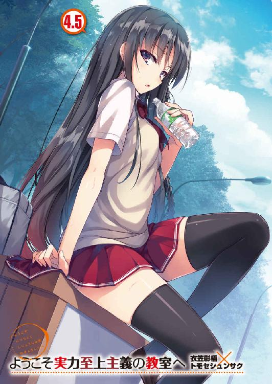
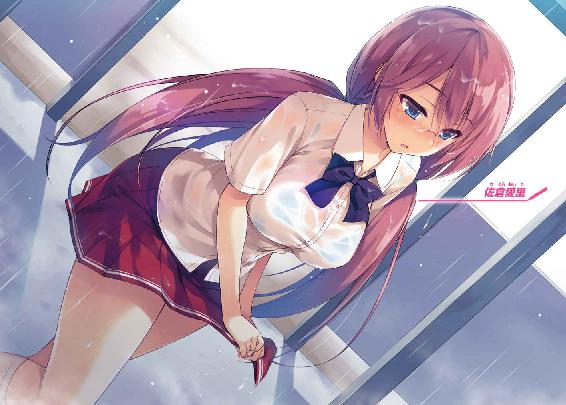
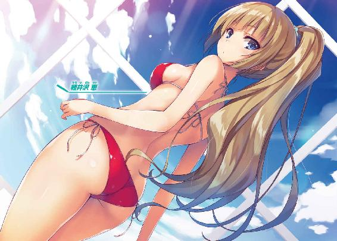
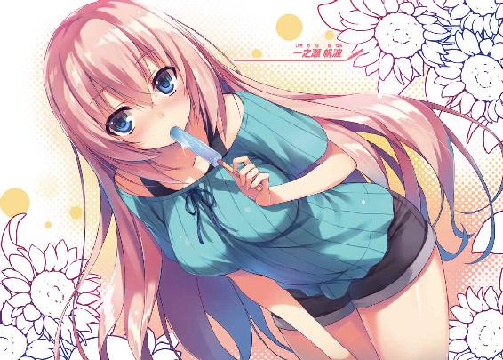
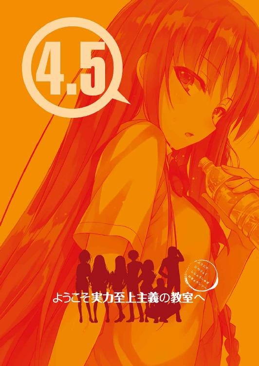
ようこそ実力至上主義の教室へ4.5
衣笠彰梧
本作品の全部または一部を無断で複製、転載、配信、送信したり、ホームページ上に転載したりすることを禁止します。また、本作品の内容を無断で改変、改ざん等を行うことも禁止します。
本作品購入時にご承諾いただいた規約により、有償・無償にかかわらず本作品を第三者に譲渡することはできません。
本作品を示すサムネイルなどのイメージ画像は、再ダウンロード時に予告なく変更される場合があります。
本作品の内容は、底本発行時の取材・執筆内容に基づきます。
本作品は縦書きでレイアウトされています。
また、ご覧になるリーディングシステムにより、表示の差が認められることがあります。
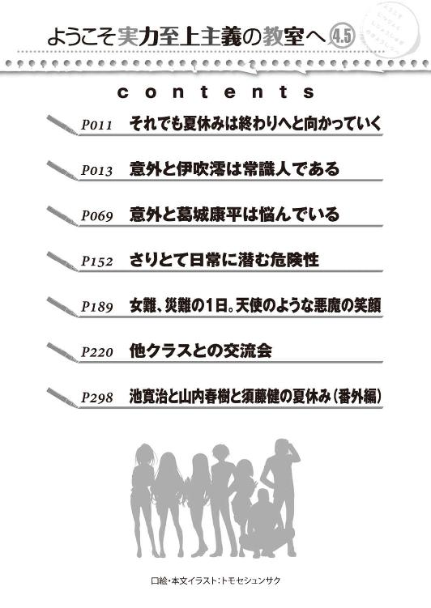
○それでも夏休みは終わりへと向かっていく
サザエさん症候群。
そんな言葉を一度は聞いたことがあるんじゃないだろうか。
簡単に説明すれば、日曜日の夕方に始まったサザエさんを見て、明日やってくる月曜日を想像して憂鬱になってしまうことを指す。
それと似たようなもので、夏休みの終わりが近づけば大半の生徒が憂鬱になってしまう。もっと休みが続けばいいのに、もっと遊んでいたいのに、と。
だが、オレはそうは思わない。
人生で好き勝手出来る時間が溢れるほどにあるのは、基本的に学生の間だけ。
定年までの年齢を仮に下限の60歳とし18歳で社会に出たとすれば、仕事をする年月は42年。小学校から高校卒業までの12年の期間よりも遥かに長い期間だ。それだけの間社会に縛られ自由を得られなくなる。場合によっては定年退職後も仕事に縛られ続けるだろう。もっとも、当然その縛りの外の人間もいる。生まれながら親が富豪だったり、起業して大成功を収めたり。そんなショートカットも用意されているが、宝くじに当たるような確率を望まなければならない。
結局のところ多くの人間は人生の半分以上の間、社会に対して犠牲を払い続けなければならないのだ。
社会的な視点から見れば、学生であることは夏休みを満喫しているのと同義と取れなくもない。
だが多くの学生は、そのありがたみに気がつくことなく大人になっていく。
そして30、40と歳を重ねて初めて、あの頃は楽しかったと振り返るのだ。
今回の物語は、子供と大人の狭間で揺れ動く学生たちの小さな小さな物語だ。
○意外と伊吹澪は常識人である
特別試験。普通その言葉から連想するのは筆記、あるいはスポーツ系の実技試験か何かだろう。だがオレの通う高度育成高等学校の特別試験はそんな甘っちょろいものじゃない。無人島でクラス対抗のサバイバル合宿をさせてきたり、船の上で噓と噓をぶつけ合う知的思考ゲームをさせてきたりと、常識を覆すような試験が夏休みを通し連日続けられた。
そんな１年生に訪れた束の間の休息も今日を含め残すところ７日となった。それが終われば２学期が始まる。
ちなみにオレの休日の過ごし方はシンプルだ。何故なら誰に声をかけられるでもなく誰に声をかけるでもなく一日一日が過ぎていくからだ。つまるところ孤独なのだ。
「別にいいけどな」
自由ってことだけで満足しているんだ。余計な幸せは願うまい。
というより、友人は多ければいいというものでもない。最近はそんな風に考え始めていた。多くの人との繫がりがあればあるほど付き合いは増える。それはそれで少々面倒だ。もし友人から電話がかかってきたとしてもオレは華麗にスルーしてしまうかもしれない。
だが孤独でもやることは幾つかある。今そのうちの一つを終わらせようとしていた。携帯電話を操作し自分のポイント残高にアクセスする。そこに表示された額は10万６２１９ポイント。その内の10万ポイントを別の人物......同じクラスメイトである須藤健へと振り込んだ。
それから程なくして、その振込先である須藤から電話が鳴る。
「よう綾小路、今何してたんだ？」
「特に何も。夕飯を何にするか考えてたくらいだ」
「そうか。俺はさっきササミ食ったぜ。味はシンプルで飽きやすいがその分工夫できるからな。焼いたり煮たり......って、そんなことはどうでもいいんだよ。俺が言いたいのは占いに関してだ」
占い？ それはまた随分と須藤らしくない単語が飛び出してきたものだ。基本的に白黒ハッキリしていることを好む須藤はササミと一緒でシンプルなものを求める。そんな須藤から抽象的なイメージの強い占いの存在が話から出てくるとは。
「実はよ、めちゃくちゃ当たる占い師が夏休みの間だけ『ケヤキモール』に来てるらしい。上級生の間じゃその話題で持ちきりになっててな。部活中もその占い師の話ばっかで気になってんだ。『臨時収入』も入ったしパーッと遊びたい気分なんだよ。つーことで一緒に行こうぜ。もちろん奢ってやるからよ」
クラスメイトである須藤からの遊びの誘いだった。
ケヤキモールと言えば、普段生徒たちが利用する複合施設の名前のことだ。
この学校は敷地内での生活を余儀なくされる分、充実した設備を学生のために整えている。だが、外の世界のように無限大の可能性があるわけじゃない。アイドルのコンサートも遊園地も動物園も存在しない。限られた敷地の限られた施設。裏を返せば狭い世界だ。そんな学校では新たなイベントが到来するたびにちょっとした話題で盛り上がるとは聞いていたが、まさか占いが流行るとはな。予想外だ。とはいえ比較的好意的に話を受け取る。
久しく遊びに誘われることのなかったオレは嬉しさを抑えきれずに聞き返した。
「いつ行くんだ？」
「明日の朝だ。10時からやってるらしいんだが早めに並ばないと行列ができるらしいからな。９時30分には目的地に着きたいところだぜ」
どうやら既に須藤の頭の中であらかたスケジュールは組みあがっているらしい。それなら話は早いな。
「こっちの予定は大丈夫なんだが部活はいいのか？」
「おう。明日は休みだ。例の大会がさっき終わったからその関係でよ。毎日クタクタになるまで練習漬けだったからな。少しくらい休ませてもらわねーと身体がもたないぜ」
須藤は今日バスケットの大会に出場していた。本人も今日の試合のために日々黙々と練習を行ってきていただけに、オレもどうだったのか結果は気になっていたところだった。それともう一つ気にしていたことがある。
「特に『トラブル』はなかったか？」
意味深にトラブルの部分を強調して聞いた。須藤もすぐに意味を察する。
「ああ。かなり苦労したけどな。監督やらコーチやら、中学ン時とは比べものになんねーくらい監視役がいたからよ。試合中以外は他の学校の連中とは満足に口を聞くこともできねえし。便所まで俺らの学校の限定っつーか専用にしてんだからな。流石に無理かと思ったぜ」
やはり例外的に校外に出ることの出来る部活動とはいえ、学校側のチェックは厳しかったらしい。
「けどま、何とかなったぜ。腹いてーつって上手く抜け出せた」
「そうか。それは良かった、山内の方には？」
「データはちゃんと消して戻したから心配すんなって。俺もわかってっからよ」
須藤としても自分の学校生活がかかっている。迂闊な真似はしないだろう。それでも後日こちらから山内に接触してデータの消去が上手くいったかは確認しておいた方が良さそうだ。念には念をだ。
「ちなみに肝心の試合には出られたのか？」
「おう、それも一年で俺だけな。得点も挙げたぜ。とは言っても負け試合だったから自慢になんねーけど」
詳しく事情を知るわけじゃないが一年生で出番があっただけでも相当なことなのだろう。須藤の言葉から悔しさよりも納得したようなニュアンスが感じられたからだ。バスケ部の中で着実に成果を残していると見るべきだろう。恐らく大会に向け懸命に練習に取り組んでいたはずだ。特に一年生は特別試験に駆り出されていて学校を留守にしていた分だけ、練習時間も他の学年より少なかったはずだしな。
「んでどうなんだよ。占い。行くのか行かないのか」
「まぁ特に予定があるわけじゃないから行こうか───」
承諾の言葉を発していると、須藤は会話を食い気味にこう言ってきた。
「絶対に鈴音を誘えよ。絶対に。わかったな？」
「......なるほど」
どうやら須藤はオレと占いに行きたいわけではなく堀北と一緒に行きたいらしい。
しかし自分で誘い出しても成功率が低いと感じ仕方なくオレを担ぎ出したってところか。
「ただなぁ......あいつが占いに興味を示すとは思えないけどな」
「それでも呼び出すんだよ。おまえに出来る唯一の特技だろ？」
どんな特技だよ。オレを堀北呼び出しマシーンとして使うのはやめてほしい。
「一応声はかけてみる。けど期待しすぎないでくれ」
「一応じゃダメなんだよ」
「ダメなのか......」
怒気を少しだけ込めた須藤の言葉には同時に重みもあった。
完全に堀北がいる想定をして、明日の予定を立てているのだろう。
「これは絶対だからな。堀北を誘えなきゃ意味無いんだよ」
「そう言われても、あいつの明日の予定もわからないし、占いに興味があるかも不明だ。買い物とか映画鑑賞とかそっちの方が誘い出すハードルとしては低いんじゃないか？」
「心配ねーって。女は皆占いが好きだからよ」
それは完全な決めつけだと思うが......。
まぁ、どちらかと言えば女子は占いが好きなイメージはある。しかしこと堀北に限って言えばだが、普通の女の子のように喜んで占いに興味を持つ姿は想像できないわけだが。
「いいか？ 誘えたかどうかちゃんとあとで連絡しろよ。絶対だからな」
そう言い強引に通話を終わらせて切った。
須藤がオレを占いに誘うなんて変だとは思ったが、やっぱりこういうことか。
少しがっかりしながらも何とか気持ちを切り替える。
堀北には連絡しておいてやった方がいいだろう。後日要望を無視したことを須藤に知られると対処が面倒だしな。忘れないうちにと、その場で堀北へと電話をかける。
すると程なくして堀北が通話に出た。
「なあ堀北。おまえ占いは好きか？」
女子はみんな占いが好き、なんて世間一般の女子に対するオレの印象論を破壊してくれるのはこの女しかいない。
「開口一番おかしなことを聞くわね」
ごもっとも。だが、こっちとしても他にこの話の突破口が無いのだから仕方が無い。
「答えてくれると助かるんだがな」
「つまり私が答えないことで、あなたが助からない可能性があるの？」
そんな言い返しをされることは想定していなかったが、確かに助からない可能性はあるな。須藤にヘッドロックをかけられている自分のイメージが脳裏に浮かんだ。
「で、助けてくれるのか？」
「あなたに一つ貸し、ということで構わないのなら」
占いが好きか嫌いかを答えてもらうのに貸しを作らなければならないのか......。
携帯を握った右手の親指を少しだけ動かし通話を切ってしまいたい衝動に駆られたが、ここは我慢しなければ。須藤の怒れる顔を浮かべて思いとどまる。
「そういうことにしておいてくれていい」
こちらがその答えに価値を持っていると悟った堀北は、少しだけ間を空けて答えた。
「そうね......熱心な方ではないけれど嫌いと言えば噓になるわね」
意外や意外、堀北からは占いを肯定するかのような返事が来た。
「実際に占ってもらったりとかしたことがあるのか？」
「さすがにそこまではないわ。毎朝、ニュースついでには見たりするくらいね」
ニュースって、よく誕生月占いとか出てるアレのことだろうか。
テレビの前でラッキーカラーが赤だの白だの言って着ていく服を変えたり、鞄にアクセサリーを付けたりする堀北......まるで想像できないな。
「もしかして占いにハマったの？」
「いや、そういうわけじゃないが。最近噂になってるらしい占い師のことは知ってるか？」
「占い師......？」
少し思い出すような沈黙が続いたが、やがて思い当たる節があったのだろう。堀北は納得したような口調で返す。
「確かになんとなく騒がれているみたいね。耳にはしてるわ」
「それで少し気になっただけだ。当たる当たると言われたら、実際どんなものなのかってな。けど、占いなんかが何かの当てになるとは正直思えないけどな」
同意を得られると思って言ったが、電話の向こう側からは異なる意見が返ってきた。
「そうかしら？ 本当に力のある人は当てられると思うけれど」
「いやいや、当てられるってエスパーか何かかよ」
堀北がそんなものを信じているとは意外だ。人の顔や手相、生年月日から未来を予知できる。そんな非現実的なことをオレは信じない。
「そうじゃないわ。占い師に未来を透視する力なんてない。それは当たり前でしょう？ 幽霊が存在すると言ってる人間と同じくらいくだらないわ。ただ心霊系のそれと大きく違うのは、占い師は膨大な過去のデータ、つまり人間のパターンに基づいて占いを行っているということよ。それに加えて目の前の相手を推察する、占い師個人の技量も高く問われる」
単純に夢みる少女というわけではなく堀北なりに理論に基づいた答えを持っていてのことだった。
「つまり、要約すればコールドリーディングを利用した力、か」
「生意気にも知ってるのね」
少し面白くなさそうに答えた堀北。
「私たちは自分自身を客観的に見ることが出来ない。だけど占いのエキスパートは短い会話の中から相手の情報を引き出し、占いを受けた本人自身すら気が付いていなかった部分を見つけ出すことに長けている。結果的にそれが占いの結果として残る。そう考えることは出来るんじゃないかしら」
コールドリーディング。直訳すると事前準備なしに相手の心を読み取るという意味。何気ない会話から本人の情報を引き出し、私はあなたよりもあなたのことをわかっていると思い込ませる話術のことだ。観察力や洞察力によって対象者の情報を得る。そしてそれを言葉巧みに伝えることで未来や過去を透視できると信じ込ませたりする。意味を説明するのは簡単だが、相手に不信感を与えず情報を引き出したり、信じ込ませることは非常に難しく、高い技術が要求される。
「ちょっと興味が出てきた」
「それは良かったわね。行ってみるといいわ」
「何ならお前も一緒にどうだ？」
「冗談でしょう？」
「割と本気だが」
「遠慮するわ」
短い会話の中に誘いの言葉を挟んでみたが、見事に粉砕された。
しかしハイそうですかと諦めるわけにもいかない事情がオレにもある。
「オレは占いに関しては素人だし、堀北がいた方が多少なり理解しやすいかと思ってな」
「悪いけどパス。人ごみに好き好んで行くタイプじゃないのは分かってるでしょ？」
......確かにその通りだ。話題の渦中にある占い師の周りは当然大勢の生徒たちで賑わっているはずだ。場合によっては学生だけでなく、敷地内の大人だってやってくる可能性がある。確かに、堀北が人に溢れた施設の中で、占ってもらってる姿を想像できない。
簡単に撤退せず再確認もしたし、これ以上粘っても向こうの心証を悪くするだけだろう。
オレとしても堀北の言質を取ることが出来たからこれ以上粘る必要はない。須藤も大きく問題にはしないだろう。多分。潔く誘いを諦め通話を切ると、オレは手短に須藤へとチャットを送っておいた。もちろんすぐに既読が付くと不満気な文章が返ってきたが。
そして『やっぱやめるわ』の文字。
やはりオレは堀北を誘うための存在でしかなく、誘えなかった以上用なしってことか。
ま、男二人で占いしてもらいに行くのも違和感はあったわけだが。
「にしても......占いか......」
強く興味があるわけじゃないが、堀北との話で少し興味がわいてきた。
ここはひとつ明日様子を見に行ってみよう。
１
誰だよ、ちょっと占い師を見に行こうなんて思ったのは。
「失敗したかもな......」
わかっちゃいたことだが、猛暑が続く８月下旬の朝は灼熱地獄に襲われていた。
街路樹の先に見えるコンクリートの地面からは、ゆらゆらと陽炎が見える。
学校の寮は、部屋やロビーは言うに及ばず廊下にまで冷暖房が完備されている為、あまり暑さを感じなかった。だが今は夏だ。直射日光を浴びると一瞬で汗が噴き出してくる。
こうやって人間はダメになっていくんだろうな。なんてことを考えながら必死に日陰の道を探す。
幸いなことに広々とした敷地面積を誇る学校には街路樹も多く植えられている。そのため歩道には、陽を遮る影も少なくはなかった。まだ多くの生徒が活発に活動を始める前の９時30分。オレは噂の占い師の場所を目指す。10時から営業が始まるようだが、長々と居座るつもりはない。サクッと占ってもらい、サクっと帰る。それが目標だ。だが目的地が近づくにつれ淡い期待が裏切られていくことに気付く。
ほぼ誰もいないと踏んでいたケヤキモールの周辺には夏服に身を包んだ生徒たちの姿が数多く見受けられた。全員が全員オレと同じ目的ではないことを祈るが、どうも怪しい。とりあえずケヤキ内に入って灼熱地獄から逃げ切り、５階で行われているらしいので近場のエレベーターを探す。
「げ......」
そんな声が思わず漏れた。何故ならエレベーター前は10人近い生徒で賑わっていたからだ。
コミュ症の人間なら理解してくれるだろうか。独りの時、乗り込んですぐに『閉』ボタンを連打するような人間の思考の持ち主であるオレは、同年代に近い人間多数とエレベーターで鉢合わせるのが苦手だ。大勢の一団の中に乗り込んでいくのにも大きな勇気を要するのだ。
ここは多少面倒でも迂回して別のエレベーターから乗ることにしよう。真反対に位置するもう一基のエレベーターの方は、まだ利用する生徒もいないようで貸し切り状態だった。
「落ち着く......」
手間をかけながらもこうして心穏やかに過ごせる方が助かるのだ。悲しいことに。
それから５階に着くと占い師がいると思われるフロアを目指した。そこには先ほどよりも困惑してしまうような状況が広がっていた。
「カップルばっかりだな......」
男女２人で１つのグループ、つまり恋人関係濃厚な生徒たちが大多数を占めていたのだ。もちろん中には男だけ、あるいは女子だけのグループもあったが、ほんの僅か。
占いとは元々そんなものなんだろう。
彼氏（彼女）との相性を、未来を見てもらうこと自体は特別なことじゃない。
ただ、思ったよりこの場の居心地が悪いものなのだけは理解できた。一人で占いに来る人間は少ない。それがオレのような男子とあれば尚更だ。
何はともあれ整列させられていた列があったためそこに並ぼうとする。すると最後尾で列を管理していた女性が辺りを見渡しながら声をかけてきた。
「おはようございます。お連れの方はあとで来られますか？」
「連れ？ いえ、一人ですけど」
そりゃ確かに周りはカップルだらけだが何とも斬新な聞き方だ。独り身のことも考えてほしい。
「あの......」
まだ何かあるのか、申し訳なさそうに女性店員は続けた。
「先生の占いを受けるには二人一組である必要があるのですが......？」
「一人じゃ占ってもらえないと？」
小さく頷き前方を指差す。人の列でよく見えなかったが注意書きが確かにあった。
『お二人様一組としてご案内しております。あらかじめご了承ください』と。
納得。オレのような単身者がどこにも存在しないはずだ。気恥ずかしさ以前に受け付けていないのだからいるはずもない。オレは今、一番こっぱずかしい状態にあるらしい。
そして須藤が執拗に堀北を誘いたがった理由がわかった。この占い形式なら必然堀北と２人で列に並べて話もできるし、占いが終わるまで長い時間を共有できる。
「つまりオレは最初から数に入ってなかったってことだな......」
全てを知ると須藤の態度や言葉の意味が色々と違って聞こえてくる。
ついでに呼ばれたわけですらなかったと。恐らくは理由を付けてオレを追い返すことまで視野に入れていたんじゃないだろうか。何とも悲しい話だ。
「ちなみに隣の列も同じ、ですかね？」
「......はい。右近先生も二人一組の占いをされておられるので......」
「分かりました」
オレは店員に頭を下げて列からスッと離れた。もう後ろに並び始めていた生徒が一歩前に詰める。
まさかこんな落とし穴があるとは。こっちのイメージとしては占いなんて路上の片隅でおばちゃん一人が小銭を集めて細々やってるような、そんなものだった。
最近はこんなカップル推奨のような占いも存在するんだな。一度くらい占いを経験してみるのも悪くないかと思ったが、これじゃ仕方ないな。わざわざ堀北を誘ってまで改め直す価値があるとも思えないし。大人しく撤退しよう。
「は？ 一人じゃ受けられないわけ」
隣の列でも、オレと同じ独り身の被害者がいたのか、怒るような声が聞こえてきた。半ば同情心を抱きつつ視線を送ると、その独り身の存在と運悪く目が合ってしまう。
「あ」
そう短く答えた相手は、こちらへの面識がある人物。
見なかったことにして立ち去ろうとすると、何故か同じタイミングで歩き出し追いかけてきた。
オレは少し足を速める。
「ちょっと」
逃げていると思われたのか（実際逃げようとしたが）追いかけられて肩を摑まれる。
「何か用か？」
「堀北はどこ」
そう短く聞いてくると同時に周囲を見渡した少女。彼女はＣクラスの伊吹澪という生徒だ。こいつも須藤と同じでオレを通して堀北を見ているようだが、伊吹に関してはこの行動で正解だ。ただ、出来ればオレを通さずに堀北だけを見てくれると助かるんだけどな。
「いつもあいつと行動してるわけじゃない。今日は一人だ」
「あ、そう」
先の無人島試験で、この伊吹はＤクラスにスパイとして侵入しＤクラスを混乱に陥れようとした。そして最終的には堀北と拳を交えるような勝負となり、それ以来伊吹は堀北を敵視している。もっと言えばライバル視していると言えるだろう。
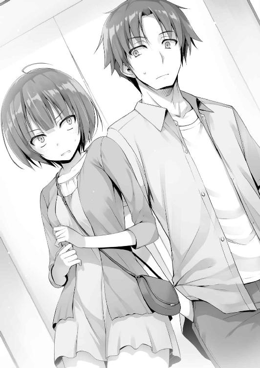
普段のツンケンした性格は変わらないが、なかなか清潔感ある私服で好感が持てる。ちょっと大人しくしていればモテてもおかしくなさそうだ。
「普通占いは１対１でやるもんでしょ。全く以て想定外だった。あんたもそう思わない？」
「そうだな。そんなイメージは持ってた」
「で、あんたは堀北を誘って出直さないわけ？」
須藤といい伊吹といい、話題の中心はこの場にいない堀北だ。
「出直さない。そんなに堀北と話したいなら直接出向いてくれ。一緒に占いに行こうって誘ってみたらどうだ？」
「は？ 絶対に嫌。別に話すことなんてないし」
だったら都度都度、堀北の名前を出さないで欲しいものだ。
「オレは元々、占いにそんなに興味があるわけじゃないから未練はないけどな。そっちはいいのか？」
「未練が無いと言えば噓になるけど......」
二人組の必要性を迫られ難しい問題だと悟る。首を左右に振って未練を捨てた。
「どうしようもないし諦めるしかないかな。あたしは話すのが苦手だから」
それは答えになっているようでなっていないな。こいつは話すのが苦手だと言うが、伊吹は佐倉のように、話していて会話を重ねるのが難しいと感じるタイプには見えない。事実オレとも対等......なんなら上から目線で強気に話しかけてきている。
「龍園でも誘え」
冗談交じりに言うと、堀北と同等かそれ以上に嫌悪感丸出しで睨みつけてきた。
「休みの日まであいつの顔を見なきゃならないのは絶対に嫌。ふざけてんの？」
「船でもあいつと行動してただろ？ 親しいと思うのが普通じゃないか？」
数少ない事実を突き付け、睨みつけられる筋合いは無いと逃げる。
「......Ｄクラスのリーダーを見抜けなかった責任はあるから」
そう小さく答えた。それが正しい答えであるなら、伊吹はその責任を取って龍園と行動を共にしたということだろうか。それだけでは全容は見えてこないがＣクラスにしか分からない理由があるのだろう。とはいえ、特別試験の前半戦、無人島のサバイバル試験で伊吹は堀北がリーダーであることをしっかりと見抜いていたし、それは間違ってはいなかった。オレが妨害しなければ間違いなくＣクラスに大きな貢献をしていたはずだ。
「あんたに聞きたいんだけど、サバイバル試験のＤクラスのリーダーは誰だったわけ」
「さぁ」
「さぁって知らないわけないでしょ」
「仮に知ってても教えられないが、本当に知らないんだ。多分Ｄクラスの連中はほとんど知らないんじゃないか？ 堀北が裏で動いて、何やら上手く調整したらしいとしか把握してないと思うぞ」
伊吹はこちらの奥を見透かすように目を見てくる。
だが、当然簡単な洞察で見抜かれるほどオレも間抜けじゃない。
「......ま、簡単に分かれば苦労しないか」
伊吹は諦めたように肩を竦める。
「龍園がダメなら同じクラスの女子でも誘えばいい。友達の一人や二人いるだろ」
「そんな相手がいれば苦労しない。クラスの女子なんて絶対に嫌」
クラスメイトすら絶対に嫌なメンバーの範疇に入るらしい。この分だと在校生全員、伊吹の嫌悪の対象臭い。伊吹は堀北と同等......それ以上に人を毛嫌いしている節がある。
そういう意味では似た者同士、ちょっとしたキッカケで仲良くなれそうなものだが。
「今オレと話しているみたいに、伊吹は誰とでも普通に話せたりするだろ。人付き合いが苦手って感じはしないけどな」
「そんなことないし。あたしと話してると感じるでしょ、刺々しい感じ」
「まぁそれはな」
伊吹と会話するごとに鋭利なスジ切り器で突き刺されているような感覚はある。それはおそらく伊吹なりの他人に対する距離感の表現。他の生徒にもそれは如実に伝わるだろう。
「どうしてもこんな風になるから空気が常に悪いわけ。わかる？」
つまり、話すのが苦手だから、クラスメイトを誘うこともできないってことか。表現として『苦手』が正しいかは怪しいが、クラスメイトですら全員敵視してるところがあるからだろうな。この伊吹は。
占い師相手でも強気な姿勢で挑むイメージが少しだけ見えた気がする。
「人と話すのが苦手なのに、よく占いをしてもらおうと思ったな」
「それも悩みの種。猫は好きだけど猫アレルギーみたいな。そんな感じ」
それは実にもどかしいだろうな。好きだが受け入れがたいものもある、ということか。
「そんなんでよくＤクラスのスパイができたもんだ」
元々ツンケンしたところはあったが、それでもスパイ活動中に嫌味な感じは、然程しなかった。Ｄクラスの生徒たちだって疑いもせず伊吹を受け入れたくらいだからな。
「それとこれとは別問題。とにかく他人と話すってのは緊張する。緊張するから神経を尖らせる。あたしはそれが嫌。だから仕方ないでしょ。あたしだって好き好んでこんな自分になったんじゃない。って、なんであんたとこんな話してるんだか。勘違いされたらどうすんの」
伊吹はそっぽ向くように話を打ち止めにした。
ただそれはこっちのセリフでもある。気がつけば周囲の人は全部列に並んでしまいオレたちだけが離れた位置で二人きりだ。他の生徒から勘違いされかねない。
しかし緊張するから神経を尖らせる、か。
苦手の根本はそこにあるのか。だとすれば意外と対処法は分かりやすいかもな。
過去の緊張してしまうようになったルーツを探らずとも、対処できるプランがある。
「おまえ、さっきスパイのときはまた別問題だって言ったよな」
「言った。事実その通りだから」
「ならその時といつもの違いはなんだ？」
そう聞くと伊吹は答えを詰まらせて一瞬黙り込んで、自分なりの答えを口にしてきた。
「そんなこと知らない。違うものは違う、それだけでしょ」
答えというか違いを考えることを放棄しているようだった。
「深くは考えたことがないみたいだな」
「当たり前でしょ。細かい違いなんか分かるはずもない。演技してたからじゃないの」
「いや、意外とシンプルだと思うぞ。他人と話すこととこの間の演技との違い、それは多分『認識』の違いだ」
「認識？」
思いもしなかった言葉に、伊吹は僅かにだが興味を持ったのかこっちを向いてきた。
「人は誰だって相手を初対面だと思えば緊張する。だが、それは意識するから緊張するんであって、そこに演技や暗示があったか無かったかに違いは無い」
異性の苦手な人間が『今から自分はリア充になるんだ』なんて暗示をして合コンに出かけたとしても、饒舌に話せるわけでも緊張しないわけでもない。結局いつも以上の力は出せない。もしそれで巧みに話が出来たとしたら、それは最初からそれだけの能力を持っていたに過ぎないのだ。コミュニケーションと運動神経は同じと考えれば簡単だ。才能と培ってきた能力が試される。
つまり伊吹は『話す能力はある』が『うまく使いこなせない』だけなのだ。
「おまえはこれまで様々な相手に対して勝手な妄想を広げて初対面だってことに捉われた。それが緊張に繫がった。結果上手く話せなかったってことじゃないのか？」
「なにそれ、どういう意味？ コミュニケーション能力が高いヤツならいざ知らず、普通初対面は誰だって緊張するでしょ」
「もちろんな。オレだってそうだ。けど、商売人にまで緊張するのは少し過剰すぎる気がする。例えばだが、おまえはコンビニの店員相手にも緊張するのか？」
「は？」
「大抵立ち寄ったコンビニで会う店員なんて初対面だ。ポイントカードはありますか？ 温めますか？ そんなことを口にする店員相手に緊張する、なんて思わないだろ」
「そりゃまぁ......」
結局相手のことを考え意識するから緊張してしまう。相手にどう思われるんだろう、よく思われたい、良い人であってほしい。そんな風に考えることから緊張は始まっている。
Ｄクラスに潜入した時の伊吹にはそんなところまで考える余裕がなかったはずだ。ただ自分を被害者に見せることに精いっぱいで、そもそも他人と話をしたいという意識はなかった。だから何も考えずとも上手くいったに過ぎない。
何故ならいつも通りのはみ出し者感を出すことで、Ｃクラスとの対立を装えたのだから。
「言われてみれば、確かにね......」
「占い師とは面と向かって話す印象があるからな。それで緊張を覚えるのも無理はないが、深く考えないことが緊張を緩和することに繫がるんじゃないか？」
「......なるほど。って、なんであんたにそんなことをレクチャーしてもらわなきゃいけないわけ」
伊吹はハッとしたように気が付き、今にも飛びかかってきそうな勢いで睨まれた。
「独り身が長くなるとそんなしょうもない知識が身に着くんだよ。自分はどうして友達が出来ないのかを考えることから始まって、今言った緊張する相手としない相手の違いを考え、そして最終的に人はどこからやってきてどこへ行くのかを考えるようになる」
「怖っ......。あんたみたいなやつが将来大量殺人とかやりそう。......そんなキャラだっけ？」
「......まぁいろいろだ」
ちょっと深く話し過ぎた分ノリで誤魔化そうかと思ったら、かなり際どい方向になってしまった。おかげで変人のイメージを植え付けてしまったかも知れない。
「とりあえずオレは帰る。おまえは？」
「あたしも帰るかな。結局一人じゃ占ってもらえそうにないし。天中殺には興味あったんだけどね」
「天中殺......？」
普段全く聞きなれない言葉に思わず聞き返してしまった。
「そんなことも知らないでここに来てたわけ？」
呆れられて溜息をつかれた。そんなことを言われてもこっちは正真正銘の素人だ。漠然と占ってもらおうとしてたって自由だろう。
「簡単に言えば、自分の悪い時期が見えるって占い」
占いの世界は深いと聞くが、対象者をピンポイントに占うこともできるのか。ど素人のイメージなんかじゃ赤色を身につけなさいだとか、今月は忘れ物に気をつけなさいだとか、そんな程度だと思ってた。ところが伊吹の話じゃそんなものじゃないらしい。
「あたしはそれ目的だったんだけどね。まさかそれが色恋メインだったなんて」
残念そうに言い長蛇の列を振り返る。
「学生からすれば恋愛に占いをそう利用することは不思議じゃないだろ。実際に天中殺？ を目的に来てる占い好きだっているはずだ」
「だとしてもね。二人一組を強要させる時点でお察しって感じ」
そして別れの言葉を残すこともなく伊吹は立ち去って行った。
２
帰宅したオレは天中殺について調べてみた。すると奥が深い奥が深い。
１９８０年直前には世間がその話題で持ちきりになるほど、天中殺が注目を浴びたことがあったらしい。
しかしブームになると同時に、その信憑性も問われることにもなった。ある有名占い師が天中殺を外してしまったことから引退に追い込まれ、それが大きなニュースにもなっている。
占いそのものに価値がないとは言わないが、のめり込んだり、信じすぎることも問題だな。だが、占いというものがそれだけ多くの人の関心を惹きつける魅力的なコンテンツだとも言える。曲がりなりにも一世を風靡し、今現代でも信じられていることから考えるとそれなりの的中率もあるんだろう。
こうなると俄然好奇心が湧いてくる。
どれだけネット上の過去の記事が、真実を語っていたとしてもやはり信じられない。
占いで未来を、人間を見通すことなど出来るはずがない。だからこそ一度占ってもらい、それが噓であること。コールドリーディングの延長であると結論付けたい自分がいる。
「今月いっぱいまでしかやってないのか」
調べてみるとこの占い師たちは夏休みが終わると撤収し、次にいつやってくるかは不明らしい。場合によってはもう二度と占い関係の人間がこの学校を訪れることはないかもしれない。
「とはいってもな......」
誘う相手がいない。この時点で今回は詰んでしまっている。
堀北には一度断られているし、櫛田を誘う勇気はそもそもない。
佐倉なら頼み事を聞いてくれそうな気もするが、カップルだらけの人混みに呼び出せば、不快な思いをさせてしまうかもしれない。
あとは須藤や池、山内なんかの男連中だが、貴重な残りの休みを割いてまで男だけで占いには行きたがらないだろう。
「......詰みか」
シンプルな答えが出る。オレの限られた交友関係ではどれだけ頭を捻っても無理そうだ。
そもそもカップル前提の占いというのが気に入らない。伊吹のような考えにも至るというもの。純粋に占いに興味がある人間に取っては大きな弊害と言わざるを得ないだろう。
そんな風に締めくくりネット検索を終了した。
３
そんな諦めた翌日、不思議と足が占い師の下へと向いてしまった。
多分連日暇だったからだ。それ以外に理由はない。
「あ」
そしてまたも奇妙なめぐりあわせ、伊吹と同じ時間同じ場所で再会してしまう。
「なんでまた来てんの......しかも一人で」
伊吹は気持ち悪いと自分の身体を抱き寄せ露骨な嫌悪感を示す。
「それはこっちのセリフでもあるぞ。そっくりそのまま返す」
「占いが好きだって言ったでしょ。もしかしたら一人でも占ってもらえるかもって思っただけ」
再度交渉というか状況が変化していないかを期待してやって来た感じか。それだけ伊吹は占いが好きってことなんだろうが。占いのどの部分を好きに思っているのか知りたくなった。
「素朴な疑問なんだが、伊吹は占いを信じている人間なのか？」
「あたしが信じてちゃいけないわけ？」
「いや、そうは言わないが......俄かには信じられるものじゃないだろ」
占いが堀北の言っていたコールドリーディングのような話術で成り立っている、という風に誰もが理解しているわけじゃない。そうするとその他大勢は摩訶不思議な力を信じていることになる。
「占いに興味を持った人間が最初に考えることだけど、その考えを捨てられないならあんたは占いに興味を持つのはやめといた方がいい」
「信じない者に占いを受ける資格はないってことか？」
「そうじゃないけど......。言っておくけどあたしだって無条件に占いを信じてるわけじゃない。だけど最初から疑ってばかりの人間に得られるものはなにもない」
語るように伊吹は続ける。
「占いをバカにする人間は大抵が矛盾を抱えてる。多くの人は神や仏は存在しないと言い切る癖に、困った時は神頼みするじゃない」
上手い表現だ。神なんていない、幽霊なんて存在しない。そんな風に啖呵を切る人間も大抵は神に祈る。正月なんかに初詣に行って、無病息災、商売繁盛、恋愛成就。神様どうかお願いしますと手を合わせる。それは占いに置き換えても同じことだ。何を信じ何を望むかは千差万別。誰にも否定する権利はない。
けど。と、そう心の中で付け加えて考える。確かに伊吹の話は理解できたが、それでも占いは神や仏とは違う。実際に存在する同じ人間がすることだ。それに対して疑問を抱くのもおかしなことじゃない。
「理解できた？」
「ああ。わかりやすかった」
疑問点は残るが、伊吹の言いたいこともよく理解できた。そこで１つ提案をしてみる。
「なあ、今やってる占いは二人一組といっても恋愛の相性だけを占うわけじゃないんだろ？」
「普通に考えればね」
「だったらこの際相手のことは無視して占ってみるってのはどうだ。オレもおまえも純粋に占いに興味があるだけだし。どっちにしても後腐れない関係なら問題も生じないと思う」
そんな提案をしてみた。オレ自身伊吹にはフラットな気持ちしか持っていない。
良いも悪いもなければ一見さんみたいなもの。
「あたしは構わないけど......。占いはしてもらいたいし。でもあんたはいいわけ？」
「堀北ならただの友達だからな」
「そうじゃなくて。無人島でのこと恨んでる生徒も少なくないでしょ」
どうやら伊吹なりに配慮してくれているつもりらしい。一緒にいるところを見られれば、オレがクラスメイトに恨まれるんじゃないかと心配してくれているのだ。
「その心配はほぼないんじゃないか？」
そう答えると、伊吹は不思議そうに首を捻った。
「どうしてそんな答えになるのかわからない」
「これが仲良しこよしの学校なら、おまえのしたことは大きなモラル違反かも知れない。でもこの学校は実力がすべてだと謳っているし、何よりクラス対抗の試験だった。場合によっちゃスパイ活動だってやるし妨害工作だってする。違うか？」
「理屈じゃない感情で納得できない部分だってあるんじゃないの。頭が柔軟なヤツばっかりじゃない」
「そういうヤツはそもそも、この学校に在籍してる資格もないと思うけどな」
ハッキリと意見を伝えると伊吹は腕を組んで少しだけ考える仕草を見せた。
「意外と図太いのね」
「オレはオレで落第生だけどな。這い上がることも蹴落とすことも興味がない。堀北のような他の生徒の努力で上に行ければラッキーくらいにしか考えてない」
伊吹のように自分の力でどうにかしようとしている生徒からすれば、鼻で笑うような話。
なのに伊吹は笑うこともバカにすることもなかった。
「珍しくはないんじゃない。そもそもこの学校に入学したのは皆卒業時の特権狙い。それがこんな形で競わされるとは思ってなかったから、面食らってる連中が大半だし」
どうやらＣクラスの人間もそこまでＤクラスと変わりないらしい。だとすれば、早い段階で龍園に目を付けられスパイ活動を任された伊吹はＣクラス内でも相当上の立場なのだろう。事実正体を周囲に悟られてからは、龍園の傍で行動していることも多い。こいつはミスしたから龍園と一緒にいると言ったが、やはりある程度龍園に信用されているからこそ共にいるはずだ。
２人納得したところで列に並ぶ。昨日オレの応対をした店員が今日は２人で来ていることを確認すると整理券と思われるものを手渡してきた。どうやら８組待ちらしい。
「しばらく待つことになりそうだな」
１列に対し占い師が１人であれば、一組10分だとしても１時間以上待たなければならない。長丁場になりそうだな。あとはどうやって１時間以上も二人で耐え続けるか。多分会話が長く続かない。
「あ、沈黙とか気にしないで。占いだけの関係だし無意味にしゃべる必要もないでしょ」
「そうだな......」
こっちの考えはお見通しらしい。それなら手間が省けて助かる。
４
「では次の方どうぞ」
小さな佇まいの仮施設の中から、そんな声が聞こえてきたのはお昼真っ只中。
「待たされたな」
結局一組15分近くは使っていたようで、相当立ちっぱなしを強いられてしまった。内心占いのことがどうでもよくなりかけてた頃、布をくぐり占い師の待つ部屋の中へ。
するとそこにはテレビでよく見るような光景が広がっていた。暗めの照明は30ルクスほどだろうか。それに加えてどこの何かもわからない分厚めの本にハンマー投げの玉ほどの水晶玉。占い師とおぼしき老婆はフードを被っていて表情を窺いしれない。雰囲気だけは一級品だ。
今すぐにでも水晶玉が輝きだし、オレや伊吹の未来を映し出してきそうだ。
背もたれのない丸椅子が二つ占い師の前に置かれてある。ここに座れということだろう。二人で腰を下ろすと、占い師は薄く笑い右手を動かした。
「まずは───料金の支払いを」
そう言い、机の下から小型カードリーダーをテーブルに置いた。
占いの館らしい見事な雰囲気から、突如として現れた文明の利器に違和感を隠し切れない。無料だとは思っていなかったが、急に現実に引き戻された気分だ。
「何を占ってもらえるの？」
学生証を出す前に、伊吹がそう言って質問した。
「学業、仕事、恋愛、好きなものを」
ニヤリと不気味に笑う。この辺りは迫力を感じさせるが、印象としては占い師というより魔女だ。ただし、テーブルに置かれた料金表とは実にミスマッチだが。
料金表は細かく幾つかに分類されていて、今占い師が口にした項目は『基本プラン』に含まれているらしい。そこにセットが幾つかあり、その１つに天中殺に関するものも。他には人生の最後までを見ることが出来る占いコースも記載されていた。あとはペアで占うことを前提としているため、恋愛に関するものが多い。勝手な想像だが占いで相性が悪いと指摘されたりしたらどうするつもりなんだろうか。ただどのコースにしろ５０００ポイント以上と中々高額だ。
「にしても......高いな」
日々ポイントのやりくりに困っているＤクラスの生徒としては手痛い出費だ。
とはいえここまで来て天中殺を調べてもらわずに帰るのは無意味に等しい。伊吹の占い結果を聞いて帰るということもできるが、それでは実際どこまで信憑性があるかわかったものじゃないしな。オレは念のためと思い携帯で残高を確認する。画面に自分のプライベートポイントが表示される。残高は６０００ポイントほどで、ギリギリなんとかなりそうだった。
「あたしは基本プランだけで」
意外なことに占い好きを公言した割に、詳しく占ってもらうつもりはないらしい。
「あんたはどうする？」
「伊吹と同じプランで」
もはや定食屋でご飯を頼んでいるかのような気分になりながら、そう告げて学生証をかざす。ピッ、という電車の改札口で使いそうなカードの音がして残高が引き落とされた。
「ではまず、そっちのお嬢さんから。名前は？」
「伊吹。伊吹澪」
そう短く答える。
「私の占いは相手の顔、手、そして心を見る。その中で見たくないものも見えることがあるが？」
「好きにして」
信じているのかいないのか、伊吹は占い師の言葉に動揺することもなくそう答えた。占い師のフードの隙間から見えるしわだらけの皮膚、その隙間から覗かせる眼光は鋭かった。
それから伊吹に両手を出すように指示し、ゆっくりと占った結果を話し始める。
「まずは手相。生命線は長く長生きするだろう。大病も今のところ見えていない......」
何ともよく聞きそうな話が始まった。手のひらの線でそんなことまで分かるとは思えない。ダメだと思いつつも先入観などで占いを否定してしまいたくなる。占い師個人の経験に基づく統計から判断しているのか。こっちには単純に健康体の客が多いことを利用して、相手の顔色などを伺いながら答えているようにしか思えなかった。
それからも、学業や金運、恋愛などありきたりとしか思えない答えをツラツラと続けられていった。
普通なら詐欺だと怒りそうなものだが、伊吹は満足気に占い師の言葉を聞いている。ほとんど悪いことも言われず、ただ明るい未来を啓示する。時折注意するよう促すことも言うが特別命の危険を伴うようなものではなかった。
「ありがとうございました」
占いを終え伊吹は丁寧に頭を下げた。占いの何たるかを理解する間もなくオレの番がくる。
占い師は先ほどの伊吹と同じような手順で占いを始める。
オレの時の解答も伊吹とほぼ大差はなかった。状況などは異なるものの基本的には良いことを言い、時には厄災に気を付けること。その心得を伝えられる。
「......なるほど。お主は幼少期なかなか過酷な生活を送っていたらしい」
そんなアバウトに言われても。大抵の子供は幼少期に自身が過酷だと感じた事の一つや二つ経験している。それが男なら特にだ。出来ればもっと具体的に答えてほしい。
それよりも未来を占うはずの占いで何故過去を占おうとしているのかも謎だ。
しかし隣の伊吹は突っ込むわけでも欠伸をするわけでもなく真剣に聞き入っている。
ひょっとして占いとはこんなものなんだろうか。
あるいは必要な儀式として、まずは過去を遡っているだけなのだろうか。
ああ、占いはこんなものなのだろう。この段階まではそう思っていた。
人間は都合の良い生き物だから。ここで言われた『幸運』を記憶のどこかに一度仕舞っておき、まったく占いの影響は関係ないにもかかわらず、幸運が訪れた時に引き出しを開けて勝手に解釈する。
『ああ、あの時の占いはこの時のことだったんだ』と。
だが実際は違う。誰しも人生に、大なり小なり幸も不幸も訪れるのだから、当てはまるのは必然なのだ。
「これは......」
改めて儀式のような真似事をしていた占い師の手が止まる。
「おまえは宿命天中殺の持ち主だ」
「うわ、マジで」
その結果に驚いたのは、当の本人を置いておいて占い師と伊吹だった。天中殺ですら昨日まで知らなかった単語なのに、また新たに単語を増やされても混乱するだけだ。
「簡単に言えば、生まれてからずっと運の悪い人生を送ってるってこと」
「それはまた見事なもんだな......」
偶然の産物だろうが当たってはいる。
ただ、これに関しても曖昧であることには変わりがない。ちょっと自分を悲観的に見れば運の悪い人生を送っていると思っている人間も少なくはないだろう。
しかし珍しい天中殺であるのなら、それを口にしたことは占い師にとってもリスキーだ。
「ちなみにその宿命天中殺ってのはこれからも続くのか？」
「今そこの小娘が運の悪い人生を送っていると言ったがそれは少し違う」
「小娘って......」
「宿命天中殺は確かに稀。しかしだからと言って一生不運が定められているわけではない。確かに流れが悪く、家系、親の恩恵を受けられないなどの弊害はあるが、あくまでも個性。何を成すか成せるかはこれからの自分自身が決めること」
先ほどまでの険しい表情から、瞳の奥へと慈悲が籠っていくようにも見えた。
「悲観する必要もなければ喜劇の主役のようにふるまう必要もない」
興味深い話はいくつか聞けたが、所詮は占い。
目を血眼にして耳を傾けるような話ではなかったな。
椅子から立ち上がり引き上げようとすると、占い師に呼び止められた。
「お主らにひとつ助言じゃ。遠回りせず真っすぐ帰るように。余計な道を通ると長い足止めを食らうやもしれぬぞ。もし足止めを食らっても慌てるな。冷静になり協力し合えば乗り越えられる」
そんな予言めいた言葉を残した。
５
「どうだった。初めての占い」
「そっちは？」
「概ね満足ね。あの占い師は世間でも結構有名だし、的中率も高いって話だから」
「そうだな......簡単な職業のように見えて難しいんだろうな」
「なにそれ」
半分以上はテンプレート、よくある占いのイメージ通りの言葉が躍っていたが、中にはドキッとさせられることがあったのは事実。それはこちらの提供したキーワードだけでは辿り着きがたいものだ。
長い人生や、占い経験があれば立てられる単純な憶測だけとも思えない。
「これからはたかが占いと軽視しない。そんな感想だな」
「あ、そう」
自分から聞いて来たくせに実に投げやりな返事だ。互いに近場のエレベーターまで来る。
「げ......また混んでる」
行きも地獄帰りも地獄。エレベーター前は生徒たちで溢れかえっていた。
「悪いけどオレは迂回して帰らせてもらうから」
「あたしも」
どうやら伊吹も、オレと似たような思考をしている様だ。
二人で遠くのエレベーターに向かっていると先ほどの占い師の言葉を思い出す。
「そういやさっき......」
「占い師が言ってたっけ、迂回するなって」
伊吹と一瞬目があう。偶然か必然か確かに今迂回しようとしているが......。
「まぁ面白いかもな。あの予言がどんなふうに当たるのか」
あるいは全く何も起こらないまま帰り、やはり占いなんて、となるのか。
結局何事もないまま遠くのエレベーター前までたどり着いた。行きと同じくこの辺りには誰もいない。使い放題のエレベーターを呼び乗り込む。
「１階でいいのか？」
「そのまま帰るし」
互いに寄り道はしないようで、１階のボタンを押して扉を閉めた。
ゆっくりと動き出すエレベーター。
特にこれ以上話すこともないオレたちはエレベーターの中で沈黙を過ごす。ところが動き出したのも束の間、３階のマークが点灯した直後に重たい音を立てエレベーターが停止したのだ。
誰かが３階で乗り込もうとしたというわけではなさそうだ。エレベーターは３階から下に降りようとしている途中で止まったように見えた。あれこれ考えている間に視界が一瞬真っ暗闇になる。が、その直後非常灯がつくことで暗黒の事態は避けられる。
「もしかして停電？」
「ってことなんだろうな」
エレベーターの故障場面など実際に遭遇する人間の方が少ない。これが占い師の言っていた思わぬ足止めなら、ある意味的中してしまったことになるだろう。
「とりあえず普通に非常電話でいいんじゃないか」
ここは慌てる必要はない。エレベーターは故障のときの為にその手段を用意してあるのだ。エレベーター内には監視カメラもあるし、非常ボタン（防災センター等へ繫がるインターフォン）などが設備として整えられている。異存ない伊吹は任せたというように後部で壁に背中を預けるようにしてもたれかかった。オレも他人との会話が得意なわけじゃないんだけどな......。ボタンを押して呼び出そうとする。
ところが───
「全く応答がない」
コールが鳴っているのかどうかは分からないが、防災センターへ繫がる気配がない。
「停電だから電話が繫がらないんじゃない？」
「いや、通常エレベーターには数時間は持つバッテリーが常備されている。実際非常灯がついてるのがその証拠だ。となればもう内部的な故障以外には考えられないだろうな」
試しに聴覚障がい者用ボタンを押してみるが、こちらも反応してくれない。要はボタンに当たる操作盤が死んでしまっているのではないだろうか。
バッテリーは生きているし空調も動いている。この点は救いだが、どうしたものか。
「携帯で学校に連絡してくれないか。圏外じゃないはずだ」
「悪いけどそっちでやってくれる？」
「他人と話したくない気持ちは分かるが、それくらいやってくれてもいいだろ」
「ったく......」
嫌そうに取り出した伊吹だが、画面を見るなりバツの悪そうな顔をした。画面をこちらに向けてくる。画面にはバッテリー不足を示すマークが映っていて、直後に電源が落ちる。
「携帯で連絡しあう相手もいないから、バッテリーが切れるまで気づかないこと多いのよね。あんたので掛けて」
「仕方ないな......」
携帯を取り出す。そしてオレは画面を見るなり硬直した。
「早くかけてよ」
「どうやら思ったよりも事態は深刻なようだ」
さっき伊吹がオレにしたように、今度はオレも自分の携帯を伊吹に見せる。画面に表示された残量バッテリーは僅か４％。今にも消えてしまいそうな風前の灯火だった。
「あんたよく人の事バカにしたわね」
「おまえと似たようなもんだ。普段話す相手が少ないから持ってなくても困らないからな」
「いやいや、今実際困ってるし。使えない男ね」
「お互い同じような立場にいるのにずいぶんな言いようだな......。問題はどこに掛けるか、だな」
警察や救急に掛けることも出来るが、何かが違う気がする。学校の敷地内であればもっと掛けるところはあるはずだ。そう思いエレベーターの緊急連絡先が乗っていないか探してみる。するとエレベーターのボタン操作の付近に10桁の番号が書かれていた。
しかし───どこの誰がイタズラしたのか下４桁がマジックで塗りつぶされていたのだ。
「こんなイタズラダメだろ......」
「あんたの知り合いにかけて助けてもらえば？」
「知り合いね......」
それしかないが、問題は誰に連絡するかだ。
「手堅く行くなら堀北だな」
「却下」
「......言うと思った」
「もしそうなったらあいつに助けてもらうってことでしょ。冗談じゃないし」
この状況で誰が助け出しても関係ないと思うが。それに伊吹の失態というわけでもなく単純にエレベーターの故障なのだから気にすることはないんだけどな。
ライバルに自分の弱みというか困っている姿を見せるのが気に入らないんだろう。
「騒ぎにはしたくないよな、そうすると」
伊吹が小さく頷く。極力騒ぎ立てずに救出してくれそうな人物か。そうすると３バカは最初から論外だな。こういうイベントじゃあちこちに吹聴して回ってもおかしくない。かと言って広める恐れのない佐倉に頼っても、解決も難しい。大人への連絡もオロオロしてしまうだろうし、向こうにも大きな迷惑をかけてしまう。同じように櫛田や軽井沢もこの件には不向きだ。円滑に進め最小限で動いてくれる存在。そして頼りにできる───。
「そうすると......」
こちらのアドレス帳に存在する中で頼れるのは、あの男しかいないだろう。
「おまえの意思は汲むけど、あとの人選はオレに任せてもらうからな」
「堀北じゃなければね」
そこだけ再度念押しをされ、オレはすぐにある男に電話をかけ始めた。コールを鳴らすこと数秒、寡黙なその男が静かに通話に出る。そしてオレは今の状況を説明し助けを求めた。だが通話を始めて僅かな後、携帯が静かにブラックアウトした。
「バッテリー切れだ」
「うまく伝わった？」
「たぶんな」
後は座して待つしかない。とは言え慌てることはない。この状況には遅かれ早かれ必ず別の誰かが気付く。ドラマや映画のように下手にエレベーターから脱出しようとしても危険を伴うだけだ。
しかし事態は思わぬ方向に進んでしまう。機械の重低音が突如として室内に響き渡ったかと思うと、心地よい風を送っていたクーラーが停止してしまったのだ。
「噓でしょ......」
それまで他人事の様だった伊吹も初めてここで動揺を見せる。夏場の密閉された空間だ、急激に温度が上がっていくことは容易に想像できた。今は周囲の空気が少し生ぬるくなっただけだが、時間が経てば嫌でも汗が噴き出してくるだろう。
「自力で出る方法は？」
「救出口はついてるみたいだけどな......」
昨今減りつつあるという、エレベーターの天井に取り付けられている四角い出入り口。映画でもお馴染みのこれだが、確か現実では───。
「あれってどうやって開けるわけ？」
伊吹が上を見上げながら疑問を抱くのも無理はない。通常この救出口は内側から開かない。外から助けに来た人間が密閉されたエレベーターを開ける最終手段であり、通常点検時以外は外からロックされているはずだ。
「何もしないのが得策だと思うぞ。エレベーターの非常時は中で待つのが鉄則だ」
それが一番確実であり安心な方法だ。
「この蒸し風呂に我慢できるのなら、ね」
不毛な会話を繰り広げているうちに室内の温度が上がってきた。ここから出たくなる衝動は分かるが、下手な行動は避けたい。オレは上着を一枚脱ぎ、床に座る。
こんな時は落ち着き体温を上げないことだ。
「おまえも座ったらどうだ？ それに暑いなら脱ぐ手もある」
「......は？ あんたまさかこの状況でゲスなこと考えてるんじゃない？」
どうやらオレのセリフをそのまま受け取ってしまったようで、伊吹が警戒心を高めた。
「おまえが堀北とやりあったのは聞いてるよ。そんな奴にオレが敵うわけないだろ」
「そりゃそうだけど......」
「もちろん服を脱ぐならオレは背中を向けてるから安心しろ」
「脱がないし」
それは嫌だと言い伊吹はストンとその場に座り込んだ。
─────。
それから30分ほど大人しく待つが一向に連絡が入ることはない。
「参ったな......」
傍で伊吹の荒くなっていく息を聞きながら、そう呟く。
額に浮き出た汗。頭部から染み出た汗が髪の毛先をつたって滴り落ちる。
シャツは既に滝のように濡れ、想像より遥かに危険な状態に襲われつつあった。
よくよく考えれば、このエレベーターはケヤキモールの壁面に設置されている。普段は空調のお陰で影響を感じないが、非常に熱が籠りやすい条件下にある。夏場車内に子供が放置され死亡する事故が起こるが、それは大人にも同じことが当てはまる。いわば熱中症がオレたち二人を襲い始めていた。
「あーもう限界！ 動け！」
苛立つように伊吹が立ち上がると、思い切りエレベーターの中を蹴り飛ばした。蹴った箇所が思い切り凹む。更にもう一発同じ個所に蹴りを入れる。ぐわんと揺れるエレベーターだが動き出す気配はなかった。
「無駄に体力を使うぞ......と言いたいとこだが、流石にジッとしてるのも安全とは言えなくなってきたな」
仮にエレベーターが停止して５分で外部の人間が非常事態に気付いてくれていたとしても、救出隊が駆けつけるまでは大体30分ほどか。そろそろ助けが来ても良いころだ。
その時間室内に居続ければ熱中症は避けられないし、場合によっては命の危険も出て来る。こうなると大人しく待っていることが正しい選択で無くなってくるか。
「やるしかないか......」
エレベーターサウナで蒸し殺されるのはこっちとしてもご免だ。
「正面蹴破る？ ねえ、蹴破る？」
もう暑さで冷静さを失いつつある伊吹は暴走したくなる衝動を抑えるのに必死だった。
「とりあえず出る出ないは別として、上の救出口が開くか試すか......」
今必要なのはこの密閉状態を脱却することだ。外に出ずとも開いてくれさえすればいい。
「高さは───２ｍ以上あるな。２・２ｍか２・３ｍほど」
オレが手を伸ばしても当然届かない。
「どいて」
高さを計っていたオレを伊吹が威圧して下げさせると救出口の真下でジャンプした。
見事な垂直飛び。そして右手の掌を広げ、思い切り上へと押し上げる。
だが救出口はピクリとも動いた気配はなく、着地した伊吹の衝撃でエレベーターが大きく揺れた。
「......閉まってるっぽい」
「だろうな」
蓋をしてあっただけなら、今ので十分に開きそうなものだ。
「あんた閉まってるって予測してたけど、もしその通りだとしたら施錠方法は？」
「どうかな。南京錠なんかで締められてるとは思うが......それがどうかしたのか」
こればかりはオレにもわからない。
「蹴破る」
「いや待て。さすがに無理だろ」
足技に自身があるのか知らないが、簡単に蹴破れるようなものじゃない。
「あの扉は救出口って奴なんでしょ。つまり外に開けるもの。だから救出する人間は上に蓋を開くわけだから、こっちから見れば外開きの扉ってこと。必要な力も最低限で済む」
言ってることは分からなくもないが、状況が状況だ。
そもそも天井にある時点で、蹴りが入らないどころか足を当てることも難しい。
「やってみなきゃわかんないでしょ」
伊吹は一刻も早くこの暑さから逃げ出したいのか、左右の壁を見やる。まさか三角飛びでもしてやろうと言うのか。こいつならもしかしてと思わせるがそれをさせるわけにはいかない。
「......よもや、ってことではあるけど占い師の予言は当たったわけだよな」
「は？ それがなに」
「あのばあさんが言ってただろ。もし足止めを食らっても慌てるなって。協力し合えってな」
オレはエレベーターのボタンが並んだところへと目を向ける。
「非常ボタン、コールは反応しなかったけど、その他はどうだろうな」
１階のランプそのものは点いたままなことを考えるとバッテリーの一部は生きている。試しに２階のボタンを押してみる。すると２階のランプが点いた。
ただ単に点灯のランプが生きているだけかも知れないが、試す価値はある。
オレは手当たり次第にボタンを押していく。
「どうやら無駄みたいね」
ほぼすべてのボタンを押し終えたオレに、伊吹が諭すように言った。
「蹴破るしかないんじゃない？」
「いや、まだ方法はある。エレベーターにはキャンセルコマンドみたいなものがあるだろ？」
あまりエレベーターに詳しいわけじゃないが、それだけは何かで知識を得て知っていた。
降りる階を間違えて押したときにそれを取り消す方法だ。メーカーによっても異なると思うが、確か取り消したい階層のボタンを押し続ける、とかだったはずだ。
２階のボタンを押し込んだままにしていると、黄色く光っていたボタンが消灯した。
「確か特急モードになるコマンドもあるはずなんだがな......」
「特急？」
「例えばここが３階だとして、通常２階で乗りたい人間がボタンを押せば２階に止まる。けど特急コマンドを使えばその指示を無視して１階まで降りることが出来るってものだ」
特急コマンドがこのエレベーターにも搭載されているものかはわからない。
「問題はその方法だな......」
「試す価値はあるわけ？」
「難しい天井破りをするよりはな」
ただ、実際にそれでエレベーターが動くとまでは思っていない。オレは冷静さを失いかけている伊吹に希望を持たせることで思考の方向を変えさせ時間を稼ぎたかった。
「おまえも知恵を貸してくれ。こういうコマンドの類は個人の思考が色濃く出る。色々工夫して見せても意外と偏ってしまうからな」
オレは１階を連打してみたり、同時に全ての階のボタンを押してみたりとやって見せる。
しかしどれもエレベーターが反応する様子は見せなかった。
「交代だ」
「......分かった」
伊吹もそれに加わり、ボタンの前に立ち色々と操作を始める。
もし本当に助けが来なかった時の手段を考えておく必要があるな。伊吹の案を採用する訳じゃないが正面の扉を蹴破ることも視野に入れておく必要がある。扉を吹き飛ばす真似は出来ずとも、人間が出れるだけの隙間を破壊することは不可能じゃない。
エレベーターの構造に詳しいわけじゃないが、外に出られさえすればどうとでもなる。
ただ出来ればそんな強硬に出ることなく脱出させてもらいたいものだ。
「あたしはキャンセルできること知らなかったけど、日常的に起こりうる組み合わせで簡単に特急とかにならないでしょ」
常識的に考えれば確かにそうだ。ボタンを連打するとか、そういうことを子供はやりがちだ。だがそれでいちいち特急モードになっていては他の利用者が大迷惑するだろう。
つまり普通はならない組み合わせである可能性が高い、という伊吹の推理だ。
「良い線かもな。......だとすれば複雑なコマンドの線も除外した方がいい」
例えば１、６、５、５、４、２、４、と入力した後目的階を押す、とかになれば覚えることも大変だし、６階など必要な高い階層が求められてくる。
３階までなど比較的小さなエレベーターでも使えるようになっていなければおかしい。
「非常系のボタンも使わないと見ていいだろうな」
押すだけで通常反応することを思えばコマンドとして利用しにくい。
「てことは......１か２か３。閉と開の５つ？」
「その組み合わせで成り立ってると思うべきだな」
それにそれ以上組み合わせが多くなるととてもじゃないが試し切れない。限られたパターンを適当に試していく伊吹。オレはそれを見ながら試した組み合わせを除外していく。
「あーもう暑い......！」
ガン、と壁を手で殴り暑さで募る苛立ちを発散させる。本当ならよくないと注意するところだが、今はそれで我慢しているのだから良しとしよう。
「......開かない。もう全部試したんじゃない？」
「ほとんどな。後残ってるとすれば......」
可能性がありそうで、まだ試していないコマンド。
「目的階と閉ボタンを同時に押してみてくれないか」
「閉じるを？ ......わかった」
まさか、と言いながらも試していなかった組み合わせを伊吹がやってみる。押した瞬間は反応せずダメかと思った瞬間、エレベーターがゆっくりと動き出した。互いに顔を見合わせる。
エレベーターは数秒もしないうちに１階へとたどり着き、ゆっくりと扉が開いた。室内の涼しい風が吹き込んでくると同時に、血相を変えた大人が二名こちらを見ていた。
「君達大丈夫かい!? 怪我は!?」
「あ、いえ怪我は大丈夫です。暑かったくらいで」
オレたちの汗かき具合を見れば暑さがどれほどのものだったかは分かるだろう。大人もそれを分かっていたのかすぐにスポーツドリンクを差し出してきた。
それから念のため医務室で検査と処置を受けるように指示される。
「あの、ひとつ聞いてもいいですか。もしかしてエレベーターが動いたのって───」
「ああ。我々が直接ここからね」
１階から特殊な遠隔操作が出来る様で、それを試したと言う。どうやら特急モードのおかげではなかったらしい。たまたま同じタイミングだっただけのようだ。
「......大変な目にあったな」
「ホント災難。もう当分占いはコリゴリ」
伊吹がそう言いたくなる気持ちも分からなくはなかった。
それからオレは大人たちへお礼を述べつつ、距離を置いたところで見守っていた男へと近づいた。
「大丈夫か？ 綾小路」
大柄のその男は雰囲気に似つかない様子で心配そうに声をかけてくれた。
「助かった。上手く運んでくれたようだな」
エレベーターが停止するトラブルだったが、目立った騒ぎにはなっていない。
この男『葛城』が上手く手を回してくれたからだろう。
「電話でもらった情報で十分だったからな。これで良かったのだろう？」
目立たず、的確な対処を求めたが完璧なやり方だった。
「オレはこれから医務室に行かなきゃならないんだ。このお礼は今度させてくれ」
「それは必要ない。俺の方こそおまえと、そして須藤には大きく助けられたからな。クラスが違う以上どこまで行っても越えられないラインはあるが親しくできるのなら歓迎すべきことだ」
「上手く行ったみたいでよかった」
「ああ。須藤は見事期待に応えてくれた。感謝していると改めて伝えておいてくれ」
「わかった」
「それから綾小路、おまえにも感謝している。確実な証拠を用意する為とはいえ俺の提案した作戦に協力するには少なからず抵抗もあったはずだ」
申し訳なさそうに頭を下げて謝った。こっちは今同じように感謝したい気分なんだけどな。これ以上エレベーターの中に閉じ込められていたら頭がおかしくなりそうだったし。
「また何かあったら連絡をくれ。力になれることがあれば協力しよう。試験以外でな」
そう薄く笑い、冗談を残して帰って行った。
いつの間にかオレは同じクラスメイトである３バカと同等、あるいはそれ以上に目の前の男──葛城と親しくなり始めていた。何故オレがＡクラスである葛城の連絡先を知っていて、そして親しくなっていたのか。
───それは今から少し前の話に遡る。
○意外と葛城康平は悩んでいる
よくよく日本人って人種は、宗教に対して寛容的すぎる部分があるとは思う。
もちろん過去はどうあれ現代においては個人が何の宗教を選ぼうとも自由が許されている。信仰する神がないことも問題とされない。
ただ、そんな日本人も普段宗教に頓着がない割に、誕生日やクリスマスなどイベントに関してはキリスト教の影響を強く受けている。
もちろん信仰心からも来ていることだろうが、企業の戦略が上手くハマった結果ともいえるんじゃないだろうか。近年ハロウィンが取りざたされるのもその流れの一つだろう。
何が言いたいか───それはこの学校においても、誕生日はひとつの大イベントだということ。敷地内にあるショッピングモールやコンビニなどには、必ず種々のイベントに向けたコーナーが用意されているのだ。
事の発端は、伊吹とエレベーターに閉じ込められる事件が起こる１週間前のこと。
クラスの癒し系である櫛田からのひとつのチャットからだった。
『実は来週の水曜日って井の頭さんの誕生日みたいなの。もし良かったらお祝いしてあげない？』
そんなチャットがオレたちのグループに回ってきたのだ。
井の頭はＤクラスの中でもちょっと地味で大人しい女の子で佐倉とタイプが似ている。
友達もそれほど多いわけじゃなく、誕生日のイベントを通じて仲良くなろうという話だった。もちろん、そのチャットを受けた池に断る理由は無い。何故なら露骨なまでに櫛田に好意を寄せているからだ。このイベントを利用し少しでも櫛田にお近づきになりたいんだろう。
『桔梗ちゃんから連絡あったよな。心ちゃんにプレゼント用意してやろうぜ！』
池は積極的に賛成意見を表明するが、対して山内は反応が鈍かった。
『つってもなあ、金ないしな......。来月になれば唸るほど入るだろうけど』
そう、Ｄクラスの生徒たちは基本的に金がない。先の特別試験では一定の成績を収め、一部の生徒は膨大なプライベートポイントが約束されたが、その振り込みは悲しいかな９月１日だ。
オレ自身も先の占いで使ったポイントは大きく、残高はほぼ残っていない。
つまり夏休みの間は今の貧乏生活で乗り切らなければならないのだ。
そうなると、必然誰かの誕生日に余力を割いている余裕などないことになってしまう。
というか大前提に、この男たちは個人個人で誕生日プレゼントを用意するつもりなのだろうか。
仲の良い相手ならともかく、井の頭と仲の良い男子はオレの友達にはいない。
仮に安物だったとしても、大勢からプレゼントを貰うのは井の頭も気が引けるはずだ。
『男子でポイントを出し合って１つのプレゼントを買えばいいんじゃないか？ それなら５００ポイントくらいでもちゃんとしたものが買えるだろうし』
そう提案する。すると山内からも、それならと返事が返ってきたが財布事情はギリギリそうだった。
本当に切り詰め、困窮した生活を強いられているのかも知れない。
８月頭に支給されたポイントは８７００ｐｒ。日本円でもそのまま８７００円。
高校生の平均お小遣いから考えれば少々物足りないが、それでも無理しなければ余裕はある。幸いにもこの学校では食事は無料のものが存在するし、飲料水にも困らない。つまり無駄遣いしなければそれこそ１円も使わずに過ごせる。
だが大抵の生徒は月末が近づくと金欠だ。それは入学時に毎月10万ポイントの支給があったときとなんら変わらない。何が言いたいかというと、結局人はあったらあっただけ使ってしまうということだ。
結局オレの案に乗っかる形で３人は同意し、後日一緒にプレゼントを買いに行くこととなった。
１
うだるような暑さを肌に感じながらオレは額の汗を拭った。
「で───なんで肝心の桔梗ちゃんがいないんだよ!! なあ綾小路！」
会うなり開口一番の池のセリフは櫛田の不在についてだった。その説明をオレに求めないで欲しい。堀北も櫛田も、スケジュールをオレが管理しているわけじゃない。単純にオレ相手なら不満をぶつけやすいからだと思うが、いい加減この展開も食傷気味だ。
「冷静になってみれば櫛田が同行するとは言ってなかったしな。そういうことだろう」
「そんな理由で納得できるかよぉ！ 桔梗ちゃんがいなきゃ意味ないだろー！」
それは言いすぎだ。この集まりを否定するのはやめて欲しい。
勝手に盛り上がっていた池たちとは別に、櫛田は他の女友達を誘って買い物に出かけてしまったようだった。
「何が悲しくて野郎同士で興味ない誕プレ買いに行かなきゃならないんだよ!!」
叫ぶ気持ちは分かるが、オレだってむさ苦しい男連中と行動を共にしたいわけじゃない。
......とか言いつつ、ちょっと楽しかったりもするが。
夏休みの学校授業（試験）以外で男連中と会うのは初めてだったりする。他の連中は友達と買い物に行ったり映画を観に行ったりと当たり前のように遊んでいるようだし。
「何が悲しくて野郎３人だけで誕プレを買いにいかなきゃいけないのか。春樹、後は任せたぜ。心ちゃんが喜ぶアイテムを選んできてくれ」
「ふざけんなって。お前が言い出したんだろ、言い出しっぺが買いにいけよなー！」
文句を言いあう二人。対立する池と山内の間にオレは割って入った。
「まぁ少し落ち着いたらどうだ。３人で買いにいけばいいだろ、須藤の分もポイントは預かってるんだから」
「そうだけどよー。３人で行く必要はない気がすんだよなぁ」
「ここまで来たんだ。さっと買って帰ればいい」
解散してしまうと少し寂しいので、そう言って丸く収めようとする。
「この炎天下で文句言いあってる方が体力も使うし時間の浪費なんじゃないか？」
「あーもう、わーったよ。買って帰ろうぜ。あーつまんね」
露骨にテンションを落とした二人とは裏腹に、オレは少しノリノリで店へと向かった。
普段一人では立ち入らない店々が並ぶ施設の中でも、特に女子たちが入り浸る店にやって来る。店員がレベルの高い年上系美人。それに加え、店内の内装もピンク一色。男独りじゃまず来れない雰囲気の店だ。
ぬいぐるみから携帯アクセサリーまでおおよそ学業には不要と思われる物が揃っているようだ。これで生徒からプライベートポイントを搾取しているんだろう。
「ま、そのポイントも学校から支給されてるものだから損してるわけじゃないが」
「何ぶつくさ言ってるんだよ。何買うかお前も知恵貸せよな」
二人もさぞ肩身の狭い思いをしていると思いきや、美人店員を見たり、客である女子を見て一喜一憂している。あれだけ嫌がってたのに素早い切り替えだ。
それから散開し、各々誕生日プレゼントを選ぶために良いものを探して回る。オレは最初からプレゼントを選ぶつもりなどなかった。何を選べばいいのか皆目見当もつかなかったからだ。
「何が喜ばれるんだろうな......さっぱりわからない」
人に誕生日プレゼントを渡すのは初めてだ。３人で共同購入するので、『初めて』のカテゴリに入れて構わないのかは微妙なラインだが。ともかく経験がない。おまけに知識も浅く、思いつくのは『バラの花束』や『指輪』など一般常識から大きくかけ離れたものだけだ。それはもはや誕生日プレゼントではなくプロポーズか。無難かつ事故の起こらないものを探そう。
ぐるりと店内を一周して戻ってくると山内と合流する。山内の手には小さめの白い熊のぬいぐるみがあった。一方オレの手にはは携帯に付けるカバー。それを見つけるなり山内が顔をしかめる。
「おまえさー携帯のカバーとかやめとけって。まず心ちゃん絶対つけてるし、好みの差も激しいから困ると思うぜ」
そんな指摘を山内から受けた。
「......そうか。じゃあこの保護フィルムは？」
秘策としてもうひとつ用意しておいたものを取り出す。すると更に山内の表情がしかめっ面になる。
「いやいやいや、それこそいらないって。綾小路全くセンスないな」
「ぬいぐるみとか、それこそ邪魔じゃないのか......？」
貰ったって何の役にも立たない。ただ部屋のスペースを無駄に使うだけだ。
「そりゃ、確かに邪魔になるかもしんないけどさ、インテリアとして活かせるし、心ちゃんこの白熊シリーズ好きだから喜ぶと思うぜ。つかカバーと保護フィルム選んできた男にぬいぐるみのことを言われたくないぜ」
山内にそんな風にバカにされると、何故だろう......リアルにショックだ。
けど、山内が相手の好みをしっかりとリサーチ済みだったのには素直に感心した。こっちは井の頭の顔と名前が何とか一致する程度なだけに、クラスメイトとしての親睦の差を露骨に感じる。
「んで寛治は？」
「さあ───」
二人で店内を探していると、キーホルダーコーナーで立ち尽くす池を見つけた。
その様子が妙に真剣だったので、声をかけず二人で静かに近づいていった。
どうやら池はミカンのキャラクターがモチーフになったゆるキャラグッズを手にしている様子。だが池の手には既に別の、まさに山内が言っていた白熊と思われるキャラクターの布が握られている。
「おい寛治」
「うひゃお!? び、びっくりさせんなよ！」
耳元で声をかけられ驚いた池が、キーホルダーを落としそうになりながら慌てる。
そして何故かすぐにそれを隠すように陳列棚へと戻す。
「も、もう決めたのか？」
「あぁ、これにしようって思ってさ。白熊のタオル。ハハハ......」
「そうじゃなくってさ。なんでキーホルダーみてたんだよ」
「え？ 別に他意なんてねーし？ それよか向こうの方も見に行ってみようぜ」
そう言って話を変えようとする池に対し、山内が怪しむような目を向けた。
「なぁ......確かそのみかんのゆるキャラが好きなのって篠原じゃなかったっけか？」
篠原とはまた意外な名前だ。Ｄクラスの女の子で無人島の試験中、度々池とも意見がぶつかり合っていたのを覚えている。
「そ、そうだっけ。いや、俺は桔梗ちゃんにどうかなって思ってさ。そんだけだっつの」
そうは言うが、池には明らかな動揺が見て取れた。
「おまえ、まさか篠原が気になってるなんてないよな？」
「はああああ!? !? あるわけねーし、あんなブス！ 絶対ねーし！」
確かに櫛田とかと比べると、というのはあるかも知れないが、十分に可愛い子ではある。
性格上多少キツイところはあるが、それもその女の子の魅力といえばそれまで。
「ほんとかよ。なんか露骨に怪しくね？ なあ綾小路」
「まぁ......池らしくない反応ではあるかもな」
ある程度の女の子であれば誰でもウェルカムな癖に、篠原に対しては露骨に嫌がった。
それはある意味、篠原を気になりだしている証拠な風にも取れたからだ。
だが池はそれを認める気が無いのか、真っ向から否定する。
「おまえら、勘違いすんなよ！ いいか篠原だぜ？ あんな態度でかくて可愛くない女と付き合ったら、恥ずかしくて外も出歩けないっつの。完全に妥協じゃん！」
「あ───」
オレと山内が同時にある存在に気づいた。そして慌てて話を変えようと方向転換を図る。
「わかったわかった。もう十分伝わったからさ。心ちゃんの誕プレ選ぼうぜ」
「いやわかってねーよ。俺が如何に篠原をブスだと思ってるか。それを聞いてくれ。そもそもアイツは顔だけじゃなくて性格もブスだろ？ おまけに身体も貧相だし。とにかくブス中のブスって感じでさ───」
「わ、わかったって！ もうやめとけ寛治！ だって、その、後ろ───」
「あ？ 後ろ？」
篠原を嫌っていることを必死に熱弁していた池が、ゆっくりと振り返る。
するとそこには、今にも顔から火を噴出しそうな形相をした篠原とその友達がいた。中には櫛田の姿もある。当然といえば当然か。井の頭の誕生日プレゼントを選びにここに立ち寄っていてもなんら不思議は無い。
「池なんて死ねばいい！」
強烈な一言を残して、篠原は怒り店を出て行ってしまった。後に残された池は返す言葉も出ないのか、呆然と篠原の背中を見送った。
「な、なんだよ死ねとか。くそ、ブスの癖に。な、なあ？」
どこかショックを受けながらも平静を装った池がそんな風に言った。
オレたちは強く突っ込むことも出来ず、そうだなと話をあわせるので精一杯だった。
「お、おい見ろよ綾小路！ ハゲがいるぞ！」
話題を変えて明るくしようと思っていた山内が、ふとそんなことを言ってグイッと肩を摑んだ。ハゲがいるってなんだ、そう思ったがすぐに納得した。可愛らしい店内に似つかわしくない巨漢の男がこちらに背中を向け商品棚を見つめていた。
Ａクラスの葛城だ。猛烈に険しい顔をして店の中をウロウロしている。
「万引きでもするんじゃないか？」
いくらなんでもそれはないだろう。だが思わず身を隠して池たちと共にその様子を窺ってしまう。行動が気になってしまうのはヤツの格好のせいでもあった。
この暑い中きっちりと制服に身を包み佇んでいたのだ。なんでそんな無意味なことを。
葛城は表情を崩さないながらも、気にしているのか周囲を見回していた。
確かに、万引きしようとしている人のようにも見える。
オレは無意識のうちにポケットの携帯を握りしめた。もしも万引きの現場を押さえることが出来たなら、それはこちらにとって大きな武器になるかも知れないからだ。
だが、と思いとどまる。
「なんでオレがそこまでしなきゃならないんだか」
「え？ なんか言ったか？ 綾小路」
「何でもない」
葛城が万引きしようとしまいと、それはオレとは無関係なことだ。
「お、おい。ハゲが何か手に取ったぜ!?」
まるで万引きＧメンのように、目を輝かせながら犯行を待つ池と山内。
ところが、葛城は手に取った薄い箱を陳列棚に戻す。
そして別の同じようなものを手にしては戻すという行動を繰り返しだした。
これは盗るものを物色しているのではなく、どれを買うか迷っている様子だろう。その違いに池も気づき怪訝そうな顔でこちらを見上げる。
「もしかして辺りをキョロキョロしてるのって誰かに買うのを見られたくないとか？」
「多分そうなんだろうな」
そう考えれば自然と納得がいく。
葛城は誰かにプレゼントを買おうとここに足を運んだ。そして購入しようとしている。
周りの目を気にしているのはそのことを悟られたくないからだ。
やがて一つの箱を選んだ葛城はそれを手にして会計へと向かった。池たちは物陰から飛び出すと葛城が選んだプレゼントの前へと集まる。薄い板のような形をしたものが積み上げられていた。それを池たちは手に取り裏の商品情報に目を通す。
「これって......チョコレート、だな」
葛城が誰かに送るために買ったと推測されるプレゼント。
それだけのことのはずだが、池たちはメラメラと何かを募らせるように震えた。
「ま、まさかあのもうハゲ彼女がいるんじゃないだろうな!?」
「まじかよ！ これがＡクラスの力なんかよ！」
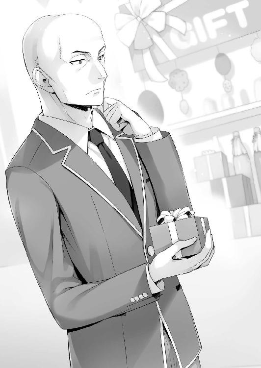
どうやらそんな下らないことでメラメラと嫉妬心を露わにしたようだ。
「別にそうとも限らないんじゃないのか？ 単純に友達へのプレゼントとか」
「こんな可愛らしいラッピングしたプレゼントを友達用に渡すか!? 渡すか!? 渡さない！」
「......まぁ」
確かに可愛らしい小さな箱、包装のリボンは友達に渡すものとしては考えにくいな......。
少なくとも同性に向けたものだとは思えなかった。となると親しい女の子への贈り物か。
そう考えていくと、連想して恋人の存在を疑ってしまうのも無理ないかも知れないが。
池たちは会計を続ける葛城に再び視線を向け、商品棚の影から情報収集を行う。
「誕生日の贈り物ですか？」
「はい」
「誕生日カードはお付けになりますか？」
「お願いします。誕生日は８月29日になります」
そう答える。一体誰にプレゼントするのだろうか。ともかくあの商品は誕生日プレゼントということらしい。それを聞き届けた池たちがひそひそ耳打ちをしあう。
「聞いたか？ 29日が誕生日の女って誰だ？」
「わ、わかんね......今日が21日の日曜だから......再来週の月曜か。綾小路知ってるか？」
「さぁ。皆目見当もつかないな」
女子事情に詳しい二人が知らないのにオレに思い当たることがあろうはずもない。
２
「なあ......都度都度言ってるからもう諦めてはいるんだけどな。なんでオレの部屋なんだ」
夜、各自晩御飯を食べたあと何故かオレの部屋に集まったいつものメンバー。
池と山内はお約束として同席、そこに櫛田と部活を終えた須藤とを交える。
ここに堀北が揃えばパーフェクトだったな。
「桔梗ちゃんって他の子の誕生日とか把握してたりする？」
「うん。聞いた子のは全部メモしてるから大体わかるよ。誰のが知りたいの？」
「それがさ、もしかしたらＤクラスじゃないかも知れないんだけど」
「えっと、上級生になると正直ほとんどわからないんだけど１年生だったらわかるかも？」
この辺りは流石、処世術をマスターする櫛田だ。忘れたりしないようしっかり記録しているらしい。
「じゃあさ、一つ教えてほしいんだけど今月29日が誕生日の女の子って誰がいる？」
「29日が誕生日の子？ ちょっと待ってね」
携帯を取り出した櫛田は、誕生日リストと思われるものを取り出す。
それからしばらく画面をスライドさせたりしながら調べていたが、やがて顔をあげる。
「ごめん、私が知ってる中じゃ誰もいないみたい」
「多分Ａクラスの子だと思うんだけどさ」
「Ａクラス？ うーん、もう全員の誕生日は聞いてるんだけどなぁ」
それでも明後日が誕生日の女子は思い当たらないらしい。
「１年生の女子なら全員知ってるつもりなんだけど思い当たらないなぁ」
圧倒的な櫛田の情報網に引っかからないということは渡す相手は学年が違うのかもしれない。そうなると流石の櫛田もわからないようで、望む答えは得られなかった。
「ってことは上級生の可能性が高いってことかぁ」
お手上げだと池が万歳して後ろに倒れ込んだ。
「その29日の誕生日の人がどうかしたの？」
櫛田の素朴な疑問に池はここぞとばかりに含みを持たせて言った。
「それが聞いてくれよ～。Ａクラスに葛城ってハゲがいるのは知ってるよねー？」
「うん。葛城くんはクラスの皆をまとめてるっていうし有名だから。私はこの間の試験で同じグループだったしね」
「そのハゲがさ、29日に誰かに誕生日プレゼント渡すつもりなんだよ。ハゲのくせにさ」
何度もハゲのキーワードを繰り返す。櫛田はちょっと注意するように───。
「葛城くんは小さい時から全頭無毛症って病気なの。からかっちゃだめだよ」
「う......」
櫛田に真っ向から正論を言われ、お調子者の池は後ずさりするように黙り込んだ。確かに若くして髪の毛がないのは、オシャレの要素を除けばほぼ病気ということになる。
病気の人間をからかう行為は恥ずべきことであり、それは池自身百も承知のはず。ただそれが笑いに繫がるからと安直に多用してしまい逆に好感度を下げてしまっていた。
「ね？ これからはちゃんと名前で呼んであげよう？」
「も、もちろん。ごめんね桔梗ちゃん不快な思いをさせちゃって」
「ううん、分かってくれたらいいんだよ。これから直してくれるなら嬉しいな」
その話をいったん区切ると、やはりもう一つ言いたいことがあったのか櫛田は間を空けすぎないようにして話し出した。
「それから今日の篠原さんのことだけど───」
「う......」
池としては忘れていたかった話だが、櫛田からの話。止めることも出来ない。
「私が言わなくても分かる、よね？」
あえて内容には触れず、ただそう優しく言った。
「......謝っとく」
「うんっ。そしたら篠原さんも許してくれると思うよ」
不服そうにしながらも、池は櫛田の手前か素直に答えたようだった。ケケケと笑う山内を池は無言で睨みつけた。ともあれ櫛田のおかげで、池は今日少し成長できたかも知れないな。
「それで葛城くんが誕生日プレゼントを誰かにあげる話だったよね」
「そうそう。桔梗ちゃんなら思い当たる節とかないかなぁ？」
櫛田は自分のネットワークを使い頭の中で検索をかけているようだったが、引っかからないのか暫くして首を左右に振った。
「なんだろ、葛城くんにそんな浮わついたイメージがある感じはしないかなぁ」
少なくともまだ、と付け加えた。
「上級生なら可能性はあるよな？」
「そうだね、私が知らないだけってことは十分にあると思うよ」
入学して僅かの間に上級生と付き合う、あるいは誕生日プレゼントを渡す仲になったのだとしたらスゴイことだな。素直にＡクラスのリーダーを尊敬したい。
だが、この段階で上級生に絞り込んでも大丈夫なものだろうか。もっと別の観点から見る必要もありそうだが、場の空気は既に彼女探しをするつもりでいっぱいだった。
「こうなったら意地でも葛城の彼女を突き止めてやろうぜ！」
盛り上がっているところ悪いが、ここは別の可能性があることも指摘しておくべきだろう。
「簡単に上級生の女子だと決め付けていいのか？」
「桔梗ちゃんが29日が誕生日の子がいないって言ったんだからそれ以外にないだろ。それともあれか？ もしかのもしかで堀北さんとか？」
根拠のない池の発言ではあったが、可能性としては除外しきれないな。
「まぁそれならあり得る話か......」
「は、おまえらふざけんなよ？」
黙って話を聞いていた須藤が、池の胸ぐらを摑みあげながらオレを睨んできた。
「ぐえ！ も、もしかしての話、だって！」
「おい綾小路、鈴音の誕生日はいつなんだよ」
「知らない」
「んだよ使えねーな」
そう言われても、堀北の誕生日がいつなんて知るはずがない。
「普通に考えたらこの学校の誰も堀北の誕生日は知らないと思うぞ」
唯一知っているのは、生徒会長でもあり兄でもある堀北学だけだろう。
「そうか。それもそうだな、俺や綾小路が知らねーのに、あいつが知ってるわけねーか」
「私知ってるよ。堀北さんの誕生日は２月15日だから今回の件には全く関係ないと思うな」
「......さすがだな櫛田」
思わず関心するようにオレは口にした。よもや堀北の誕生日まで知っているとは。流石の櫛田も堀北や伊吹のような曲者の個人情報は把握していないと思っていた。特に堀北については。オレと当事者同士以外は知らない話だが、櫛田は堀北を嫌っているし堀北も櫛田を嫌っている。とても誕生日を教えあうような間柄とは思えなかったからだ。第三者から聞くにしても堀北は普通人に話したりしない。だからこそ感心してしまう。
「２月15日か。イイこと聞いたぜ」
須藤はニヤリと笑う。その須藤の腕を首を絞められ顔が青ざめていた池がタップする。
「おー悪ぃ忘れてたぜ」
「ぜぇぜぇ、健はバカ力なんだから気をつけろよ！」
「おまえが紛らわしいこと言うからだろ」
「だったら綾小路にもしろよな!! なんで俺だけにすんだよ!!」
「一番距離が近いからな」
「単細胞！」
「あぁ？」
胸ぐらを再度摑もうと手を伸ばす須藤から慌てて距離を取った池。人の部屋でドタバタと暴れまわるのはやめてほしい。多分近いうち苦情が入るぞ。
「話が逸れたけどオレが言いたいのは少し違う。他にも候補になりうる存在はいるってことだ。教師にケヤキモールの店員ってこともあり得る。今日見たショップの人も美人だっただろ？」
「な、なるほど。言われてみればそんなこともあるのか」
もちろんそんな年上が高校１年生を相手にするかどうかは別だし、条例やモラル上、大きな問題になりかねないからカップルが成立するイメージはほぼ無い。葛城だってその辺は理解しているだろう。しかし可能性として除外するには早すぎるということだ。
ともかく今気を付けなければならないことは、勝手に上級生だと決め付けること。
要は相手を絞り込むことは難しい、放っておいてやるのが一番だと分かってもらいたい。
「こっちで勝手に盛り上がって葛城の相手を見つけ出すのはやめたらどうだ？」
「おまえはいいのかよ！ あのハゲに年上で包容力のある胸の大きな彼女がいても！」
仮にそんな理想的彼女がいたとしても、呪い殺すような感情は湧いてこない。
「Ａクラスなら年上にモテても不思議じゃないしな」
片やこっちはＤクラス。多少顔がよかったり性格がよかったりするくらいじゃモテない。
......そうでもないか。
平田なんかは同級生のみならず上級生にも人気がありそうだ。それに以前高円寺を見た時も上級生からは一定の支持を得ていたな。
結局のところオレや池たちには共通する非モテの何かがあるってことだろう。
「俺はあいつに先を越されるのだけは絶対に嫌だ！」
「だからってどうにもできないだろ」
「そんなことねーって。負けそうな相手だからってこっちに勝機がないわけじゃねえ」
須藤はパンと半ズボンから覗かせた鍛えられた太ももを叩いた。
「バスケは勝利のためなら反則ギリギリのプレイだってする。いや、勝つためだったら必要に応じて反則だってするかもな。それだけ勝利への執念は強いし大事なものだ。プレゼントを渡すことで女と距離を詰める可能性があんなら、それを阻止しちまえばいいんだよ」
何とも強引だ。しかしこれが勝負事だったなら須藤の考えは完璧な回答だ。オレもそうする。ただ今回はまっとうな理由じゃなく個人的な嫉妬から来るもの。褒められた行動じゃないな。
にしてもいつもの須藤とは違い、強い気合が入っているように見えた。
「そういや、もうすぐ大会だっけ」
山内もそれに気づいたのか、須藤を見て言った。
「おう。木曜からな。出番があるかはわかんねーけどいつでも出られる準備は万端だぜ」
パン、と指を広げた左手に、右拳を叩きつけて万全な状態をアピールする。
「よっしゃ、それだ！ 妨害するぜ！」
無茶な須藤の考えにも池はノリで決行することを決める。
「櫛田、なんとか言ってやってくれ」
「妨害するのはダメだよ寛治くん」
「ええ、そんな......桔梗ちゃんだって葛城の相手が誰か気になるだろー？」
「私だって渡す相手は気になるけど、妨害はダメだよ」
せっかく妨害することで盛り上がっていたところに水を差されたため、不満そうだ。
「ってことだ」
櫛田に便乗して妨害工作に及ぼうとするのを止めたことが不服だったのか、それとも篠原との一件を引きずっているのか池はオレにこんなことを言った。
「なら綾小路。おまえが正体を突き止めろよ、葛城のプレゼントを渡す相手が誰なのか」
「無理だ」
「無理でもやるんだよ。どうせ暇だろ？」
その点だけは否定できないが......。そんなに気になるなら自分で調べてもらいたい。
「突き止めるもなにも、同じクラスでもなければ友達でもないからな」
連絡先も部屋番号も、下の名前すら知らない相手のことを調べるのは骨が折れる。
「葛城くんの連絡先なら私わかるよ？ 教えようか？」
「............」
そうだ......今傍にいるのは堀北の誕生日すら把握する、学年一交友関係の広い美少女だった。葛城の連絡先を知っていてもおかしくはない。
「どうやって連絡先を知ったんだ？」
「この間の特別試験でグループが一緒だったとき。それで教えてもらったの」
なるほど。ああいう場でもきっちり連絡先を交換できるのは凄いことだな。
「じゃあ教えるね？」
「いや、いい。オレが突然連絡したら葛城だってびっくりするだろ」
見知らぬ番号からの着信じゃ無視されることだってあり得る。
「おまえが妨害を阻止したんだから責任とれよ」
「責任を取れって言われてもな......」
「俺も気になるから調べてくれよ」
須藤が偉そうに強気に命令してくる。
「自分で調べようとは思わないのか？」
「あ？ こっちは木曜の大会まで暇なんかねーっつの。あと数日しか練習できねえんだぜ？」
部活動を大義名分として振りかざしてくる。こちらが答えずに黙っていると、睨みつけてきた。
「力ずくできかせてやろうか？」
須藤が腕をぐるんぐるん振り回す。場合によってはこっちにヘッドロックを決めるつもりか。このグループの中でも発言力が一番低いオレがやり玉にあがれば逃れる術はない。
「......わかった。明日ちょっと張り込んでみる。ただ過度な期待はしないでくれよ、どうなるかわからないんだから」
ひとまずこの場はこれで凌がせてもらおう。
あとは後日適当に調べて無理だったと報告すればそれで終わりだ。
３
「暑い......死ぬほど暑い......」
翌日のオレは、葛城が出かけるタイミングを窺うために並木道の中にいた。ここは各学年の寮へ続く道の分岐点でもあるため上級生に接触するなら避けて通れない道だ。
更にショップなどが並ぶケヤキモールへの道、学校への道なども先にはあるため、葛城がどこに行こうと見逃さない。本当ならロビーで涼し気に待った方がいいのだが、残念なことにほとんど面識のない他クラスの女子たちのお茶会場として制圧されてしまっていた。入りたい店があるのに空いてる席が殆どなくて入店を躊躇してしまうような、そんな感じ。わずかに開いたあのスペースに腰を下ろしてゆったりくつろげるほどオレの心は成熟していなかった。
時折私服姿の男子生徒や女子生徒たちが遊びに出掛けるためか和気藹々と通り過ぎていく。もちろん生徒たちは全員私服だ。それを見る度に昨日の葛城の制服姿を思い出し疑問を抱く。夏休みに制服を着ては行けないルールは無い。だが制服は熱が籠りやすく非常に暑い。オシャレが面倒だからと言ってそれを着て出かけるには説得力に欠けるのだ。しかし制服も夏服だったならまだ少しは理解できる余地もある。葛城は夏服でもなく長袖をしっかりと着こなしていた。最近気づいたことだが制服にはいくつかのバリエーションがある。常にポイント不足のオレには無縁状態だが、高額な商品として夏服が売られていることを最近知った。クラス内の女子たちはいつか欲しいと願いつつも、我慢している状況が続いているらしい。外へは私服で出かけるのがセオリーの中、あえて制服を着る理由......。
そんなことを考えていると、不思議なもので同じような人種を吸い寄せる。昨日の葛城といい、どうにも制服を好む連中も少なからずいるらしい。
上級生が住む寮から男女二人が歩いてくる。オレを見つけると進路を変え近づいて来た。
「久しぶりだな」
「糞暑い中制服を着てるのは誰かと思ったら、堀北の兄貴か......」
葛城とは違い二人とも夏服ではあったが、休日の制服姿に違和感を覚える。
「うわ会長、この子『面倒な人に会った！』って顔してますよ」
分かりやすくそんな顔をしてみせただけだが、堀北兄の隣にいる女子生徒、３年生の橘書記が大げさに言った。それにしても女の子の制服はどうしてだろう、男の学生服と違って暑苦しい感じが全くしない。これくらい清涼感があれば文句はないのだが。
「夏休みだってのに生徒会ってところは随分と忙しそうだな」
橘書記に至ってはノートのようなものを抱えている。
一瞬もう２学期って始まったか？ と勘違いしそうだ。
「夏休みを利用して生徒会室の改装工事をしているのでその関係です」
生徒会長に煩わせるまでもないと橘書記が説明する。
「そうか、じゃあな」
「うわっ聞いて来たわりに随分と淡白な反応。というか君、もう少し発言には気を付けた方がいいですね。この方をどなたと心得てます？ 恐れ多くもこの学校の生徒会長ですよ！」
それは知っている。そして多分とんでもない権力の持ち主だってこともな。
最初は敬う気持ちというか敬語であるべきだと思っていたが、なんとなくやめた。堀北の兄貴も敬語を望んでいる節はなさそうだし遠慮しないことにしたのだ。にしても橘書記ってのは思っていた印象と結構違った。もっと真面目な人だと思っていたが、かなり緩い感じの人だった。
「学校らしくペナルティでも科すか？ 生憎とポイントは枯渇してるけどな」
橘書記の言葉に肩を竦ませそう答える。堀北の兄貴もこんな奴は相手にしないだろうと思ったのに、立ち去るどころか目を細め無茶なことを言った。
「綾小路、これから予定がなければ少し付き合ってもらいたいんだがな」
「か、会長？」
オレを誘う生徒会長に橘書記が驚く。オレも驚く。だが──
「予定はもうびっしりだな。悪い」
「ええっ!? 断るぅ!?」
そしてその生徒会長の提案を断るオレに度肝を抜かれる橘書記。
「ならいつ時間が取れる。そっちに合わせても構わない。学校が始まってからでも構わん」
どうやら、堀北の兄は折れる様子を見せないようだ。
問題を先延ばしにすると大体の場合ろくなことにはならないからな。それに後日改めてとなるとたっぷり時間を取られる可能性もある。それなら今の方が好都合だ。
「じゃあ今からにしてくれ。次の予定まで少し時間があるから」
「予定びっしりって言ったのに？」
そんな橘書記のツッコミは全部スルーさせてもらう。
「今からどこへ向かうつもりだった？ そっちの予定にあわせても構わない」
「あー......人待ちだ。出来ればここから動きたくはないんだけどな」
「でもここは暑いですよ？ 待ち合わせには不向きです」
「それは重々承知だ」
暑くでも罰ゲームのようなことを律儀にやるオレは偉い。自画自賛だ。
「たまには立ち話も悪くない。おまえは辛いようなら先に寮に戻っておいても構わない」
「いえっ、この子と会長を二人きりにしたくないと私のアンテナが言ってますので！」
そう生徒会長に敬礼して、橘書記はまるでボディーガードのように張り付く。
「生徒会に結果の報告が上がってきていた。無人島、そして船上での試験は大変だったか？」
「生徒会ってのは随分と権力があるんだな。結果を教えてもらえるなんて」
「結果と言っても詳細まで知らされるわけじゃない。個人的な活躍度合いなどは不明だ」
「それはよかった」
「よかったですねー。落第ぶりが生徒会長にバレなくて」
都度都度橘書記から毒を吐かれる。いつの間にか敵視されてしまったらしい。生徒会長相手にタメ口してれば無理もないか。
「しかし情報とは常に洩れるもの。おまえが無人島で他クラスを出し抜いたこと、客船で配属された兎グループでＤクラスの優待者が逃げ切ったことは把握している」
不明だとか言いながら、バリバリ漏洩してるようだ。癒着を疑うなこれは。
「それと堀北鈴音の名前が無人島試験終了後に上がって来た。クラスの中心となり他クラスを出し抜いたと。だが俺はその一件、本当にかかわっていたのはおまえだと考えている」
兄貴には絶対なる確信があったらしい。冷静にそう呟いた。
「完全に買いかぶりなんだが？」
「リーダーの名前が最終的におまえに変わっていたようだが。それはどう説明する」
「......そんなところまで把握してるのか」
「このことを知っているのは俺と特別試験委員のみ。そして今ここで橘書記が耳にしただけ。クラスの教師も知らない情報だ、安心しろ」
それは全く安心できることじゃないんだが。この男はどれだけ権力を持ってるんだ。普通学校の生徒会なんて権力のないおかざりなものだろう。それが教師を上回るって何事だ。
「なんなんだ生徒会ってのは」
「生徒会そのものには何の力もない。その座に就く人間の能力次第だ」
「そりゃまた流石な発言だな。前にも聞いたんだが、あんたは本当にＡクラスなんだよな？」
再度確認するまでもないことだと思っていたが、この際なのでもう一度聞いてみる。
「当たり前じゃないですか！ 当然の話です!!」
「だが少し腑に落ちないな。堀北とオレにどれだけの違いがある？ むしろデータだけを見てればアイツの方が遥かに優秀だ。Ｄのオレを気に掛ける理由がわからないな」
「おまえはひとつ勘違いをしている。俺はＤクラスの人間が愚かだとは思っていない。この学校はただ能力の秀でたものを順にＡクラスから振り分けているわけではないからな」
「あの会長......余計なことだとは思いますが、お話しし過ぎでは？」
「問題ない。この男なら当然それを理解している」
どこまでオレに対して買いかぶりを続けるつもりなのか。
妙な初対面をしてから、この生徒会長様はやけにオレにご執心のようだ。
「だったら堀北を否定した理由は？ まさにＤクラスだったからだろ？」
「環境がどうあれ、妹である以上能力はすべて把握している。あいつはＤクラスになるべくしてなった落ちこぼれだ。それ以上でもそれ以下でもない」
とことん妹に対しては厳しい目線でものをいう男だな。
「全部堀北の案だ。あんたの妹はオレくらいしか友達がいなくてな、必要な役を頼まれた」
「違うな。あいつに思いつくアイデアじゃない」
兄妹として長年一緒だったからか、本人の思考は完璧に把握しているらしい。にしても、やっと合点がいった。この男がオレに目を付けている理由の一つは、茶柱先生と同じなんじゃないだろうか。
オレが入試で見せた全テスト50点という遊びに本質を見抜いたとしたら。履歴書や内申書との差異に気が付いてもおかしくはない。
「ストーカーみたいに個人情報を漁るのはやめてくれ。大人しい学校生活を送りたいんだ」
そう訴えたが、生徒会長は一度メガネを触った後また突拍子もないことを口にした。
「以前にも一度だけ声をかけたが、生徒会に入らないか」
ギョッと目を見開いた橘書記が慌てる。余程驚きの発言だったらしい。
「随分と悠長な生徒会だな。席はまだ埋まってなかったのか？」
「か、会長？ 生徒会は先日１年の女の子を一人取ったじゃないですか。それで終わりでは？ ２年生からも新しく受け入れて席は全部埋まりましたよっ」
だそうだが？ と目で伝えるとこの男はとんでもないことを言い出した。
「ひとつだけ空白の席があるだろう」
「ひとつって......ま、まさか!?」
「綾小路。お前が望むなら俺の権限で副会長に就ける」
「ちょ、ちょちょ!?」
ずざっと橘書記が元気に後ずさりする。見ていて面白い人ではあるな。
「前代未聞ですよ！ １年の、それもＤクラスで、こんな失礼な男の子がいきなり副会長なんて！」
「何度も言ってるが断る」
「しかもそれを問答無用で断ってるし!!」
にしても、変だな。冗談で言っているとは思えないが、オレに対する評価と扱いが尋常じゃない。確かに堀北兄はある程度情報を持っている。池や山内（には悪いが）と比較すればオレを選ぶ理由もわからなくはないが、葛城や一之瀬を始め、平田、能力値だけで言えば高円寺など高いポテンシャルを持った生徒は数多く存在している。無理にオレを選出する理由には全くならないはず。
オレでなければならない何かがある、ということだろうか。
「生徒会長の俺が言うことではないかも知れないが、来年からこの学校は大きく変わるだろう。それも望まない方向に。その時に規律を守るため今の段階から対抗できる勢力を作っておかなければならない。既に遅すぎるくらいだがな。日増しにその必要性の強さを感じている」
「会長、それって南雲くんが生徒会長になった場合のお話ですよね......？ 私には彼が悪い学校作りをするようには思えませんが......」
南雲という名前は１年の中で聞いたことがない。来年から変わると言うことは２年生だろうか。
「通常生徒会には、副会長を二人まで置くことが出来る。例年は一人でやってきているが、ねじ込もうと思えば無理な話ではないだろう」
「い、いやいやいや、会長。それは無理ですよ......。南雲くんが許可するわけないです」
「副会長だが南雲だか知らないけど、オレはやらない。どんな好待遇でもな。あんたは卒業してこの学校を出る、それだけだろ。残された生徒の心配なんてする必要はない。それとも───」
あえて間を作ることで、次の一言に重みをもたせる。
「妹が心配だから手を貸してくれ、と言うなら相談に乗る余地はあるかも知れないな」
「......そうか」
その一言を出されては、この男も深く頼み込んでくることは出来ないだろう。事実完全に諦めきったようで、これ以上生徒会について触れてくることはなかった。
「時間を取らせて悪かったな。こちらの用件はそれだけだ。だがいつでも生徒会を訪ねてくればいい、お茶くらいは出そう」
この学校で確固たる地位を築くあの男にも、不安材料って奴はあるんだな。
そんな意外なことを感じながら、オレは帰る───帰れないんだった。帰るにはちょうどいいタイミングだったのに。葛城を待たなければならないとは。
４
事態が好転したのは、堀北兄との話から30分ほど経過した時だった。昨日と全く同じ格好で葛城がゆっくりとこちらに向かって歩いてくる。少し道を外れたところから様子を伺っていると、手には昨日購入したと思われるショップの袋があった。
「どういうことだ......？」
29日まではまだ少し時間がある。普通なら部屋に保管しておくのが定石だ。だがそれを持ち歩いているということは、すぐに渡す予定でもあるのだろうか？ それに制服姿なのも気がかりだ。正装としては通じるだろうが、この暑い中あの格好でプレゼントを渡す絵は正直あまり見たくない。
息を潜め葛城がどこへ向かうのかを確かめる。するとすぐにやって来た分岐点。葛城は上級生の寮に続く道へは進まなかった。まさか、と想定していなかった道の方へ向かう。
その道の先にあるのは夏休み真っ只中の学校。気づかれないように後をつける。
「制服なのはそういうことか───」
好き好んで着ていたわけじゃなく学校内に入るためだったのだ。合点がいく。
葛城はすっと正面玄関から中へと入って行く。
だがこうなると葛城の後を追いかけることはできない。
私服での立ち入りが禁止されている以上オレが立ち入ることは出来ないからだ。
『葛城には会えたか!?』
携帯が震えると、画面に自室から送っていると思われる吞気なチャットが映し出された。
あえて既読にせず携帯をしまうと、オレは攻める方向を変え、昨日プレゼントを選んだケヤキモールにあるショップへと向かった。それから適当に女の子が好きそうなショップへと入る。他の店にはどんなプレゼントが売ってあるのか気になったからだ。ただ、他所の店と比べても違いはそんなにわからない。結局昨日葛城が誕生日プレゼントを買ったショップへ出戻る。チョコレートの入った小さな薄い箱が積み上げた場所前にやってきた。上級生だけじゃなく男に渡す可能性も視野に入れていたが、改めて見る限り可能性は高くなさそうだ。ハートマークなど女の子用の装飾が施されている。
「きゃはは、だよねー」
騒がしくなり始めていた店内で、女子生徒がオレの背後を通り過ぎる。
その時、ドンと背中に軽い衝撃を受けた。
「おっと」
オレの肘が積み上げられていた商品に軽く触れてしまい、ばらばらと山積みのチョコレートが雪崩のように崩れ落ちた。話に夢中の女子はこちらの惨劇に気付いた様子もなく話しながら立ち去って行った。
「ったく......」
影が薄めなのは自覚してるが、少しは気を付けてもらいたいもんだ。
「何をしているんだ」
「げ......」
積み上げていた商品を必死に戻していると後ろから大男に声をかけられた。学校に行ったはずの葛城だった。不思議そうにオレを見下ろしている。
「誕生日プレゼントを......買いに来たんだ」
突然の遭遇にそう答えるしかなかった。葛城は散らばったプレゼントの箱に目をやると、大きな体を折り曲げ拾い上げた。
「あ、いや。こっちで拾うから」
「気にするな。他の客が見たら不快に思うだろう。早く片づけた方がいい。一人より二人だ」
そう言って嫌がる様子もなく手伝いを申し出てくれた。他の店に足を運んでいたと言っても都合30分ほど。その間に学校での用事を済ませたのだろうか。しかし葛城の手にはこの店の商品袋が握られている。こっそり中を覗き込むと、プレゼント用に梱包された薄い箱が視界に入った。まだ渡してはいないようだ。
「これでいいだろう」
二人で取りかかるとあっという間に片付いた。幸い店員や客に見られることもなかった。
「助かった」
基本的に葛城は良い奴ではあると思う。無人島の試験中も、オレたちが発見したトウモロコシを見張ってくれたりと、葛城は妙に善意を見せることがあった。もちろんクラスの対決となれば容赦しないだろうが、人格はけして悪いものではなさそうだ。
「彼女への贈り物か？」
「え？ いや、彼女ってわけじゃない。クラスメイトだ。買うのはまた今度にする」
本当に買う目的があるわけではないので、そう言ってコーナーから距離を取った。葛城もそれに合わせるようについてきたので、少し雑談を織り交ぜて情報を引き出してみることにした。
「そっちも誕生日プレゼントか？」
「ん？ どうしてそう思った」
「手にこの店の袋を持ってるし、同じコーナーにいたからな」
「なるほど。確かにそうだな、特に考えることでもなかったか」
納得したのか、頷いて葛城はオレの目を見てきた。
「目当てのものがなくて困ってたところなんだ。あんたは何を買ったんだ？」
「大したものじゃない。おまえがちょうど倒したチョコレートだ。この店の品揃えは悪くないと思うが好みは人それぞれだからな。他の店も見て回るといい」
誰、とは答えず、誰、とも聞けないまま二人で店を後にする。
「なんで制服なんだ」
昨日のことは当然触れないが、ここ２日連続葛城は制服を着て行動している。
それを聞くのは自然なことだろう。
「校内に入るには制服である必要があるからな。それで仕方なくだ」
「ということは学校に？」
もちろんその姿を見ている為、学校に立ち寄ったことは知っている。
あとは誰に渡しに行ったのか、だが。葛城の手にはまだ荷物が握られている。
情報を得られればと思ったが、残念なことにそうではないようだった。
「ああ。色々と私用があってな」
深くは語らなかったが、葛城は思うことがあったのか一度学校の方角を見た。
「お前は考えたことがあるか？ この学校に在校するデメリットについて」
「デメリット？」
「そうだ。それもクラス別ではなく、在校生に等しく降りかかるもの」
謎かけのような問いかけにオレは少しだけ頭を悩ませた。これがクラス別であれば当然ケースバイケースで困ることは出て来る。一時のＤクラスのようにポイント不足に悩まされることもあるだろうが、Ａクラスがそんな事態になることは考えにくい。
在校生に等しく、という文言からもそれは否定できる。とすれば一体なんだろうか。
真剣に答えを模索するものの、思い当たる節がなかった。
「わからないか。もちろん人それぞれではあるが『外部と連絡をとれない』ことだ」
「あぁ、なるほどな」
自分にとってはデメリットではなくメリットだったため思いもしなかったが、確かに普通に考えればそれはデメリットかも知れない。
「おまえは両親や兄弟に連絡を取りたいとは思わないか？」
「どうかな。ただオレはともかく、結構な生徒は同じようなことを言ってる気がするな」
特に女子は寂しいと口にする子も多い。けど、この学校は情報漏洩に対して厳しく一切の連絡を許可していない。不用意に破れば注意だけでは済まない。
「でも受けてる恩恵は大きいし不満を漏らすほどでもないんじゃ？」
「確かにな。ポイント制度も施設の充実さも普通の学生では享受できないメリットだ」
更に付け加えればＡクラスで卒業するメリットも得られる。
って、なんでオレ自然と葛城と会話しているんだろうか。しかも何でもない夏休みに。
「おまえは堀北と仲の良い生徒だったな」
「そんなデマが広がってるのか」
「デマ？ 俺と出会った時も一緒に行動していたと記憶しているが？」
「よくある腐れ縁というか、隣の席になった流れから話すようになったって奴だな」
学校の話で言えばけして珍しいことでもない、と思う。葛城もイメージはしやすかったのか頷く。
「そういうことか。他クラスのことは意外と知っている様で知らないことが多いからな。気を悪くしたのなら許してくれ。特に他意はないんだ」
「最近よく聞かれるから大丈夫だ。堀北が結構な活躍をしているらしいしな」
「そうだな」
短く同意したがそれ以上言葉を続けようとはしなかった。
「実を言うとこの店は３軒目だった。一度悩みだすと考え込んでしまう性格でな。たかがプレゼントひとつと言っても受け取る相手の気持ちを考えれば即決することもできん」
悩んで渡す相手とは、いったい誰なのだろうか。少しだけ探りを入れてみるか。
「こう言っちゃなんだが律儀なんだな。誕生日のプレゼントを誰かに買ってやるなんて」
「生誕を祝うことが変に感じるのか？」
少なくとも巨漢のスキンヘッドであれば違和感は生じる。もちろんそれは完全な偏見で、雨の中高架下で猫を助ける不良も世の中にはいるわけだが。
「ぶっちゃけ、誰に渡すつもりなんだ」
オレは本丸に斬り込んだ。回りくどい聞き方をしていても埒が明かない。
「誰に、か」
その問いは本人に取っても複雑な部分があるのか、戸惑いを見せる。
「個人的なことだ。おまえに聞かせることじゃない」
仕方ないことだとは思うがはぐらかされてしまった。そう答えられれば、こちらとしても追及できるような立場にはない。唯一無二の親友ならともかくな。
「これで失礼する」
葛城は一言残し寮へと一足先に帰って行った。制服を着ていた謎は解けたが更なる謎が生まれる。
何故学校に行ったのか。何故再び店に現れたのか。それがハッキリと見えてこなかった。
５
「おい池、葛城の件調べたぞ」
「マジか。やるじゃん綾小路！ 見直したぜ！」
そう言って肩を叩きオレを褒める池。
見直されなければならないようなことをしていただろうか。池の中でかなり低かったと思われるオレの評価にやや疑問を感じながらも状況を報告する。
「残念だが、どこの誰かまでは確定させられなかった」
そうじゃない。正確には当てはまるような女子の姿を見つけることが出来なかったのだ。どれだけ調べても見えてこない存在。葛城が渡そうとしている相手が出てこないのだ。
同じ学年には同じ誕生日の存在はいない。だが、他学年にも思い当たる生徒はいない。
こうなると、考えらえる存在は全く別のところにいるんじゃないだろうか。
山内は、ハッとしたように顔をあげる。
「やべぇ俺......分かったんだけど。葛城が誰に向けてプレゼントを用意したのか」
喜ぶ、楽しむと言うより哀愁漂う表情を見せた山内が、悟ったように語りだす。
「なあ寛治。中学のときさ、バレンタインって地獄だったと思わないか？」
「な、なんだよ急に。そりゃ、まぁ、辛かったけどさ。それがなんなんだよ」
「要はその延長上っていうか......あいつ、自分の為に買ったんじゃないかって思ったんだ」
「まさか──い、いや、あり得る、のか。あのハゲがモテるようには思えないもんな......」
二人は何やら理解しがたい話で納得しあっている様子だった。
しかしオレには全く想像もしなかった展開なので疑問が頭に浮かぶ。
「自分の誕生日に自分でプレゼントを買ったってことか？」
「それ以外に何があるって言うんだよ綾小路」
怒るように睨みつけてくる。
それ以外も何も、普通自分に誕生日プレゼントを用意するだろうか。
もちろん、自分へのご褒美的なイメージはある程度持てる。美味しいものを食べたり、欲しかったものを買ったり。だが今回はその例には当てはまらないのではないだろうか。わざわざ女の子が喜ぶような梱包をしたり、ラッピングをしていたし、中身もチョコレートだ。
無類の甘党であればもっと別の形で買った方がよいものを買えるだろう。
「おまえマジでわからないのかよ」
「......残念ながら」
「葛城は誰がどうみたって女子にモテる顔じゃないだろ？ でも、仮にもＡクラスのリーダーだ」
その辺についてはコメントを差し控えたい。
「つまりプライドが高い。自分はモテていると周囲に思わせたいはずだ。つまり、自演」
「自分で自分に買ったっていうより、誰かに貰ったと見せかけるために買ったってことだよ」
出た結論には間違いがないと感じたのか、池と山内はうんうんと頷きあった。
「俺もやったぜ、中学のときにさ。学校で一番かわいかった子に貰ったようにみせかけたり」
「こんなことを聞くのも何なんだが、虚しくないのか？」
「虚しいに決まってるだろ？ でも貰えない絶望よりは救いがあるんだよ！」
怒られる。それほどバレンタインや誕生日は池にとって大きなイベントらしい。
「つか春樹、おまえも俺と同類だったんだな」
「は？ いや、俺は違うし。俺は女の子にモテモテだったぜ？」
「噓つけよ。じゃあなんでそんな結論に至ったんだよ。自分と同じだと思ったからだろ？」
「そうじゃないっつの。中学校にも寛治みたいな非モテがいたからな。知ってるだけだ」
明らかに虚勢に見えたが、真実を確かめる術もつもりもない。
「けど憶測だろ？ それは」
「いいや間違いない！ 絶対にそれしかないっての！」
もはや辿り着いた答えを疑う余地もないのか、二人はこれ以上議論するつもりはないようだった。
「なぁ春樹。俺たちハゲ......葛城のことを勘違いしていたんじゃないか？」
「だな。Ａクラスだからって勝手に敵視してたけど、急に身近に感じたっていうか」
「てことは、やっぱおまえも自分でプレゼント用意してた非モテだったんだな」
「違うし。あくまで俺の同級生を思い出して憐れんだだけだ」
池のツッコミにも頑なに否定する山内。
「ちょっと協力してやるか」
突如として、そんなことを言い出す。
「協力ってなんだよ」
「あいつに誕生日プレゼントを用意してやるんだよ」
葛城への敵視を向けていた状態から一転、池は葛城への同情心を抱いたらしい。
「そりゃ女の子に祝ってもらうのが一番なのはわかる。でもそれは無理だ。だとすればせめて別の誰かから誕生日プレゼントをやるのが心の救いなんじゃないか？」
その理論はどこかおかしな気もしたが、全てが間違っていると否定もしづらかった。
自分で自分を誤魔化すために買うよりは、別の誰かから誕生日を祝ってもらいたいだろう。
ただ気を付けるべきは、同情心とは意外と厄介で面倒なものであることだ。
もし本当に葛城が自分の為にプレゼントを用意したのであれば、それを知った池たちに祝ってもらうことを良しとするだろうか。むしろ同情するなと怒らせてしまう可能性の方が高い。池たちは何を買ってやろうかと相談を始めるが、オレは改めてその結論に対して疑問を感じた。
確かに明日誕生日である女子はいない。だが、全ての可能性を排除しきったわけでもないのだ。学校の教師や関係者、この敷地内に数多くいる従業員たち。女性に枠を広げればまだまだ候補者は多いのだ。
それに、自分に買うようなプレゼントであればあんなふうに堂々と購入するだろうか。それも葛城の格好は夏休み中では珍しい制服姿だった。目立って仕方がないだろう。
誰かに見られれば怪しまれるのは容易に想像できるし、普通なら制服で行動しない。
「綾小路、おまえも少しポイント出せよな。３人で１５００くらいあれば何かよさげなもの買ってやれるだろ」
そんなやり取りを昨日も聞かされたな......。
つまり支出も倍。１０００ポイントの出費は少なくない。
「ってことで綾小路。ちょっと早いけど明日は俺たちで葛城を祝ってやろうぜ」
もうすっかりスイッチが入ったのか、二人は葛城へのプレゼントを買ってしまうつもりらしい。
「本当に買うのか」
「買うに決まってるだろ。おまえだってモテない男の一人として助けてやろうと思わないのか？」
まぁもう、段々面倒臭くなってきたので否定しないでおこう。明日集まることで話し合いは終了しこの日は解散となった。
６
そして翌日の午後再度集まると、そこには櫛田の姿もあった。
「こんにちは綾小路くんっ」
「お、おうこんにちは」
どうしてここに？ そんな疑問は次の池の言葉で解決した。
「いやーそれがさあ、昨日桔梗ちゃんに相談したんだよ。葛城にプレゼントするって話をしたらぜひ協力したいって。それでお願いしたってわけ。ほら、葛城としても男に祝ってもらうより女の子に祝ってもらった方がうれしいだろうしさ」
ぺラペラといい人ぶって語っているが、要は櫛田と一緒になる機会を作りたかっただけだろう。更には池自身が友達を気遣うイイ奴として見えるだろうしな。
「私としても葛城くんにはお世話になったから。もちろんプレゼント代も出させてね」
そんな優しい気づかいに、池はトロンとした目で櫛田を見ている。山内も佐倉狙いとはいえ、櫛田の魅力は強く感じているのか男だけのときより何倍も楽しそうだ。
「ところで綾小路くん、どうして制服なんて着てるの？」
「ちょっとな」
流石に暑すぎるので上着は脱いできたが、やはり制服姿は嫌な意味で目立つ。
「早速行こうぜ！」
櫛田を間に挟み、二人はオレを置いて歩き出す。そしてすぐ雑談に華を咲かせ始めた。
いついかなるときどんな相手でも話を合わせられる姿を見ると毎度毎度感心する。
オレは３人の少し後ろを歩いてついていく。
その途中で珍しい人物が外にいるのを見かけた。
「悪い先に行っててもらえないか？ ちょっと寄りたいところが出来た」
「いいけど桔梗ちゃんを待たせないようにしろよな」
「ああ」
断りを入れ、オレはその人物へと近づいていった。
「随分と悠長ね。４人でのんびりと買い物？ 龍園くんにあれだけしてやられたのに」
「ま、あれはＣクラスが上手くやったってことだ。今気にしたってしょうがない。だろ？」
「そうね......。でも、納得いかないことは多々あるわ」
「例えば？」
「......別に」
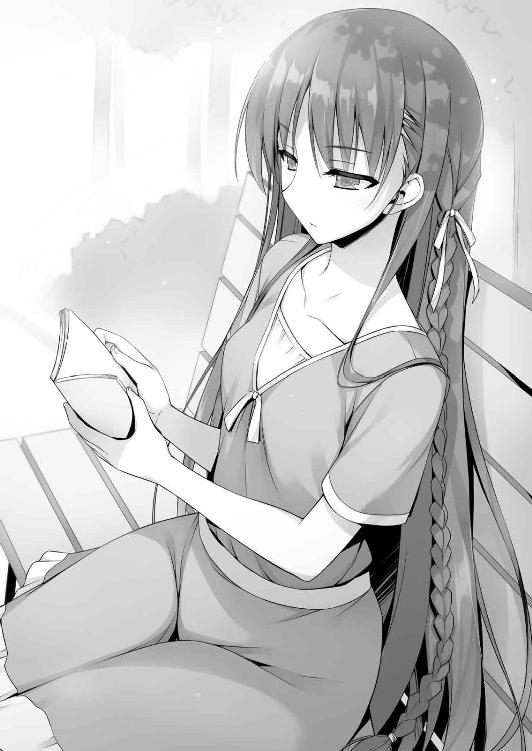
沢尻エ○カみたいな口調で顔をそむけて答えようとしなかった。
「今はいつだ？」
「え？」
「今はいつだって聞いてるんだ。オレたちの学年は？ 月は？」
「何を言ってるの」
「あのな、一年の１学期が終わったばかりってことだ。慌てる必要はない。多少リードを広げられたからって一喜一憂する必要はないってことだ」
「だとしても手痛い敗戦よ。手立てを考えないと......」
「おまえは自分の足元が見えていないのに、前ばかり見過ぎだ。堀北鈴音って生徒は、学業だけやらせておけばピカイチでも、特異な争い事となったらてんで空回り。それが今のおまえの印象だ」
「......分かってるわよ」
「なんだ自覚があったのか。ともかくおまえは落ちるところまで落ちた方がいいな」
「どういう意味？」
今はとにかく徹底的にたたき潰されて、そのうえで最終的に這い上がってくればいい。
堀北はそれだけのポテンシャルは持っていると思っている。
「物事には順序ってものがある。今は焦らずゆっくり行っていいんじゃないか？」
「順序なんて言うけれど、それならどうしてあなたは無人島で仕掛けたの？ 矛盾しているわ」
「かもな」
茶柱先生とのやり取りをしらない堀北にしてみれば不思議がるのも無理はない。
無人島の時には『能力を見せる』ことを強制されたから仕方なく立ち回っただけのこと。もちろん船上での試験は手駒を持たないオレには非常に難解なものだったが、方法はいくつかあった。
それでも実行しなかったのは、下手に気張り過ぎるとロクなことにならないってことだ。
オレは別にＡクラスだのＢクラスだのには根本興味がない。
事を荒立てず、されど茶柱先生に対しある程度能力の有無を見せていれば時間が稼げる。
先の試験でもこちらからすれば大成功だ。
「それよりオレの格好に疑問点はないのか？」
「暑苦しい格好をしているとは思うけれど、他に感想は無いわね」
相変わらず、他人に興味のない奴だ。
「今日は何を読んでるんだ」
「あなたには関係ないでしょう」
そう言って本のタイトルを見せようとしなかった。
「ま、いいけどな。池たちを待たせてるから行くことにする。お前も来るか？」
「冗談でしょう、お断りするわ」
そう言われるのを確信していたので、オレは遠慮なく立ち去ることにした。
７
「なんだお前たち......」
急に縁もゆかりもない池たちに囲まれ、いつも冷静な葛城も動揺を隠せない。そこで先の試験でも対話に参加していたであろう櫛田が話しかける。
「急にごめんね葛城くん、ちょっとだけ時間いいかな？」
「櫛田か。これはどういうことだ」
「実は池くんたちから聞いたことがあって。今日って葛城くんの誕生日なんじゃないかな？」
「む......そうだが......よくわかったな」
誰にも話した記憶がないのか、少し困惑した様子でオレたちを見渡した。
「それでここにいる４人で葛城くんを祝ってあげたいなって思って声をかけてみたの」
「いや、そんな特別なことをしてもらう謂れはない。違うか？」
歓迎するどころか警戒した様子。それもそうだろう。Ｄクラスからの罠だと思ってもおかしくない。
それでもすぐに完全な拒絶を示さないのは、恐らく櫛田の存在が大きいだろう。
「今日は誰かと過ごす予定とかあるのかな？」
「そういうわけじゃないが......」
それは良かった、と満面の笑みで手を叩き櫛田が喜ぶ。そんな笑顔を見せられれば普通の男なら一発で惚れてしまうだろう。
しかしそこはＡクラスのリーダー、安易に撃沈されるほど単純ではなさそうだ。
「申し訳ないがおまえたちとは友人というわけでもない。何か狙いがあるのなら言ってくれ」
「狙いなんてないって。俺たちマジで葛城を祝ってやりたいと思ってるんだ」
池は真面目な顔でそう伝えた。葛城を心のそこから同情心で祝ってやろうと思っている。
「む......」
参ったな、と葛城は拒否気味に口を固く結んだ。
と、オレは葛城の手に昨日と同じ誕生日プレゼントの袋が握られていることに気付く。これを購入したのは２日前のはず、なのにずっと持ち歩いているのはなぜだろうか。池たちはその疑問を感じることもなく（あるいは感じつつも気づかないフリをしているのか）葛城に話しかける。
「悪いが今から学校に行く用事がある。すまないな」
「学校って、そういやここ最近ずっと制服だよな。何してるんだよ」
何気ない池の疑問だったと思うが、その違和感ある一言を葛城は見逃さなかった。
「......それはどういうことだ？」
今までの控えめな表情から一転、葛城は戦闘モードに入るように険しい顔立ちになった。
「え？ 何がだよ」
そんな変化に気付くこともなく池は飄々としていたが、その顔は直後のセリフで崩れることになる。
「何故俺が、制服で行動していることを知っている？」
ズズ、と吸い込まれそうな強い瞳に魅入られ、池は思わず息をのんだ。
無意識のうちに呟いた言葉を拾い上げられ都合の悪いことを思い出したのだろう。
「え？ いや、だからそれは......」
「昨日オレと会った後、池たちに合流したんだ。その時に話してしまったんだが不味かったか？」
そうフォローすることしかできそうになく、オレは葛城に答えた。
「夏休みにしては珍しい格好をしてると思って」
「そうか......そういえばそうだったな」
「そうなんだよ。それそれ」
「何しに学校に？」
慌てた池の様子をまだ怪しんではいるようだったが、いったんそこで話を変えることに成功する。
「個人的なことだ、おまえたちには関係ないだろう」
「余計なお世話だと思うが、何か困ってることがあるんじゃないのか？」
「何故そう思った」
「昨日も今日も同じ袋をぶら下げてるだろ。それを持って学校に行ってるのは少し不自然だ。それに昨日店で会った時にはもう袋を持ってたからな。最低でも今日で３回目になるんじゃないのか」
偶然見てしまったこともあるが、そう推理するのはそれほど難しくない。
「生徒会に用事がある。それだけだ」
それはまた、予想外のところの名前が出てきたものだ。
「もしかして昨日制服を着てたのは生徒会室に行くためか」
「......そうだ。だが不在だったようだがな」
「確か昨日までは改装工事だかで利用できなかったはずだ」
少々驚いた様子で、何故知っているのかと聞き返される。
「生徒会長とは少し縁があってな」
「あの生徒会長と知り合いだったのか」
「知り合いというかなんと言うか......ま、そんなところだ」
「ああ、そうか。Ｄクラスの堀北は生徒会長の妹だったか......」
頭の回転が早い葛城はすぐに独自の結論に達して納得する。
「それなら同席してもらった方が好都合かも知れん。時間が許すなら付き合ってもらえないか」
そう葛城に頼み込まれた。これで葛城が何を狙っていたのかがよくわかりそうだ。
「偶然だな。オレも生徒会にちょっと用事があったんだ」
「それで制服を着ていたわけか」
もちろん葛城の目的を探るためなのだが、これで上手く懐に潜り込めるだろう。
頷くと葛城はすぐに学校へ、そして生徒会室へと向かった。
「失礼します」
葛城ははっきりと通る声で生徒会室の扉を叩いた。生徒会長堀北学と書記の橘が出迎える。すぐにオレの存在に気付く堀北兄。
「意外な珍客も一緒にいるようだな」
どうも、と軽く会釈だけしておく。橘書記は物凄く嫌そうな顔をしていた。
「今日はお願いがあって参りました。基本的に生徒の要望は生徒会を通すと聞きましたので」
「昨日一昨日と生徒会を訪ねたらしいな。改修工事で不在だった、申し訳ない」
「いえ。今は夏休みです、押しかけた側に問題があることは承知しています。ですが本日お会い出来て良かった。場合によっては直接寮の方までお伺いするしかないと考えていましたから」
夏休みの中、葛城は何故この場に立ち寄ったのか。そして何を目的としているのか。それがついに判明する。
「この学校には在籍中許可なく外部との連絡が禁止されています。その件について詳しく伺いたく参りました」
「口ぶりからすれば、当然校則には目を通しているな？ やむを得ない理由を除き連絡は認められていない」
堀北兄の言う通りやむを得ない理由とは当然、重大な病気や怪我など必要に迫られた時だけに限定されている。
「はい。しかし、自分が抱えるケースではどのように対処すればよろしいでしょうか。敷地外の家族宛に荷物とメッセージカードを届けたいのです。もちろん家族から返事を受けるつもりはありません」
つまり一方的な連絡、と言うことか。
「同じことだ。一方的であったとしても許可されていない」
事務的に葛城に返される言葉。だが葛城とて、それでわかりましたと引き下がるくらいならこの場にやって来ないだろう。
「この外部との連絡を絶つ話は、荷物の発送にまで厳しく及んでいると聞きます。文字情報を送らなければルールへの弊害はないのではありませんか？」
「ルール上禁止されていることに変わりはない。この学校設立以来変わることのないルールだ。しかし、意味もなく禁止しているわけではない。学校が設立された当初はルールも今ほど厳しくはなかった」
堀北兄が橘書記を見ると、小さく頷き笑顔を見せた。
「その通りです。元々は葛城くんの希望する荷物だけの発送は許可されていました。ですが、その約束を破る者が数名出てしまいました。荷物の中に無許可で手紙を送付していたんです。そういった経緯もあって、今では全面的に禁止となったわけです」
そういうことだ、と堀北兄は葛城に完全な拒否を叩きつけた。だが、ここで引き下がる葛城ではない。１年とはいえＡクラスのリーダーを務める男はすぐに状況を精査し態勢を立て直す。
「では改めてお願いいたします。店頭で直接発送の申し入れをさせてください。自分は指一本触れず商品と商品の代金だけお支払いいたします。そうすれば不正の余地はありません」
「だとしても規則違反ですから......」
「規則違反？ この学校は実力主義、必要とあればポイントで如何様にも出来ると聞いています。テストの点数を買うことや生徒間の売買など、様々な用途に用いることが出来る。違いますか」
どうやら葛城にとって、送るべき誕生日プレゼントの価値は大きいらしい。
「そういうことなら話は少し変わって来るな」
堀北兄は冷静に話を聞く用意があると態度を少し変えた。
「具体的なポイントの話をする前に、誰に送りたいのかを聞かせてもらっても？」
「双子の妹です。うちには両親がいないため祝ってやれるのは自分しかおりません」
恋だの何だのオレたちが下種な勘ぐりをしていたのとは全く違う結末だった。まさか兄妹とは。
「ひとつ訂正しておくがポイントは万能な制度ではない。確かに、おまえが言った行為は可能だ。しかし、それは『ルールに記載がない』ものだからだ。現在校則として禁止事項に挙げられているものを改変することは容易ではない。学校が許可を出すことはないだろう」
やや理解が難しい発言ではあったが、似て非なるものだってことだろう。
例えるならテストの点数。
オレは以前須藤の点数をポイントによって購入した。そこには『不正』はない。あくまでも点数をポイントで買ったという事実があるだけ。だがもし、この須藤が赤点を越える点数を規則違反であるカンニングによって得ていたとしよう。そしてその不正事実が明るみになった場合、カンニングという不正をなかったことにするのは、難しいということだ。
「学校の規則は守るためにある」
「おかしな話ですね。そうするとこの学校の規則は穴だらけです」
「何もおかしくはない。あえて抜け道を用意しているルール作りを学校側がしているだけのこと」
葛城の疑問に対して、生徒会長は分かりきっていたように間髪を容れず返した。
「............」
いくら頭の回転が早い葛城といえど相手が悪い。実力だけならいざ知らず立場が違い過ぎる。この学校で３年間Ａクラス、そして生徒会長を務める男に隙は無かった。
「ポイントを使ってもどうにもならないと」
「ならないな。学校が規則に違反する行為をポイントで許すことは絶対にない」
堀北兄の言うように、ポイントは万能ではないということだった。葛城は大枚をはたく覚悟をしていたのだろうが、その唯一の手を封じられてしまえばお終いだ。
「これで終わりなら出ていけ」
「そうですか......分かりました、自分はこれで失礼いたします」
葛城は一度だけオレを見たが少し残るとジェスチャーすると、静かに立ち去って行った。
「おまえは帰らないのか？」
「さっきの話、あれは不正が明るみに出た時の話、だよな」
オレはその中、あえて葛城の援護をするように言った。
「どういう意味だ？」
堀北兄の視線がオレへと向けられる。
「前にうちのクラスの須藤がＣクラスの生徒と喧嘩騒動を起こしたことは憶えてるか？」
もちろんだと堀北兄は頷く。大きな出来事になっていたからな。
「その時はＣクラスの生徒が学校に訴え一つの事案となったからこそ処罰の審議対象になった。だが、今この瞬間葛城は不正をしているわけじゃない、不正行為にあたる行為を頼みたいと思ってるわけだろ。そして、その事実を知っているのはオレと葛城、そして生徒会の二人だけだ。なら不正を見逃してくれさえすればいい」
この奇妙な言い回しを、二人なら当然理解してくれるだろう。
交通違反を犯してそれを警官に咎められたとしても、その警官に賄賂を渡し見逃しが成立すれば、その人間は処罰の対象にもならず違反を許されるということだ。
「それに通常は難しい発送処理も、あんたらなら簡単にできるんじゃないか？」
「なるほど。学校を通さずに全てを片付けろ、ということだな」
葛城は律儀に学校に許可を貰おうとした。それが無理なら学校の耳に入れなければいいだけ。真面目な葛城には思いつかない考えかも知れないな。
「堂々と不正を見逃せって言い出す、怖い不良です！」
唯一橘書記だけは、オレに対してちょっとズレた指摘をしてきたが。
「何故その結論に至った」
「この学校は暴力行為の禁止を校則に記してる。けど、あんたは初対面のオレに容赦する素振りは無かっただろ。それは学校に知られなければどうにでも出来るって証拠だ」
いくら生徒会長といえど、公の場であれば絶対に手を挙げたりできないだろうしな。
「そうだな、もし外部と連絡をとるならその方法しかない。だが、葛城はその事実に気付けなかった。その時点で唯一の選択を失ってしまったということだ」
「今から助けてやろうとは思わないのか？」
「それはない。あの男のために不正に加担するほどのものではない」
「手厳しいことで」
「そう思うなら、葛城が退室する前に教えてやるべきだった。だがおまえはそうしなかった」
あー頭のキレる奴は面倒だな。全部お見通しだな。
葛城に不用意に警戒されるのを避けたこともバレている。
「冷やかしも済んだし、オレは帰る」
「これから橘にお茶でも入れさせるが？」
「やめとく。何を入れられるかわかったもんじゃないからな」
「も、ものすごく失礼な１年生！」
退室しようとすると、何故か立ち上がった堀北兄が入口まで見送りに来た。
「今回葛城が持って来た話は聞かなかったことにしよう。おまえがこれから裏で動いたとしても探りを入れる真似はしない、好きにすることだ」
「何もする気なんてないんだけどな」
「それならそれで構わん。ただ俺が関与しないと公言しただけのことだ」
ちょっとイラッとするほどに堀北兄の目から情報が読み取れてしまう。要は自分はタッチしないから上手く誤魔化してやって見せろ、そう訴えていた。
その視線から逃げるようにオレは生徒会室を後にする。オレが葛城に対して新たな提案をしようとしていることも見抜いていたってことだろうな。
「食えないな、あの生徒会長は」
８
「ふう......」
寮のロビーに戻ると、深い溜息をついた葛城が座っていた。
すぐにこちらへと気づき立ち上がる。
「おまえを待っていた。今日は変なことにつき合わせてしまって悪かったな」
「いや、勝手についていったのはオレだ。何の力にもなれなくて申し訳ないくらいだ」
「そんなことはない。元々無理な話だったんだろう、諦めるしかない」
何とかして妹へプレゼントを届けようと思っての行動だったが、規則であればどうしようもないと葛城は諦めたようだった。
「もし良ければ仲間内で食べてくれ。俺は甘いものは苦手でな」
そう言ってプレゼント袋ごと差し出してきた。だが、オレはそれを受け取らない。
「オレには不要だ」
「そうか。そうだな、元々別の人間にやるものを貰っても嬉しくはないな」
そう言って軽く頭を下げ部屋に戻ろうとする葛城。
「葛城」
オレはその男を呼び止めた。
「どうした」
「もしかしたら力になれるかも知れない。そのプレゼントを妹に届けられる方法を思いついた」
「一番生徒に近い側の生徒会に蹴られた話だ、解決策があるとも思えん」
「それはあんたに校則を破る覚悟がないからだろ。そこを度外視すれば可能性はある」
「......俺はリスクのある行動はしない」
Ａクラスのリーダーでもあり、真面目な葛城にとってはありえない話だろう。
特に下のクラスからの提案ともあれば素直に耳を傾けるとも思えない。
「話だけでも聞く価値はあると思うけどな。そのプレゼントを渡すことが大切なことならなおさら」
葛城だって、プレゼントを贈る許可を取るために夏休みに繰り返し生徒会室に足を運んだくらいだ。生半可な気持ちでないことは分かりきっている。
「このような場所で立ち話する内容か？」
葛城は人目、そして監視カメラの存在に目を向けた。
「そうだな。ここで話すのもなんだし、オレの部屋に来るか？」
どうせ普段から色んな人間が出入りしている、葛城を呼んだところで問題にもならない。
葛城と二人寮に向かう。
幸いクラスメイトはおろか一人の学生にも遭遇せず、部屋まで辿り着くことができた。
自室のドアを開け、部屋の電気をつける。
「あがってくれ」
「随分と片付いている、というよりはモノが無い部屋だな。入寮した日を思い出す」
「よく言われる」
適当に座らせ冷房のスイッチを入れてから、お茶をコップに注いだ。
「それで、おまえは校則がどうとかいっていたな」
「例えばこの学校からプレゼントを届けようとした場合、それは容易に行えることじゃない。何故なら敷地外への配送は原則禁止されている。郵便局も取り合わないだろう」
敷地内には郵便局が設置されているが、そこは基本的に教師が利用する場所だ。生徒の出入りはまず行われない。頼み込んだところで断られるのがオチ。だから葛城は生徒会を通して送る許可を貰い、手配を頼もうとした。
しかしそれを撥ねられた以上、物理的に持ち出すことが出来ないという結論。
「事実だろう。配送手段がなければどうにもならない。それとも、別に荷物を運び出す方法があるとでも？」
「ある。深く考えず堂々と敷地外へプレゼントを運び出せばいい」
「バカなことを。そんな真似誰に出来ると？ まさか施設の従業員、ではないだろうな」
唯一敷地の出入りが自由なのは、学校の敷地内の様々な店で働く従業員だけ。
つまり、その従業員を利用すればプレゼントそのものを運び出すのは簡単だ。
だが、それには大きな弊害が付きまとう。
「この学校で働く人間は厳しい規則の下で働いている。俺たち学生の頼みごとを引き受けてリスクを冒す真似はしない。むしろ規則を破ろうとしたこちら側を訴えるだろう」
そうなれば葛城は厳しい処罰を受けることになる。
「もちろんそうじゃない。信用できる外部の人間のツテはないからな」
だろうな、と葛城は目を伏せる。
「まさか学校の敷地から無断で出る、ということじゃないだろうな」
「流石にそれはない。許可無く敷地内から出ることが重大な処罰対象なのは知ってる」
当然出入り口は厳重に管理されているし、万一抜け出せたとしてもバレたら退学だろう。
校則違反を冒すにしてもリスクが高すぎる。
「確かに従業員は使えない。けど生徒なら話は別だ。信用できるやつは大勢いる」
「生徒だと？ それこそ無駄だ。余程の理由でもない限り敷地内からは出られない」
「でも例外もあるだろ。その余程の理由に必然的にかかわってくることが」
「例外......？ 敷地の外に出られるとすれば......まさか───」
頭の回転が速い葛城は、すぐにその結論に至る。
「部活の大会、か」
「そういうことだ」
幾らこの学校が閉鎖的であろうと避けられないものはある。その代表例が各部活の大会だ。校外で行われるものには必ず敷地を出てその開催地へ赴かなければならない。
「確かにそれなら、敷地外へ物を持ち出すことも可能だ。しかし、その危険性があることは学校も重々承知のはず。必ず荷物検査等は行われるはずだ」
「もちろんな。けどそんなもの抜け道は幾らでもあるだろ？ オリンピックのドーピング検査と違って、全身を隅々まで調べられるってこともない」
「それはそうだが......」
葛城は考える素振りを見せながら、そして先までも同時に見据える。
「持ち出すリスクに加えて、それを実行する生徒の負担など、簡単なことではないな。だが綾小路の口ぶりからすると、それを任せられる人材がいる......と？」
「そういうことだ。とはいえ説得はあんた自身に赴いてやってもらう必要があるけどな」
９
部活から戻ったある男を呼び出したのは、葛城を部屋に招き入れてから１時間ほど後の出来事だった。
大会を明後日に控えた男に事情を話し、協力を要請することにしたのだ。
「あ？ おいふざけんなよ。誰が好き好んでそんな真似しなきゃなんねーんだよ」
葛城からの提案を受けるなり、須藤は吐き捨てるように拒絶反応を見せた。それはそうだろう、もしも違反行為が見つかればどんなペナルティを食らうか分からない。
「そもそもこのハゲの頼みを聞いてやる義理がねーっつの」
「らしいが？」
葛城も須藤を信用してはいないし、そもそもまだこのプランには懐疑的だ。
「話を受ける受けないは別として須藤に聞きたい。学校はどんな検査をするんだ？」
「どんなつってもな」
いまいち状況に納得のいっていない須藤は真剣に答えようとしない。
「場合によっては葛城も、それ相応の報酬をくれる可能性はあるぞ」
「報酬だと？」
「......そうだな。当然支払う必要があると考えている」
それを聞いてやる気のなかなかった須藤が少しだけ真面目に考え出した。
「まず朝、大会に向かうためのバスに乗る前に簡単な荷物検査だな。それから携帯を没収される。んで開催地についたらそのまま着替えて試合にってとこだな。飯は大会が終わった後、現地で食うことになってる。詳細はわかんね」
「着替える場所や荷物の管理は？」
「普通に更衣室のロッカーん中だな。着替えてる時は流石に教師はいねーけど、監視は厳しいぜ。トイレも俺らだけ別の場所を使わされて、他の学校連中とは口も利かねえ」
話を聞いていた葛城は、冷静に状況をシミュレーションする。
「やはり厳しそうだな。そもそも荷物の持込が容易ではなさそうだ」
「食事は持参してもいいのか？」
「あぁ、それは自由だな。少数だけどよ、持ってくヤツもいる」
「だとすれば持ち込むのは比較的簡単そうだ」
オレは立ち上がり、棚に閉まってある弁当箱と水筒を持って戻ってくる。これは元々学校が生徒の為に最初から用意していた備品の一部だ。全ての生徒の部屋に１つずつ用意されている。
「弁当箱の中に贈り物の箱を入れておく。サイズ的にもギリギリ入るだろう。それから袋に関しては丸めて水筒に入れる。こうすればまず見つかることはない」
幾ら教師がチェック、検査するといっても中身までは見たりしない。
「待てよ。それで持ち出せたとしてもどうやって送んだよ。送る方法も金もねーぞ」
「お金に関しては心配ない。これを使うだけだからな」
オレは郵便局に行き入手してきた着払い伝票を取り出した。
「あとはこれを当日、隙をついて完成させてポストに投函するだけだ」
「簡単に言ってくれるぜ。結局そこが一番大変なんじゃねーか」
「......確かに、考えられる手段としては現実的だが、危険も高いな......」
それは自分自身が校則違反にかかわることと、須藤のような他クラスを巻き込んだものでもあるからだ。普通なら葛城もすぐに引き下がりそうなものだが、まだ須藤に対し引かない姿勢を見せた。
「生憎と俺のクラスにこのような行為を頼める人材はいない。もしお願いできるのであればやってもらえないだろうか」
頭を下げて葛城は頼み込んだ。妹が如何に葛城にとって大切な存在かがよくわかる。
「須藤。確かに普通なら絶対に引き受けない話だと思う。けど、これは逆に須藤にとっても大きなメリットがあるだろ」
「メリットだと？ さっきの報酬ってヤツか？」
葛城に目配せすると、分かっていると頷いて見せた。
「成功報酬として10万ポイント払おう」
一度目の提示にして、とてつもない額を葛城は放り込んできた。
その瞬間に須藤が固まる。日々を１０００、２０００ポイントでやりくりしている身からすれば、とてつもない額だ。
「そこまでして荷物を送りたい理由はなんだよ」
高額すぎるポイントに、須藤は逆に警戒心を強めたのかそう問いただした。
「......俺には双子の妹がいる。ここまでは綾小路にも話したな」
生徒会室でも口にしていたこと。だが、ただの妹にしては随分と特別扱いしている。
仲の良い兄妹は山ほどいるが、規則違反をしてまで祝いたいと思うのは少々疑問だ。
「妹は病弱でな。付け加えて俺の両親と祖父母は他界していて今は親戚に預けられている。俺は親代わりなのだ。その俺が誕生日に祝ってやれないで、誰が妹を祝ってやれる」
何かあるかもとは思っていたが、想定していたことよりずっと重たい事実が隠れていた。
「この学校の規則は、入学前の段階で分かっていたつもりだ。しかし荷物ひとつすら送れないとまでは考えが及んでいなかった。その点は俺のミスであることを認める。認めたうえで、どうしても妹に対し兄からの贈り物をしたい」
まぁオレも校則を一通り確かめてみたが、具体的にそこまでは触れていなかった。あくまでも在籍中は許可無く敷地外に出られない。連絡を取り合えないなどしか書かれていなかった。もちろんそこには手紙のやり取りが出来ないことは含まれているだろうが、荷物を送ってはいけない決まりにまで言及が及んでいないのも事実だ。
「それで俺んとこにきたってことか」
グイッとオレの肩を摑むと、須藤は葛城にもわざと聞こえる程度の小声で囁いた。
「つか、もしこっちが裏切られたらどうすんだよ。前のＣクラスん時みたいなのはごめんだぜ？」
以前罠に嵌められ、バスケ部を追い出される危機にまでなったからな。
「その心配は無い。向こうだってこっちがそう思うことは計算済みのはずだ」
恐らく提案があるだろう。葛城は当然だと頷いた。
「前金として２万ポイント先に振り込ませてもらう。後は成功報酬として残りの８万を払う」
そうすることで必然的に共犯関係の証拠も残る。どちらかが裏切れば足がつくという話だ。
「前金で２万か......けどな......」
大金でも、須藤が尻込みをする理由は分かる。こいつはバスケ命に考えている。
もしそのバスケの部活中に違法が発覚すれば部活動禁止まであり得る。
その危険性を持つことを恐れているんだろう。
「万全の策は考える。それに、これが罠である可能性も考えているだろうが、発覚した場合、俺自身が大きな打撃を受けることは明白だ」
もし表沙汰になれば、須藤と同等かそれ以上に葛城はダメージを負うだろう。
その覚悟を持っていなければ成立しない話。
だがもちろん葛城だって考えている。こちらに対価であるポイントを支払うことで互いに裏切らない、裏切れない制約をかける。
「後は単純にバレた時ってわけか......」
その責任は葛城も取ってはくれないだろう。つまり実質須藤一人が被ることになる。
高い対価と天秤にかけ、どう判断するだろうか。
チラッとオレを見た須藤は、ある程度合点が言ったのか納得した表情を見せる。
「わーったよ。引き受けりゃいいんだろ？ 確かに俺くらいなもんだしな。そんな危ねえことを引き受けるのはよ」
「いいのか......？」
説得に望んだ葛城ではあったが、実際に引き受けてもらえる可能性が高くないことは理解していたはずだ。多額のポイントが貰えるとしてもだ。
あるいはもっと高額のポイントを要求し、話が破綻する。そんなイメージだっただろう。
そういう意味では須藤という男の存在は葛城にとって想定外であり、救世主でもあった。
「病弱な妹なんていわれたら、断りにくいだろ」
情に厚い面を見せた須藤が呆れながら頭をかいた。
「............」
しかし慎重な葛城は、そんな須藤の存在に素直に喜ぶ気にはなれなかった。難しい顔をしながら無言で思案するように両腕を組んだ。
「なんだよ。引き受けるっつーのに、まだなんかあるのかよ」
「疑ってるんだろ。こっちが裏切らないかどうか」
「んだよそれ。頼んどいて疑うってのかよ」
守り重視の葛城らしい。相手が強気な姿勢になった途端、見に回った。
とんとん拍子に話が進む時ほど疑ってかかる性分なんだろう。
もっとも、そんなことはオレにも分かっている。残念だが今回に限っては杞憂。須藤には表も裏もない。ついでに言えばオレもそうだ。今回のことで葛城を罠にハメようなどとは全く考えていなかった。強いて言うなら、ここで貸しを作っておくことと、葛城個人からプライベートポイントを引き出すことに価値がある。
それに万が一葛城が裏切り行為を働けば自爆覚悟で巻き込むことも出来る。ことこの一件に関して言えば、初手に弱みを出している葛城には基本的に優位は無い。
このプレゼントそのものがブラフ、ということも状況から見て無い。
そこまでの結論を以てして、須藤を仲介役として紹介した。幾らのポイント提示をするかは不明だったが、それが10万なら美味しい取引と言えるだろう。
「念のために送金先は須藤ではなく綾小路にさせてもらう。綾小路には悪いが、須藤が成功した後にポイントを振り込んでもらう形を頼みたい」
「なんでそんな手間かけんだよ」
「保険ってことだな」
もし須藤が持ち出しや発送に気づかれた時、高額ポイントのやり取りが残っていれば学校側に疑いの目を向けられる。しかし送金先を別の者にしておけば葛城までは辿りつけない寸法だ。
須藤は多少不満もあるようだったが、しっかりと後で渡すと念を押され承諾した。
「そしてもうひとつ、おまえが噓を付かないように確実な証拠が欲しい」
「あぁ？ んだよ噓って」
葛城が心配する部分が残っていることは分かっていた。
それは須藤が『プレゼントをポストに投函した』と噓をついてやり過ごすことだ。もし噓をついたとしても葛城には確かめる術がない。家族から連絡を受け取ることが出来ない以上、届いたかどうかを判断するには２年以上先、卒業してからのことになる。それでは後の祭りだろう。
オレは幾つかの『証拠』を用意する方法を思いつく。そして一番簡単で確実な手段として、携帯を使って証拠映像を送るものが最適だと判断した。
だがそれを言葉にするのは憚られた。下手に葛城の注目を浴びたくない。
「おまえが本当に送ってくれたのかどうか、こっちには確かめる術がないからな」
「んなもん、噓つくわけねーだろ。バカかよ」
「もちろん信じたい。だが信じるだけの信頼関係はまだ築けていないはずだ」
やや不服そうな須藤を前に、葛城は少し考えるように腕を組んだ。
「携帯を使おう。当日ポストに投函する瞬間を動画に保存し俺に送ってもらいたい。そうすれば信憑性はグッと高まるだろう」
どうやら葛城は上手く、手段のひとつに辿り着いてくれたようだ。
「おまえ俺の話聞いてたのかよ。携帯は没収されんだっての」
「無論分かっている。そこで綾小路。おまえに協力してもらいたい」
「と言うと？」
「この水筒にはまだ十分なスペースがある。ここに電源をオフにしたおまえの携帯を入れておく。そうすれば気づかれることなく外に持ち出すことが可能なはずだ」
携帯は原則として１人１台。持ち物検査で須藤は自分の携帯を預けるだけだから怪しまれない。
「もちろん携帯の提供をしてくれるのなら、おまえにも報酬は払うつもりだ」
そう言って１万ポイント支払うことを提示してきた。悪い条件じゃない。
「分かった。協力する」
「いいのかよ綾小路」
「オレにも協力できることがあったってことだしな。葛城の言い分もよくわかる。それにポイントが貰えるならこっちとしても助かるからな」
「ではよろしく頼む」
深々と頭を下げた葛城は、一足先に部屋を出て帰って行った。
「......なんか余計なことで緊張してきたぜ」
「大丈夫か須藤」
「大会に参加すんのは２回目だからな。一応流れは分かってるつもりだけどよ......」
それでも悪いことをする自覚はあるのか多少の抵抗があるのも分かる話だ。しかし元々不良で貫いて来た須藤だからこそ、この件にも比較的寛容な姿勢を見せている。
「んで携帯はいつ預かればいいんだ？」
「そうだな───出来ればもう一工夫しておきたいところだな。オレの携帯を預けると、高額ポイントのやり取りも残るし万一の時に足がつきやすい。出来れば第三者の携帯を使いたいところだ」
池や山内などこの件に全く話にかかわっていない人間から携帯を入手するのがベストだろう。
「携帯なんか貸してくんねーだろ」
「５０００ポイント払うと言ったら喜んで貸してくれるさ」
「......おまえ意外と悪い奴だな」
そうして葛城からの依頼を受けたオレと須藤は後日発送するために行動を起こした。
余談だが、須藤は上手く学校側の目を盗み荷物の投函に無事成功した。その瞬間の動画撮影もきっちりと行い、データの移行と削除もきっちりと行った。それが葛城の妹に無事届いたかは分からないがきっと上手く行ったと思っている。
特にトラブルが起こることもなく終えることが出来たのは須藤が上手く立ち回ったからだとは思うが、もしかしたら堀北の兄貴が関係していたのかもと思うことがある。オレたちが何らかの行動を起こそうとしていたことは把握していたはずなので、あの男なら根回しすることも出来たはずだ。逆に須藤に目をつけ校則違反する瞬間を見張っておくこともできただろう。
オレの勝手な想像だし、その真実を確かめるつもりもない。
本当にそうであるならばいずれ、聞かずとも真相が分かる気がしたからだ。
10
綾小路の部屋を出た葛城はエレベーターで自身の部屋のフロアまで戻ってきた。
すると何故か部屋の前に二人の男子生徒が待ち伏せるように立っていた。
「人の部屋の前で何をしている」
「おー！ やっと戻って来たか葛城！ 遅いぞこの野郎！」
「む......おまえたちは？ Ｄクラスの生徒、だな？」
どことなく見覚えのある二人に、疑問を抱きながら葛城が聞き返す。
「そんなことはどうでもいいからよ、とにかくおめでとさん！」
そう言われた直後、パン！ とクラッカーが破裂し葛城を襲う。
「な、何事だ!?」
「何事って、もうすぐおまえの誕生日だろ!? だから先行して祝ってやりに来たんだよ！」
「い、祝う？ Ｄクラスのおまえたちが、何故？ 理由がないだろう」
「理由はあるさ。童貞同士これからも仲良くやろうぜ。な？」
下品な言葉に葛城は後ろに後退しつつ、池から強引に誕生日プレゼントを渡される。
「これ食ってくれよ。俺らのアイドル櫛田桔梗ちゃんが選んだバースデーケーキだ！」
「う、受け取るわけには───」
「いいからいいから」
ぐいぐいと箱を押し付けられる。
「じゃあな！」
そして颯爽と立ち去って行くＤクラスの男子生徒。
後に残されたのは、部屋の前に散らかったクラッカーのクズとケーキだけ。
「ケーキと言うわりに随分温かいが......」
おそるおそる葛城が箱を開けると、常温になりどろどろになったチョコレートケーキ。
「......これは、新手の嫌がらせか......？」
そう思わずにはいられない葛城だった。
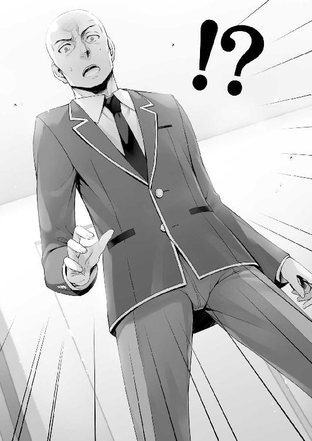
○さりとて日常に潜む危険性
それは、ある日の夕方６時に起こった突然の事件から始まった。携帯に学校からのメールが届いたため確認すると、水道局のトラブルにより寮全体の水が暫く出なくなっているとの連絡だった。試しに水道の蛇口を捻ってみると、確かに出ない。復旧作業には暫く時間を要するらしく長引けば早朝までかかるとの見通しらしい。
だが学校側も生徒に対するフォローはしっかりと行っていて、一度に２リットル以上水の使用が必要な場合は学食で配ってもらえるらしい。食堂が混むことが予想されるので注意してほしいとの記載もあった。そして禁止事項として大混雑が予想されるコンビニは一時利用不可、またケヤキモールには無料で利用できるミネラルウォーターが設置されているが、通常利用は認めるもののボトルに入れて持ち帰るなどは禁止とされた。オレには関係のないことだが。もし問題があるとすればトイレだ。タンクに水があるとはいえ流せるのは一度だけなので注意が必要だろう。
「飲み物は......あと少しか」
冷蔵庫にあるお茶はコップ一杯分だったが、今日はこれだけで十分だろう。夕食は水を使わない料理で凌ぐことにしよう。
それから淡々と夕食の準備を始めていたところ、突如として携帯が鳴り響いた。だが通話に出ようとした瞬間通話が切れる。鳴っていたのは２コールほど。
何だろうかと携帯に手を伸ばして着信相手を確認すると、堀北鈴音の文字。
こっちに電話をかけてくるなんて珍しいな。堀北はオレに用事があったとしても大体チャットで済ませることが多い。少し様子が気になったので折り返してみることにした。
ところが何コール鳴らしても堀北が出ることはなかった。
少し不思議に思いながらもそこで堀北を追うのは諦め、携帯をテーブルの上に置き夕食づくりを再開する。今日はチャーハンを作る。あらかじめ買っておいた米とチャーハンの素を使ったシンプルなものだ。
卵を加えて後は仕上げ、というところでまた携帯が鳴った。
火を止めてから再び携帯のところへと行くとまたも携帯が切れてしまった。携帯を見ると先ほどと同じ堀北からの着信。
再度折り返しの電話をかけるも、やはり何コール鳴らしても堀北は出ない。
その不可思議な状況に少し疑問を覚える。偶然にも、向こうも通話が切れた直後に立て込んでいたのだろうか。それもあり得ることだが、堀北の性格上少し考え辛い。落ち着いた状況で連絡することを心掛けているタイプだろう。不測の事態が起こったとしても、２度続けて着信が切れる、折り返しても不通なのは奇妙だ。
ここから導き出される結論は堀北は思わぬ事態に見舞われているかも知れないということだ。
「なんてな」
大げさに考えた自分に呆れながらも、料理を中断しオレはチャットすることで答えることにした。
『２回電話を掛けてきたみたいだが、何か用だったか？』
そう送ると、タイムロスすることなく既読のメッセージが点灯した。しかし既読になったもののメッセージが返ってこない。待てど暮らせど変化はなしだ。
『料理しててレスポンスは悪いかもしれないが、連絡くれたら対応する』
そう返す。同じように既読になったが返事は戻ってこなかったので料理に戻ることにした。
１
夕食が済んでからも堀北から連絡が返ってくることはなかった。
最後の麦茶を飲み終えたところで再び少しだけ嫌な予感が頭を過った。
「まさか───本当にヤバイ状況なのか？」
予期せぬ事態に巻き込まれ、どこかで倒れている、なんてことはないだろうか。
いつもの堀北らしくない反応なのだけは間違いない。
携帯が不調で上手く連絡が取れないってことなら可能性としてあるだろうか。
でも、だとすればオレに相談してくる必要性は高くない。後日学校にその旨連絡すればいいだけだしな。
こんな時堀北の部屋を訪ねてくれるような友人が居れば話は早いんだが......。
悲しいかなそれが出来る友人は一人も浮かばなかった。
『大丈夫か？』
ありきたりだが、そう様子を探ってみる。
「お......」
既読がつかない。さっきまでとは携帯の置かれた状況が変わっている。携帯のバッテリーが切れてしまったとか、あるいは自動オフになったか。そういったことも考えられるが......。
他に考えられる選択肢はなんだろうか。そもそもオレに電話をかけてきたことが気になる。その目的はなんだったのか。ただ何にせよハッキリとしないのはおかしい。
そこで改めて現実的に考えられることは──。
１つは、堀北がオレへの用件を持ちながら別件に追われてしまった。例えば先生から呼び出しを受けたり、クラスメイトからの電話を受けているなどだ。だがこの線は薄い。夏休みの今、それも夜に学校側から連絡を受けるとは考えにくいし、堀北に連絡をとる友達もおそらく存在しない。
となると本命は、オレに何か話があったと考えるべきか。
連絡をとろうとしていたものの何らかのアクシデントで取ることができなかった。
その後寝たり忘れたりして折り返すことを忘れてしまった。そんな流れ。
「どうもしっくりこないな」
堀北はとにかく優等生でしっかりとしている。そんな堀北が返事を忘れるようには見えないのだ。
通話を鳴らして直接聞こうとしたが繫がらず、やむを得ずチャットへと切り替えた。
だがそのチャットでもまた、結局は文章を送ってくることはなかった。一時は既読がついたものの、それが今はつかないことを考えれば操作していることは想像できる。
「気になるな......」
ここにいても結局出来ることは限られているが、放置しておくのも気がかりだ。まずはこっちが連絡を取りたがっていることを理解してもらうため繰り返し電話を掛けてみる。
ここまですれば、よっぽど立て込んでいるか着信に気が付いていない限りは連絡を取ってくるだろう。繰り返し堀北のアドレスを呼び出しかける。そして掛け直すこと４回目、ついに電話の向こう側とのコンタクトに成功する。
「もしもし......」
堀北に驚いた様子はない。しかしどこか疲れたような声で言葉が返ってくる。
「よう。何度も鳴らして悪いな、連絡貰ってたから気になってな。寝てたのか？」
「そういうわけじゃないわ。悪いわね返事してなくて」
慌てたり異変を感じさせるような気配はない。
「ちょっと今立て込んでるの、話がそれだけなら切ってもいいかしら」
そう答える堀北の電話口からカツンという金属音が聞こえてきた。
「今のは？」
「いえ、別になんでもないわ。それじゃあ」
探りを入れられたくないのか急ぎ電話を切る堀北。少し気になることもあったが連絡はついたし、本人が何もないと言っているから大丈夫だろう。
いったんこのことは忘れることにしてオレは夜をゆっくり過ごすことにする。
２
今日はもう何も起きない。そのまま一日が終わると思っていた。
だが、午後９時を回った頃に携帯が静かに光った。新着メッセージが届く。
『起きてる？』
そんな堀北からのチャット。
『起きてる』
『少し話したいのだけれど、今時間はあるかしら』
先ほどの通話から２時間ほど経ってのそんな連絡。
『こっちから掛けるぞ』
そう伝えすぐに堀北へと電話を掛けると１コールほどで電話にでた。
「どうした」
「あなたに、少し聞きたいことがあって......」
先ほどと同じく歯切れの悪い堀北は、その後少し黙り込んだ。
「例えば一匹の亀がいるとするわ」
「え？」
突如、堀北から突拍子もない話が振られる。
「その亀は非常に頭が良くて、優秀な亀よ。でも、もしアクシデントに見舞われてひっくり返ってしまったとしたら、それは大変なことだと思わない？ 自力で起き上がれなくなるわ」
「そうだな。ただ普通の亀は起き上がれないように思えるものの、首を伸ばして足でバランスを取ることで大抵は、元の体勢にひっくり返れるんだけどな。ちなみに自力で起き上がれないのはゾウガメかウミガメだ。どちらもひっくり返る状況が生まれにくい生き物だからな」
「............」
余計なオレの一言に、堀北が黙り込んだ。
「余計な一言ね。素直に起き上がれない想定で話を聞いてくれれば早いのに」
だろうな。自分でも見事なくらい余計な一言だと思ったからな。
「で、その起き上がれない状況がどうかしたのか」
「もしもそんな状況にあなたが遭遇したらどうする？ 参考までに聞いてみたくて」
「遭遇したら、多分起こしてやるだろうな。それほど手間でもないし」
助ける理由もないが見捨てる理由もない。それなら手を差し伸べてみてもいいだろう。
しかしこの話が示しているものはなんだろうか。
単純に考察するなら、堀北は今起き上がれない亀のように困っている状況下にあるのか。
だが通話自体は落ち着いていて焦っている様子は見受けられない。そこまで切迫した状況ではないのだろう。
「それで......何を困ってるんだ？」
回りくどく話す堀北に対し、こっちはストレートにそう聞いた。
どんな困りごとにせよ長引かせて得することはないだろう。それなら話を聞きだした方が早い。
「私は別に困っていないわ」
「いや、今のはそういう話の流れだっただろ」
「ひっくり返った亀の話をしただけであって、私には関係ないもの」
「......だったら、なんでその亀の話をしたんだ」
「それは気分よ。あなたとひっくり返った亀について話し合いがしたかったの」
めちゃくちゃだな、もう。
「らしくないぞ。いや、助けを求めるのもらしくないが......。頼る相手がいないからオレにかけてきたんだろ。それなら簡潔に言った方が楽だと思うぞ」
そう諭すように話すと、少しだけ間をあけたがやがて話し出した。
「あなたが人助けをしたくて仕方がないと言うなら、相談に乗らなくもないわ」
「お、おう。それでいいから聞かせてくれ」
超絶捻くれている堀北はそんな滅茶苦茶な言い方をした。もうこの際なんでもいい。
「少しだけ困ったことになっているわ」
そうしてやっと素直に認めた。
「今どこだ」
「部屋よ」
「まさか黒い虫でも出てきたか？」
それなら話す余裕はあっても対応しきれないイメージはつきやすい。時期的にもドンピシャだ。
だが、この寮は清潔に保たれているし、堀北が住むのは上階。出現率は低そうだが。
「違うわ。それなら自分で対処できるもの」
「対処ってどうやって？ 洗剤か？ 熱湯か？ スリッパか？ ってそうじゃないなら何だ？」
すぐに内容を伝えてこないことも引っかかる。
どれだけ推理を巡らせても堀北の状況が想像できない。
「私が困っている理由は......いいえ、やっぱりいいわ。自分で解決するから」
「自分で解決しようとしてる何かが解決せずに、もう２時間以上も経ってるんじゃないのか？」
連絡をした時には既に困った状況だったはず。なら相当苦戦しているはずだ。
「そうね......」
肯定したものの、内容が重いのかすぐには答えてこなかった。しかし
「......そうね。確かにそろそろ体力的にも限界も近い。正直に話すわ」
やっと本題が聞ける。そう思ったが堀北はこう切り出した。
「......今から私の部屋に来てもらえないかしら......」
どこか恥ずかし気で、気まずそうな、ちょっと意味ありげな発言。
「今からって、もう９時を回ってるんだぞ」
「それは分かっているけれど......来てもらうしか解決する方法はないの......っ」
火照ったような声。僅かに苦痛を伴うようなもどかしい声だ。
「少し抵抗はあるけどな。この時間に女子が住む上の階に上がるのは」
「分かっているけれど、あなたに直接動いてもらわなければ解決は難しいわ」
そんな風に言って堀北は通話を一方的に切ってしまった。
「なんだか少し怖いな......とは言え行くしかないよな」
とりあえず、あまり遅くなるとよろしくないので携帯と部屋の鍵だけ摑み部屋を後にした。
３
あまり他の女子と顔合わせしたくないと思い、エレベーターが誰にも使用されていないタイミングを見計らう。
こそこそしていて情けないが、オレはそういう人間だ。
タイミングよく堀北の住む13階までたどり着くと、チャイムを押す。暫く待ってみても扉が開く気配がないので、ゆっくりとドアを開けてみると鍵はかかっておらず簡単にドアが開いた。
「堀北？」
堀北の部屋は１Ｋだが、扉一枚を挟んでいる為、寝室までは見通すことが出来ない。
入居当初とほぼ代わり栄えしない廊下と台所に堀北の姿はなかった。
「１人よね？ 中に入ってくれて構わないわ」
そう扉を隔てた向こう側から聞こえてくる。
「いくら寮の中だからって、物騒だな」
「大丈夫よ。もし不審者が入ってきたら、今の私なら右手の破壊力だけで十分だから」
なんだその言い回しは。
そう思いながら部屋の中に入る。それから部屋の中に足を踏み入れる。
堀北はこちらに背中を向けており表情を窺い知ることは出来ないが、特に変わったところはない。室内もシンプルなもので、特に変わった箇所はないように思えた。
「来たぞ。何に困ってるんだ？」
「見れば分かるわ」
そう言い、ゆっくりと立ち上がった堀北が振り返る。
そしてその瞬間、理解できない感情と理解できる感情が同時にあふれ出てきた。
「なるほど......そういうことか？」
「そういうこと、よ」
やや情けなさそうに視線を逸らし右腕の先端を見る。そこには女性用の小ぶりな水筒がすっぽりと手を吞み込み挟まっている姿があった。
「なんていうか......おまえらしくない惨状だな。まさか遊んでいたのか？」
「バカ言わないで」
「いや、あり得ることだろ。とんがりコーンを指に挟んで食べたりする感じだろ？」
そんな言い方がムッとしたのか、強張らせた表情で右腕を振り上げた。
「じょ、冗談だ」
「冗談は言って面白いものでなければ意味がないわ。あなたのは面白くない、落第よ」
「それはオレの冗談が面白くないんじゃなくて、おまえをからかったからだろ」
「これは洗っていた結果こうなっただけ。もういいから抜いてもらえる？」
ってことだよな。水筒の先を持って引っ張る。すると堀北ももれなくついてきた。
「自分で抜けないってことは結構きっちりハマってるってことだ。少し踏ん張ってくれ」
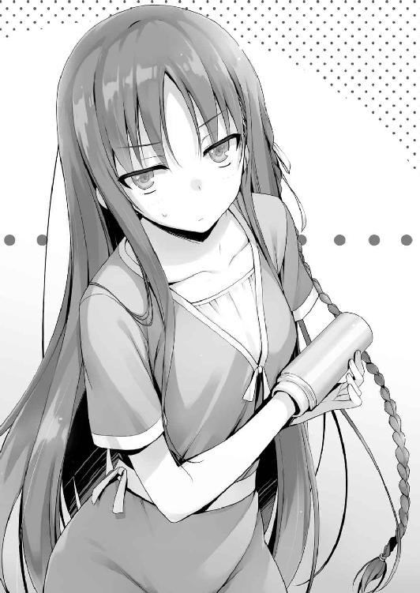
引っ張られるままに身体もついてきては抜けるものも抜けない。
「そんなことわかってるわ。ただ結構疲れているから、手短にお願い」
２時間以上にも及ぶ奮闘で堀北も疲弊しきっている様だ。改めて水筒を握りしめる。
それから少し強めに力を入れて引っ張る。堀北もその場に踏みとどまって痛みに耐えるが、本当にきれいにハマってしまったのか腕が抜ける気配が全くなかった。
「これはダメだな。このままじゃ多分抜けそうにない」
「そう、やっぱり......」
水筒が抜けないことを悟っていたようで、堀北には強い落胆は見られなかった。
「石鹼を流し込んでゆっくり抜くしかないな。台所に行くぞ」
「けれど災難は続くものなのよ。断水してるって連絡があったのを忘れた？」
そうだった。寮内は12時まで水を使うことが出来ない。唯一使用できるのはトイレの水だが、流石にそれを使うことを堀北は良しとしないだろう。
「ちょっと食堂に行ってくる」
それしか方法はないだろう。水さえ手に入れられれば抜くことが出来るはずだ。
すぐに部屋を出て食堂へ足を運ぶ。
しかしここで、思わぬ不測の事態に見舞われる。
「ごめんなさいね。思ったより生徒さんが多く来ちゃって、なくなっちゃったのよ」
食堂のおばちゃんから、申し訳なさそうにそう謝られる。夕食時に水を必要とした生徒が全部持って行ったらしい。
「分かりました。自販機で買っていきますんで」
「そうしてもらえるー？」
腕を水筒から抜くだけなので、大量の水は必要ないからな。コップ２杯分くらいあればいいだろう。
そう思い食堂近くに設置された自販機へと向かう。だが、不幸とは重なるものだ。自販機の水、お茶、ジュースなどが全部売り切れていたのだ。
「......全滅した自販機は初めて見た......」
４
「で、手土産もなしに戻ってきたわけ？」
水筒マンに睨みつけられるが、どうにもならなかったものは仕方ない。
「オレの部屋から持ってきてやりたかったんだが、全部使いきってたんだよな水」
これも不幸な流れが生み出した悲劇としか言いようがない。
「じゃあどうするの？」
「おまえさえ良ければ、池や須藤に水を分けてもらえないか聞いてみるが？」
「遠慮するわ」
そんな回答が返って来るんじゃないかと思って聞く前に確認を取ったのだが、やっぱりか。
「借りを作るのが嫌ならオレが必要としてるって噓ついてやるけど」
「そうじゃないわ。彼らの手元にあった水を使うことに抵抗があるのよ。何が入っているか......」
まるで黴菌のような扱いだ。そんなことは絶対にない......と言ってやりたいが自信はない。あいつら、飲みかけの水とかお茶をそのままにして置く癖があるしな。
堀北に渡すとなれば綺麗なものを渡してくるだろうが、オレが欲しているといえば、場合によってはその類のものを渡してくるかもしれない。悪意のない悪意ほど恐ろしいものはないからな。
「じゃあもう一度チャレンジしてみるか？」
「ええ。私が痛がっても続けてもらって構わないかしら」
覚悟を決めたように堀北は右腕を差し出してきた。一刻も早くここから脱出したいらしい。うっすらと腕には汗をかいているようにも見えた。
「よし、じゃあ少し腰を据えてやるぞ」
一刻も早く堀北を解放して、オレも自分の部屋に戻りたい。
間抜けな構図はひと時の我慢と思い、がっちりと水筒を摑む。それから先ほどの倍近い力で水筒を引き抜こうとするが、堀北が苦悶の表情を浮かべるだけ。それでも堀北は根を上げず痛みに耐えるものの水筒は吸い付いたように離れなかった。
「これはやっぱり、水が必要だな」
滑りをよくして抜くしかない。もしそれでも外れなければ救急に電話する必要も出て来るだろう。
「12時まで待てってこと？ この格好で」
「オレが連絡先を知る中で頼れるとしたら、残る男子は平田だな」
「彼なら水質に関しては間違いないでしょうけど......借りを作るのは嫌ね」
「借りって言っても、建前上はオレが必要とするだけだ。おまえに問題はないだろ」
「......それはそうだけれど」
どこか不服そうだが、背に腹は変えられないとその案を受け入れることを認めた。
「じゃあ早速連絡してみる」
平田へと電話をかけてみる。が、ここでも不運は重なってしまう。どれだけコールしても、一向に平田が通話に出る気配がないのだ。おまけにチャットを送ってみても既読がつかない。
「気付いてないか、寝ているか。とにかく反応がない」
「そう。喜ぶ気持ちと悲しむ気持ちと両方が混同していて複雑だわ」
「あとはもう、櫛田か佐倉に頼るくらいしか方法はないだろうな」
「佐倉さんでお願い」
櫛田は論外だと言わんばかりに、即答する。
「まだ仲が悪いのか櫛田とは」
「仲良くする理由はないもの。それに彼女の行動には納得のいかないこともいくつかあるから」
「なんだ納得のいかないことって」
「......船の上での試験。彼女は最初から勝つことを放棄していた。引き分け狙いをしていたの」
先日の特別試験を思い返し、腕を組む堀北。いかんせん腕にハマった水筒が格好悪いため迫力に欠ける。
「あいつは平和主義だからな。誰もが幸せになれる選択を選ぶこともあるだろ」
「私は結果１を全面否定するつもりはない。でも自分たちが優待者であるならそれは論外よ」
ぴしゃりと言い放つ。
船の上で行われた試験は12のグループに分けられた優待者を探し出すゲーム。結果は全４つで、結果１とは優待者の正体を全員が見破り、かつ裏切者を出さずにクリアする最も至難の結果だ。
その見返りは強大でグループ全体が分け隔てなく１００万ポイントを得ることが出来る。しかし唯一の欠点は優待者を抱えたクラスが得をしないことだ。各クラス平等に評価を得るため差が広がらない。優待者という有利な特典を生かせない。堀北はそれが不満なのだ。
「あの状況はＤクラスにとって絶対に優位だった。つまり優待者の正体は絶対に隠さなければならなかったし、隠しきれたはずなの。でも櫛田さんが優待者であることを全員に知られてしまった。そのことに私は彼女自身がかかわっているとみてる」
つまり堀北は、櫛田が何かしたことで結果１になってしまったと言いたいのだろうか。
「憶測だろ、それはおまえの」
「そうよ。だけどその可能性が極めて高い。推定有罪よ」
堀北は言葉を強めた。気持ちは分からなくもないがやっぱり腕にハマった水筒は不格好だ。ただ、ここは少しだけ堀北の考えを修正してやる必要があるな。こいつはまだまだ成長前の段階にある。
「気持ちは分かるが、それじゃダメだろ」
「彼女が裏切った根拠もなしに語ることが？」
「そうじゃない。全部おまえの責任だってことだ。櫛田が裏切った、と仮定して話すが、それが事実だとするなら櫛田を裏切らせたおまえに責任がある。付け加えて櫛田に裏切られたとしても勝たなければならなかった。違うか？」
真っ向から分かりきった、されど最も難易度の高い要求を正解としてぶつける。堀北は理不尽な攻め立てに不服を募らせる。
「無茶を言うわね。それがどれだけ非現実的なことかわかる？」
「非現実？ オレにはそうは思えないけどな。繰り返すが櫛田が裏切ったことで結果１を導き出したとするなら、それはスゴイことだ。生半可なことでは達成不可能な領域と言える。つまり、お前は前回の試験では櫛田に対していいようにやられたってことだ。実力の差で」
もちろんオレの言葉は櫛田が裏切者だった場合であり、そうでなかったならば当てはまらない。龍園や葛城、誰かは分からないが、より強大な力で竜グループの面々をねじ伏せた結果と取るしかないだろう。
その場合でも堀北はやりくるめられたことに変わりはない。
「自分のクラスに優待者がいた。それで勝ちを確信して行動を起こさなかったのなら、全部の責任は同じチームの人間にある。Ａクラスを目指すのならそれくらい管理して当然だ」
「......難しいことを、言ってくれるわね」
「苛立ちたくなる気持ちは分かるけどな。それでもお前が選んだ道だ。それにお前は以前よりは成長してる。出会った時に同じことをオレが言ったとしても絶対に聞く耳を持たなかったはずだ」
そう。着実に、ゆっくりとだが堀北は精神的に大人になり始めている。
最初に出会った頃のように、全てを拒絶していた少女ではなくなってきている。
「わかったわよ。試験の結果を受け入れる。楽観的に考えていたことを反省するわ。でも今はとにかくこの腕を自由にすることが先決よ」
そりゃそうじゃ、とどこかの博士が頷きながら言いそうな状況下だからな。
「ちょっと佐倉に頼ってみる」
夜も遅くなり始めているので、電話ではなくチャットで声をかけてみる。
『佐倉、断水の件は知ってると思うが、部屋に飲料水がなくて困ってる。自販機も売り切れで、もしよかったら少し水を分けてもらえないか？』
送った後しばらく待ってみたが既読がつく気配が無い。
「ダメだな。寝てるのか分からないが、気づいてもらえないようだ」
「全く、今日はどこまでもついてないわね......」
「今すぐ抜きたいんだよな？」
「この格好のまま日付が変わるまで待つつもりならあなたを呼んでないわ」
そりゃそうだよな。一刻も早く抜け出したいはずだ。
「だとすれば、これはもうおまえも相応のリスクを負うしかないな」
「......相応？」
警戒しながらも聞き返す。恐らく堀北も頭の隅にはあったはずだ。
「この部屋を出て、水が使えるケヤキモールまで行く。それしかないだろ」
「やっぱりそういうことになるのね......」
額に手を当てるが、どんな仕草をしても間抜けに見えてしまうものだ。
「今の時間帯は食事、風呂と色々やることも多いしチャンスだ」
実際この部屋に来るまで、食堂に行くまでの間には一人のクラスメイトにも遭遇しなかった。12時まで我慢できないというならそれくらいのリスクはとらなければならないだろう。
「背に腹は変えられない。あなたの友人たちに頼めないの？」
「生憎と今日は無理だな。カラオケに行く約束をしてたみたいだからな。不在だ」
「全く。これ以上繰り返すつもりはないけれど、なんて日なの......」
「パッと済ませるためにもいくぞ」
「ちょ、ちょっと待って。流石にこのまま外には出られないわ」
「だったら何かで手を隠すか？ もう水筒で隠れてるけどな」
「そういう余計な突っ込みは不要よ」
「わ、わかった。謝罪するから振り上げた手を速やかに下ろせ」
またもオレを殴りつけてこようとしたので、慌てて距離を取る。
「何か布みたいなものはあるのか？」
「布......？ ハンカチなら」
そう言って堀北は棚から白いハンカチを取り出した。
オレはそれを受け取ると、堀北の水筒の上から被せる。
「......露骨に怪しいわね。というか尺が足りてないもの」
大部分は隠れたといっても、水筒が顔を覗かせていたら意味がない。
「もっと大きなものは？」
「そうなると、バスタオルくらいになるけれど......」
今度はバスタオルを取り出す。それを水筒の腕に被せてみる。
「まぁ、これなら何とか......」
ただどうしてバスタオルを手に持って外を出歩いているのかは、謎になる。
ある意味水筒を腕に嵌めていることよりも目立つかもしれない。
「それに少し不安定で、歩いていたらバスタオルが落ちるわ」
「空いたほうの手で押さえる方がいいんじゃないか」
バスタオルを折りたたみ、これからお風呂に入るようなイメージを持たせる。
こうすると、うん、だいぶマシに見えてきたな。
「この私の状況を第三者が見たら、どんな感想を抱くかしら？」
「そうだな......」
まず大前提にバスタオルを持って寮内を歩かないし、外にも出ないからな。
当然疑問に思うだろう。そして傍にオレが立っていればなお更不自然だ。
「場合によっちゃ......どうかな。例えばオレの部屋に風呂を借りに行くように見えるかもな」
飛躍しすぎかも知れないがそんな風にも見えたので言ってみた。
「却下」
バスタオルを外し、拒否する。
こっちとしてもそんな怪しげな疑惑は生みたくない。
「鞄に手を入れた状態で歩くのはどうだ」
「想像すらしたくないわね。却下、もう少しマシな代案を考えてもらえる？」
ピンチなくせに文句だけは一人前だ。
「ならいっそこのまま行くか？ 身軽だしタオルやハンカチみたいに落とすトラブルも避けられる」
「......そうね」
あれこれ考えて時間を浪費するくらいなら行動あるのみだ。
やや渋る堀北を連れオレは廊下へと顔を出す。
「よし、今のところ人の気配は無い。行くぞ」
「ちょ、ちょっと待って。上手く靴が履けないわ」
片方の手が使えないためにその辺りも時間を食う。ややもたついた後二人で廊下へ。
「通学路の途中に蛇口があったよな？ あそこまで行けば何とかなるだろ」
普通に歩いていけば５分もあれば着く。状況が状況だけにその倍はかかるかも知れないが、寮さえ出てしまえば闇夜に紛れどうとでもなるだろう。
エレベーターの前までいく。２基とも動いていないから乗り合わせることもない。
「ダメよ綾小路くん。エレベーターは使えない」
「なに？」
「１階のロビーに監視モニターがあるでしょう？ アレで誰が見るか分からないわ」
確かに１階には、エレベーターの中につけられたカメラの映像を流しているモニターがある。堀北はそれを見られることを危惧している。
下手にカメラに腕を隠しても、不自然な映像になることは避けられない。
「なら階段を使うか？」
ここから下りるとなるとかなり時間を使う。それに片方の手が使えないのは少々危険だ。
「私はこの無様な姿を見られるくらいなら階段を選ぶわ」
苦労、危険をプライドとの天秤にかけ堀北はプライドを選んだ。
非常階段は２箇所あり、１つはエレベーターからどちらも同じくらい離れた位置にある。どちらにせよもう一度生徒たちの部屋の前を通る必要があるが、仕方ない。オレの背中に隠れるようにして歩く堀北を連れて階段へ向かう。
その途中、堀北の言葉を借りるなら『なんて日だ』つまりアンラッキーな日だ。
見知らぬ生徒の部屋の扉が開く音が聞こえた。
今いる位置から３部屋ほど後ろだ。
「ま、まずいわ。前園さんの部屋よ」
Ｄクラスの前園か。今堀北が遭遇したくない人物の一人だろう。だが、逃げ場はない。
ゆっくりと開いた扉から出てきたのは前園ではなく、その友達の櫛田だった。堀北にとっては更に不測の事態ではないだろうか。
「ありがとう櫛田さん。この借りは今度返すね」
「ううんいいよ。気にしないで。お休み前園さん」
どうやら前園の部屋に遊びに来ていたらしい。前園は室内から見送るつもりなのか顔は見えなかった。バタンと扉が閉まると櫛田はオレと堀北の存在に気づくことなくエレベーターに向かった。
「危なかったわ......」
「だな」
もし後ろを振り返られたら櫛田はオレたちの存在に気づいただろう。嫌な汗が流れる。
とにかくここは目立ちすぎる。早く非常口に出ないとな。
だが次の一歩を踏みだした時、またも前園の部屋の扉が開いた。
「櫛田さん忘れ物忘れ物！」
そう言って前園が外に出てきたのだ。当然振り返る櫛田。
「あれ綾小路くんに堀北さん。こんばんわっ」
「お、おう」
軽く言葉を交わすがまずは忘れ物の確認があるのだろう、櫛田は前園の下へ向かう。
そして前園も必然オレたちを見つけてしまう。
硬直する堀北。櫛田と前園の視線を受け身動きが取れなくなった。
「携帯忘れてたよ」
「あーごめん、ありがと。助かったー」
「行きましょう綾小路くん。ここに長居は無用よ」
櫛田たちの注意が忘れ物に行っている今がチャンスだと背中を水筒の先で押す。
まぁこの姿を見られたら堀北のプライドはズタズタだろうからな。
押されながらも非常口にたどり着き、その扉を開けようとする。
ところが──。
「開かない......」
「冗談でしょう。非常口が開かないなんてことがあるわけないでしょう」
「いや、マジで開かない」
非常口を施錠することは通常禁止だが、これは恐らく──。
「二人ともどこにいくのかな？」
非常口から出ようとしていたオレたちが気になった櫛田が、前園とのやり取りを追えて近づいてきた。
「あ、いや。ちょっと階段を使って下りようと思ってな」
良く分からない理由だろうが、それくらいしか答えられることはない。
「確か東口の階段の電気が切れてるとかで、今は使えないんじゃないかな。真っ暗で危ないから。西口の方だったら使えると思うよ？」
「なるほど、そういうことか」
堀北は櫛田に声もかけず背中に隠れてやり過ごそうとしている。
「堀北さんいつもと感じが違うけどどうかしたの？」
櫛田はそう声をかけてきた。しかも自分の部屋の前を過ぎる。
どうやらオレたちの前まで来るつもりらしい。
櫛田の行動が堀北にも伝わったのか、やや声を上ずらせながら答えた。
「別にどうもしないわ」
立ち止まってくれと願いを込めた堀北の言葉。それが届いたのか櫛田が立ち止まった。
「そっか。何か困ったことがあったら言ってね。さっき前園さんも、断水で水が使えないから困ってたみたいで。私はお水とか余ってるから」
どうやら目の前の櫛田は、今堀北がもっとも欲しているものを有している。
今ここで頼み込めば、あっさり手に入りそうだが──。
水筒の先を拳銃の銃口のように使い、オレの背中に押し当てる。
櫛田に頼ることは許さない、ということだろう。
「それじゃ堀北さん、綾小路くん。二人ともお休みなさい」
「おう、お休み」
５
非常階段を使い、13階から１階へと時間をかけておりてきた。断水騒ぎでロビーも賑わっている可能性があったが幸いにも生徒や管理人などの気配は感じられなかった。
「今ならいけるぞ」
「......ええ」
オレの影に身を潜めながら後をついてくる堀北と一緒に玄関から外へと出る。
しかし───
暗闇が広がる前方から複数の男女が雑談しながら近づいてくるのが見えた。Ｄクラスの生徒ではないようだったが、堀北にしてみれば誰であっても対して変わりはない。寮から出て行くには時間が足らず、踵を返すように背中を向ける。
「このままじゃ見つかるな......」
どんどん寮に近づいてくる気配は大きくなっていく。ここは一度非常階段に戻るべきかも知れない。
慌てて非常階段への扉を開く。ここまで来ると不運は不運を連鎖するのだろうか。真上から声が聞こえてくる。耳を澄ませると３階４階に住む男子が降りてくるようだった。
階層の低い部屋に住む生徒はエレベーターを使わないことも多い。非常階段を使っても不思議じゃない。
上にあがることも封じられオレたちは急ぎロビーへと引き返すことを余儀なくされる。
「もうエレベーターしかないわ......！」
「いいのか、モニターを見られるぞ」
「あなたにカバーしてもらうしかない。カメラの位置は分かっているのだから出来るはずよ」
やや不自然にはなるが、確かに無理なことではない。出来れば避けたかった手段だろうが逃げ道がない以上やるしかないのだ。１階に止まっていた左側のエレベーターに急ぎ乗り込む。そして素早くカメラの前にオレが立ち堀北がその後ろに背後霊のように立って腕を隠した。
これならモニターを軽く見られたくらいでは気づかれることはない。とにかく１階から離れなければいけない。適当にボタンを押しエレベーターを上昇させた。
「ひとまずは安心だが......振り出しだな」
「もう諦めるわ。とても外に出かけられるような状態じゃない。ここまで来たら断水が直るまで大人しく我慢する」
苦渋の決断ではあったと思うが、堀北はそう結論づけたようだった。そうと決まれば13階に戻るだけだ。適当に押していた階は操作でキャンセルし13階を押す。
もうこれ以上試練は訪れないはず。
オレも堀北もどこか安堵を覚えかけた時、それは前触れなくやって来た。
急上昇していたエレベーターの速度が急速に落ちる。最近エレベーターに乗ると良いことがないからな、なんてことを考える暇もない。故障でもボタンの押し間違いでもない。これは──。
エレベーターが５階で止まった。そう、５階にいた生徒がエレベーターのボタンを押したのだ。
誰が乗りこんで来たとしても堀北の異常な姿を見られてしまうことは避けられない。
一気に大勢がなだれ込んできてエレベーター内が満杯になる方が気付かれない可能性が高いくらいだ。だが無情にも開かれた扉の先に立っていたのは、たった一人の男子生徒だった。
まさかコイツに出くわすとは......。
その男はオレたちがいることに気付いているのかいないのか、いつもの変わらぬ優雅さを漂わせながら乗りこんでくる。
こちらに全く視線を向けることなく、エレベーターの鏡に向かって一直線で近づいて来た。そして鏡を覗き込み自らの髪などに異常がないかチェックを始めた。
「............」
堀北も堂々と自分の世界に入り浸っているその男の存在に啞然としたことだろう。常に持ち歩いていると思われるクシを取り出すと髪のセットを始めた。
「エレベーターボーイ。最上階を頼むよ」
鏡に映った自分を見つめながらその男......Ｄクラスの生徒高円寺六助は言い放った。色々とツッコミたいことはあるが、この際黙って従うべきだろう。オレは無言で最上階のボタンを押してエレベーターのドアを閉めた。再び上昇を始める。
高円寺は自分の髪のチェックに余念がないのかこちらに関心を向ける気配がない。赤の他人であればそれが自然の道理だが腐っても同じクラスメイトだ。視線を向けてくるくらいはあるものだと思っていた。
だが九死に一生を得た。高円寺なら堀北にも興味がないから水筒の存在には気付かないだろう。あとは奴の注目を集めるようなことはせず僅かな時間を乗り切ればいい。それだけだ。それに万が一視線を向けてきたとしても大丈夫なように堀北は自分の身体の位置を上手く調整している。
カメラの死角を維持しながら、高円寺に対してもカバーが出来ている。
エレベーターは10階を越えた。最上階に何の用があるんだろうと思ったが、それは聞けない。まさかとは思っていたが本当に何事もなく目的である10階までたどり着いた。
ゆっくりと開かれるエレベーターからオレと堀北はほぼ同時に降りる。
結局、高円寺は鏡から一度も視線を外すことなく最上階へと消えて行った。
事なきを得たが、堀北は直後早歩きで自室の前へと戻る。
「これ以上は無理よ。こんな調子で周囲を警戒しながら出歩くのは無茶だわ」
そう言って部屋の中へと勝手に戻っていく。相当ハラハラしたんだろうな......。
オレもその後を追って再び部屋の中へ。
と、そのタイミングでオレの携帯が震えた。
『ごめんね返事が遅くなって、ちょっと調べものしてて気づかなかったよ』
そんな佐倉からの返事が返ってきた。
「佐倉さん？」
「ああ」
『水だよね？ もちろんいいよ。ペットボトル一個くらいで足りるかな？』
『それで十分だ、ありがとう。これから取りに行ってもいいか？』
『うん、待ってるね』
そう返ってきた。本人と直接話すと会話が進みにくいが、チャットだと実にスムーズだ。
「喜べ堀北。どうやら佐倉が水を分けてくれるらしい。許可が出たから行ってくる」
「よろしく。くれぐれも佐倉さんに私のことは話さないようにね」
「ああ。もうすぐこの姿ともお別れだからな、記念に一枚撮ってもいいか？」
水筒を振り回して飛びかかってきそうだったので慌てて廊下へと逃げ出した。
「恐ろしい女だな。あいつの運動神経からして、頭部に振り下ろされたら死にかねないぞ」
腕を水筒にハメた女子高校生に殴られて死んだら歴史に名を遺す汚点だ。
６
「ほら、取れたぞ」
長居苦戦を経て、どうにかこうにか堀北から水筒を外すことに成功する。
「全く災難な一日だったわ......」
水筒に時間を奪われたら、そう思いたくなる気持ちも分かる。
「綾小路くん、くれぐれもこのことは誰にも他言しないようにね」
「忠告する前に言うことがあるんじゃないのか？」
「......ありがとう」
素直？ ではないが、一応お礼を言うことは出来るみたいだな。
「それにしても水筒から腕が抜けなくなるなんて、堀北とは似つかわしくないハプニングだ」
「放っておいて。私だって好き好んで陥ったトラブルじゃないわ」
まぁ身近に潜む危険と言うか、世の中何が起こるか分からないってことだな。
さっさと出て行くように促されオレは自室へと戻る。
にしても水筒から腕が抜けなくなるなんて、あり得るのか？
オレは箱から取り出し水ですすいで洗った後、試しに手を入れてみる。
すると結構際どいサイズで、意外と腕がしっかり固定される。
「ロケットパーンチ、なんてな」
一瞬でバカらしくなり腕から水筒を外そうとする、が......。
「ぬ、抜けない!?」
○女難、災難の１日。天使のような悪魔の笑顔
「今日はおまえに協力してもらうぞ綾小路!!」
「......朝っぱらからなんだ......随分と元気だな山内......」
連打された部屋のチャイムで目を覚ましたオレは、訪問者の山内を見てため息をついた。
「邪魔するぜ！」
随分と元気だ。池と須藤が一緒じゃなかったのは救いだが、一体何の用だろうか。
「なんだ寝てたのかよ。もう夏休みも数日で終わりだってのにのんびりしてんなあ」
残り少ない休みだからこそのんびりしているんだけどな。
「俺にとって今日は特別な日にするって決めたんだよ。ってことで中に入れてくれ」
話についていけないオレは寝癖に触れながら玄関から山内を招き入れた。それから麦茶を一杯用意して置いてやる。
「で......その特別な一日にすることにオレが関係してるのか？」
「忘れたとは言わせないぜ綾小路。俺には佐倉の連絡先を聞く権利があった事を！」
力強く叫び詰め寄られる。その眼は少しだが血走っていて本気さがうかがえた。
「なるほど......」
その件に関しては全面的にこちらが悪いため、都合が悪いからと聞き流すわけにもいかない。
以前、オレは山内に佐倉の連絡先を教える条件の代わりにピエロのような真似をさせた。その影響もあって山内は特に堀北からの評価を下げている。佐倉の連絡先を教えるのが道義ではあるのだが、本人に許可を取らずやったことなので彼女を守ることを優先して、未だに山内に佐倉の連絡先は伝えていない。
その借りは確かに返さなければならないだろう。
「連絡先を聞いて来いって話なら結構難しいと思うぞ......？」
「そうじゃない、それは諦めた」
そう言い、山内は手にしていたと思われる一通の白い手紙を取り出した。
「俺は佐倉への想いをこの一枚にしたためてきた！」
「したためてきたって......これはラブレターってことか？」
「そうだ！ ここにはどれだけ佐倉が好きかってことが書かれている！ 読んでみ！」
そう言い、まだシールで止める前の手紙を取り出しこちらに見せてきた。
『拝啓、佐倉愛里様。僕は以前よりあなたのことが気になっていました付き合ってください』
「出だしの畏まりからの潔過ぎる簡略化されたラブレターだな......」
そんな指摘に対して、自慢げな顔をしている山内。
「長い文章書けばいいってもんじゃないんだって」
それはそうかも知れないが、さすがにこれでは話の脈絡が無さすぎるのではないだろうか。受け取った方も困るのが目に見えている。しかも相手が佐倉なら余計にだ。
「なんで手書きじゃなくて印刷なんだ」
「いやぁ自慢じゃないけど字が下手だからさ。印刷で見やすくしたんだよ。文章を読み間違えられちゃう心配を配慮した感じ？」
ちょっと誇らしげに人差し指で鼻の下を擦るが、そこはそれほど重要じゃないと思うぞ。
「それにほら、最近は履歴書も印刷するっていうじゃん」
「相手に気持ちを伝えるなら手書きの方がいいとも言うぞ。しかも何故ホラー的なテキストのフォントなんだよ」
怪奇・悪霊は存在した！ とかいう見出しになってそうなフォントで、相手を呪いそうだ。
「なんていうかインパクトがあるじゃん？ ずっとあなたを想っています的な」
「まぁそれらは百歩譲っていいとしよう......問題は最後のこれだ」
自分をアピールするために書かれた部分。
『僕と付き合ってくれたら毎月ポイントを全部差し出す覚悟です。貢ぎます！』
「これはダメだろ幾らなんでも......」
「なんでだよ。可愛い子は貢がれるのが好きって言うぜ？ それに俺はポイント全てを差し出してでも佐倉と付き合いたい、好きだってことが、熱意が伝わると思うんだよ」
そりゃ愛の形として無しとは言わないが、これじゃ金のために付き合ってくれとも取れる文章だ。
「いいんだよこれで。金目当てでもいいから付き合ってほしいんだよ。......そんなにヤバイ？」
頷くと山内は理解できないような顔をしながらも一定の理解を示したようだった。
「......ひとつ確認するが、本気で告白するつもりなんだな？」
「ああ。俺は二学期から夢のような学校生活を送るんだ、これに賭ける！ もう桔梗ちゃんに頼んで佐倉を呼び出してもらうように交渉済みなんだ」
その目には茶化すようなことは何もなく、ひとつの決意を固めた山内の姿があった。
それを見てしまっては蔑ろにすることもできない。佐倉に対して敬う気持ちがなければ止める必要もあるだろうが、やり方は至極真っ当だ。素直に手を貸してやるべきだろう。
「で......オレはどうすればいい？ 手紙の内容をチェックするってことでいいのか？」
「それもだけどもう一個大事な役目があるぜ。それはズバリ、したためた手紙を佐倉の元に届けてもらいたいんだ」
「なに？ 今なんて？」
一瞬聞き間違いかと思い聞き返してしまう。
「だから俺の代わりに手紙を届けてもらいたいんだよ。俺、もう朝から緊張しっぱなしでさ、こんなに緊張したのは国技館で決勝戦を戦って優勝した時以来っつーか。だから上手く話して渡せる自信がないんだよな」
国技館で何の決勝戦を戦ったのか、いつもの噓の詳細も聞いてみたいが、ハイテンションで恋愛にも真っすぐな山内らしからぬ弱気な発言だった。
「手紙の中身が問題だって言うなら、しっかりと書き直す。だから──頼む！」
パンと両手を合わせ、山内は頭を下げて頼み込んで来た。
「それに前のことも水に流す！ いや、何か綾小路が困ったことがあれば協力もする！」
「......どうしてもってことなら承諾してもいい」
「ほんとか!?」
「でも成功するか失敗するかは誰にもわからない。佐倉の気持ち次第だ。それは理解してるのか？」
「あぁ、俺だってバカじゃない。その確率が高くないことはわかってる」
自分の中にも大きな不安があるのか勝率が半分もないと理解している様だった。
実際佐倉は男性に対して一歩引いている節がある。そう考えれば絶望的とも言える確率だ。それでもこいつは、今この瞬間戦う決意をしてこの場に来ている。
「......わかった。おまえの想いを手渡す。それでいいか？」
それならフェアもアンフェアもない。
「綾小路......！ 助かるぜ！」
差し出された手を握りしめると神でも崇めるように山内は頭を下げた。
そうと決まれば、まずはこの手紙の内容を少し精査しないとな。受け取る相手が佐倉であることを考えればもっと柔らかく、そして感情が伝わるように書かなければ効果は得られない。
山内は覚悟を決める。とはいえ本当ならまだ時期尚早だろう。お互いに連絡交換すら成立していない中での告白はただただリスキーだ。
成功率を求めるならもっと手堅く攻めていく必要がある。でも、山内の行動も間違いじゃないはず。
恋愛は突如始まるものだし、０から始まる形だって沢山世の中には溢れている。
「まず出だしだが───」
恋愛経験は山内と同じ０だが、せめてそれらしい文章を考えてみよう。
「あ、そうだ。ひとつだけ注文つけさせてくれよ。告白の返事は校舎裏で聞きたいって」
「校舎裏？ 第二体育館に続く？」
「そうそう。なんか噂になってるんだよ。そこで告白すると上手くいくって」
伝説の木の下みたいなものだろうか。噂ってのはどこからともなく湧いてくるものなんだな。
「なるほど演出の一環か」
「もちろん噂だけじゃないぜ。学生の告白と言えば校舎裏、これを王道と呼ばずしてなんと呼ぶっ」
告白と校舎裏を結びつけることは出来なかったが、どのようなシチュエーションを思い浮かべているかだけはよくわかった。
１
目標である佐倉との接触まで30分を切った。彼女は櫛田の誘いにどんな気持ちで応じるだろう。それは本人にしかわからないことだが、心中穏やかではないだろう。
一方のオレは、予め約束の場所でスタンバイして佐倉の登場を待っている。山内曰く、彼女を待たせるわけにはいかないらしいが、30分前はちょっと早すぎるんじゃないだろうか。ポケットでマナーモードにしていた携帯が鳴る。
「もしもし」
「ど、どうだ。もう佐倉は見えるか？」
「いや全然。さすがに10分前くらいにならないと現れないんじゃないか？」
「そ、そうか。くー、緊張する！」
山内は少し離れたところから、こちらに向かって手を振っている。
存在がバレたくはないようだが様子は気になるので見ていたいってところだろう。
「なぁ山内、本当に渡す役はオレでいいのか？ やっぱり自分で直接渡した方がいいと思うぞ」
「む、無理だって。俺は小さいときのトラウマで極度の緊張になると手が震えるんだから」
多分大抵の人間が極度の緊張下に置かれると身震いすると思うが......。
「失敗したくない気持ちは分かるけどもう少し考えたらどうだ？ 間接的に渡すラブレターに本当の価値があると？」
「いやでもよくあるだろ？ 可愛い女子が放課後に呼び出して来てさ、期待して行ったら全然違う不細工な子に告白されるパターン。ああいう感じの逆パターンだよ。櫛田には俺が呼び出したことは伏せてもらってる。つまり綾小路が待ってることに気付いたらガッカリするはずだ。だけど実は告白する人間が俺だって分かれば比較することで必然効果が上がるってことさ。だから綾小路、手紙を渡すときに俺の存在は伝えないでくれよな。おまえみたいなヤツが告白すると勘違いさせた方がいいし」
饒舌に作戦プランを話すがオレに対する悪口など全く気にしていないな。その狙いを非難するつもりはないが、佐倉の気持ちも考えてやった方がいいのは間違いない。
「いくら手紙で分かるとは言っても、見えない相手から告白されるのは恐いと思うぞ」
「それは......」
まだ時間はある。もしかしたら考え直させることが出来るかもしれない。告白は基本一度きり。それを後悔の残る形には山内だってしたくないはずだ。
「まだ時間はある。考え直すべきだと思う。そのために手紙も直筆したんだろ？」
「そうだけど......うー、自分で告白するべきなんかな......」
ついに山内の中でも、ひとつの結論が導き出されようとしていた。
「......綾小路くん？」
背後から控えめな足音が聞こえたかと思った時、そう声をかけられた。
「佐倉だ！ あとは任せた！」
勇気を振り絞りかけていた山内だったが、想定より早い佐倉の登場に慌てて通話を切る。
こっちとしても佐倉と遭遇してしまった以上、もはやどうすることもできないか。あとは山内に託された手紙を渡すだけだ。
「偶然、だよね？」
「あーいや、櫛田に呼び出されたんだよな？」
「う、うん。ちょっと話したいことがあるからって......大事なことだって言われたから」
辺りを見渡すが、当然オレ以外の姿はない。
「実は櫛田に頼み込んでオレが呼び出してもらったんだ」
厳密にはオレではないがここで混乱させても仕方がない。
「綾小路くん、が？ そ、そうなんだ。よかったぁ。普段櫛田さんとは接点もないし、私なにか怒らせるようなことしちゃったんじゃなかって不安だったの」
ホッと胸を撫でおろす。櫛田に呼び出された佐倉は気が気ではなかったようだ。
そんな佐倉に素朴な疑問をぶつけてみることにした。
「それにしても随分と早いな。まだ約束までは30分近くあっただろうに」
「その......先についてないと、不安で」
おろおろとしながら、そう説明する。
「けどそっか、綾小路くんだったんだね。私を呼んだの。ほんとにホッとしたぁ」
心底安心したのか胸を撫で下ろすと、先ほどまでの緊張はほどけたのか穏やかな顔つきに戻った。
「でもどうして？ 私に用事があるなら直接呼んでくれたらよかったのに」
「あーいや、ちょっとな。複雑な事情があるんだ」
「複雑な事情って？」
何と説明したものか。これにはオレも少し頭を悩ませた。生物学的男女の違いは十分に学習しているが、こうして現実に当てはめた場合の対処法は全く学んでいない。
そこには性差の問題だけじゃなく佐倉個人の性格や感情も加味しなければならないのだ。知性を持った人間同士が形作る社会の複雑怪奇な一面でもある。そうこう考えているうちにも時間は過ぎていく。沈黙が長引くほど警戒心を高めてしまうだろう。
「実はな......おまえにこれを渡したくて櫛田に呼び出してもらったんだ」
山内に託された手紙、それを佐倉へと手渡すため差し出した。
「これは......？」
「深くは聞かずに受け取って欲しい。中身を読んでもらえれば分かると思う」
差出人が誰かを伝えればある意味手紙であることの意味が薄れてしまうからな。そう伏せて渡す。
「う、うん」
オレはどこか罪悪感のようなものを感じ視線を逸らした。
対する佐倉は、手紙とオレを交互に見て何事か事態の把握を計ろうとしている様だった。
「て、がみ......校舎裏......男の子......」
手紙を受け取った佐倉は、どこか遠くを見つめながら小さく何かを呟いていた。
おっと、しかしこの言い方じゃオレが書いた手紙だとも取られかねないな。それはまずい。
「誰かは伏せておくがあるヤツから託されたんだ。差出人は読めば分かるようになってる。字が下手なんだが、一生懸命書いてたみたいだぞ」
事故が無いようしっかりと補足しておく。
「あ、あわわ......こ、こんなことって......あわわわ!?」
男子からの告白の手紙ではないか、そんな予測は佐倉の中にも芽生えたのだろう。またも落ち着きはなくなり、視線は明後日の方向を向いていた。
ここで開封されて読まれても反応に困るので、ともかくこの場は早めに立ち去らせてもらおう。
「そういうわけで渡したから。あとはおまえがしっかりと決めて判断すればいい。それから直接伝えにくいと思ったらオレにチャットなり電話なりで教えてくれてもいいから」
佐倉の場合面と向かってイエスもノーもしきれない可能性があるからな。それくらいは手伝おう。
「こ、こここ、こここ！」
「鶏？」
「ち、ちが、違うくて！ これ、これって、ら、らぶ......」
「ああ、ラブレターだ」
「きゅう!?」
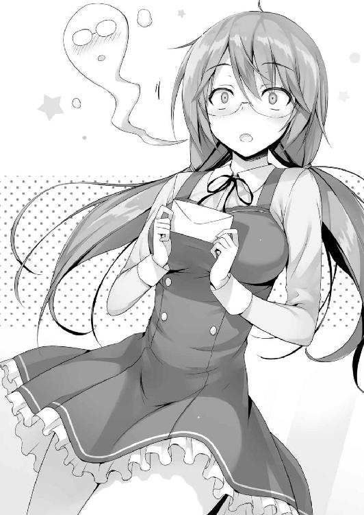
「おっと」
真後ろに倒れそうになったあぶない少女を慌てて支える。
「大丈夫か？」
手で背中に触れた限りでは相当体が火照っている様子だ。想定外だったんだろう。
それに誰から手紙を貰ったのかに頭を巡らせているのかも知れない。
「あ、あのあの！」
パチッと目を開けると凄い勢いで体を起こした。
自分の足で立っていることを確認してから手を背中から離した。
「堀北......さんとか！ 怒ったりしないのかな!?」
「え？ 堀北が？」
あいつが怒るような理由は何もないはずだ。オレが山内の代わりに手紙を届けている姿を見れば『また下らないことに巻き込まれて大変ね。はあ』と呆れた溜息をつきながら言うだろう。
少なくとも怒ったりするような話ではない。
一瞬オレが告白したと勘違いしたのかと思ったが、手紙を渡すときにはちゃんと『誰かは伏せておくが別のやつに託された』という旨は伝えた。間違いはないはずだ。
「う、うわあ......あわあ......」
でも佐倉の顔はどんどんと真っ赤になって行き、緊張のあまり気を失いそうにも見えた。
ただ手紙を受け取っただけで見せる反応には思えないのだ。
目の前にいる男が告白の手紙を渡してきた、そんなシチュエーションの最中にいるような......。そうであるなら、告白の可否にかかわらず佐倉が慌てるのも無理はない。オレだってそんな状況になったらパニックを起こしかねないしな。堀北の名前が出てきた理由もそれなら繫がる。
「佐倉。念のためもう一度言うが......その手紙は別のやつに託された、それは大丈夫だな？」
そうもう一度伝えると、佐倉がびくっと肩を震わせた。
「え───あ、綾小路くん、じゃない......？」
「さっきも言っただろ。オレは渡すように頼まれただけだって」
「......そ、そうだよね。そんなわけない、よね......で、でで、でも、これどうしよう!?」
「どうしようもなにも読んで答えを聞かせてやればいい」
オレは邪魔だろうから立ち去ろうとするが、何故か袖口を摑まれた。
「えぇー！ 無理無理！ 私そんなの......」
「今まで告白されたことはないのか？」
「ないよ！」
即答して答える佐倉。これだけ可愛ければいくらでも告白されてそうだけどな。
ただそれは今の佐倉を見ているからであって、以前の佐倉なら話は別かも知れない。
「この手紙......一緒に見て、くれないかな......」
一緒にって......そもそも中身はオレの指示した文章が書かれてあるからなぁ。
佐倉が一人で見るのに勇気が必要だと言うなら協力しなくもないが......。
そんな光景、シーンを山内はそれを望まないだろう。
「ひとまず手紙だけは一人で読んでもらえないか。それが手紙を託されたオレの責任でもある。おまえには負担をかけることになるが理解してほしい」
「うん......」
佐倉が少しも嬉しそうではなかったので、ちょっとだけフォローして置く。
「好きな人からって可能性もあるぞ」
「その可能性はもうないもん......」
「え？」
「あ、や！ その、私好きな人とかいないから！ よ、読んでみるね！」
頷いた佐倉は少しうつむき加減に頭を下げ、寮の正面へと戻って行った。
これから部屋に戻って山内がしたためた手紙を読むことだろう。
「ど、どうだった!? 感触は!? 嬉しそうな顔してた!?」
佐倉が手紙を持って寮の中に帰って行ったのを遠目に確認し終えた山内が、駆け寄ってくると緊張した面持ちで聞いて来た。色々と聞きたい気持ちは分かるが、それなら最初から自分で渡してほしいものだ。
「まだ手紙は読んでない。これからその審判が下されると思う」
「し、審判って怖い言い方すんなよ。俺は絶対大丈夫だと信じてんだから！」
「一応聞くけどその根拠は？」
「そりゃ俺と話すときの仕草を見て、かな」
「仕草？」
「こうなんつーか、恥ずかしそうに視線を逸らすんだよ。多分俺のことを意識しちゃってて目が見れないんじゃないかなー」
いや......それは単純に佐倉が人と対面するのを苦手としているからだと思うが。
「それだけじゃないんだぜ。俺と話してるときとか、その後でちょっと重そうな溜息をつくんだ。これはもう恋の溜息ってヤツ？ あるじゃん、好きな人のことを思い浮かべて『はぁ～』って溜息つくことがさ。そういう兆候みたいなのを感じるんだよ」
それは多分、テンション高く話しかけてくる山内の相手に疲れてのことだと思うが......。そんな当たり前のことさえ好きな子のことになると盲目になるのかも知れない。
２
明日の佐倉の返事を少し気にしながらも、寝る準備を進めていた夜中。携帯が一度震えた。
『起きてる？』
控えめな短めの文章。佐倉からだった。
しばらく携帯には触れず画面を見つめていたが、続きの文章が送られて来る気配はない。恐らくオレが寝ていることを想定し配慮してくれているのだろう。チャット画面を開き既読をつける。
すると暫くしてまた控えめなチャットが送られてきた。
『起こしちゃったかな......？』
『悪い、ちょっと洗いものしてた。大丈夫だ』
そう小さな噓をついて答えてやる。
すると安心したのか次はちょっと長文が返ってきた。
『明日５時に山内くんと会わなきゃいけないんだけど......その前に会えないかな......？』
そんなメッセージだった。断ることもできたが、佐倉には他に頼る相手もいない。
『どこで会う予定なんだ？』
『昨日と同じ学校の校舎裏』
知ってはいたが、その事実を確認したうえで佐倉と会う約束をした。
佐倉に手間をかけたくはないので、同じ校舎裏で待ち合わせることを取り付けた。
さて寝るか。テキパキとやることを済ませ電気を消して横になる。
と、また携帯が震えた。
『あの......ごめんね何度も。少し電話してもいいかな？』
メール文からも伝わって来る不安気な様子。このまま佐倉をおいて寝ない方がよさそうだな。こちらから電話をかけると佐倉から控えめな声がかかってきた。
「眠れないのか？」
「うん......明日のことを考えると緊張しちゃって......はぁっ」
憂鬱そうな溜息だ。電話越しにも不安が伝わって来る。告白に対する返事を考えているんだろう。
「私───山内くんのこと何も知らないんだなって......それがなんだか怖くって......」
「そうか......」
「誰かを好きになったり、嫌いになったり。それって凄く責任が伴うことなんだって気づいたの」
今まで周囲と距離を置いて気にしないようにしてきた佐倉には刺激が強すぎるイベントだろう。
でも他人が踏み込んで助けてやれる範囲は限られている。
全てを決めるのは佐倉であり、受け取るのは山内。この図式だけは崩してはいけないもの。それは恋愛初心者のオレにも分かることだ。佐倉に対して断ればいいとも、受けてやればいいともアドバイスしてやる権利はない。静かに話を聞いてやることしかできない。
「山内くんは何も悪くないのに、勝手にその......嫌だなって思っちゃって。でも私なんかのことを気にしてくれてることに申し訳なさとかも感じたりして......」
恋愛ってのはきっと難しいものなんだろうな、そう痛感させられる。
「......ずっと考えてると、どうしたらいいかわからなくなるんだよね......」
そうだろうな。電話越しでもずっと混乱していることは分かる。
「なんで私なの......って。どうしてこんな風に悩まなきゃいけないの、って考えちゃうから」
嬉しそうではなくむしろ嫌と言うか困った様子だ。
「綾小路くんは、その......あ、余計なこと聞いちゃうかもなんだけど......」
「何でも聞いてくれ。答えらえれることなら答えるぞ」
「えっと......今、誰かとお付き合いとか......されてるんですかっ？」
何故か改まって敬語で聞かれた。
「いや全く。今現在はもちろんこれまでも出来たことはないぞ」
「ほ、ほんとに!?」
「嬉しそうにされるとちょっと嫌味に聞こえるぞ」
彼女も出来た事がない男のことで喜ばれると非常に傷つく。
「わ、ちが、別に悪口のつもりはないよ！ 私と同じだから、嬉しかっただけでっ」
「からかっただけだ」
「もう......！」
ちょっとした軽いノリだったが、固かった佐倉の心がほぐれたようだ。
「じゃあその、誰かに告白されたこととか、したこととか、そういうのは？」
随分踏み込まれたな。隠すことでもないからいいけど。
「おまえと一緒だ。告白経験０」
佐倉の場合は今回のことで記念すべき１回目になってしまったが。
「そうなんだっ！」
またも嬉しそうだった。そんな感じでオレと佐倉は暫くの間くだらない話で盛り上がった。
やがて訪れた佐倉の眠気を感じ電話を切る。ゆっくり眠れるといいな。
そんな風に思いながらオレも眠りにつくことにした。
３
約束の時間は午後４時だったが、その10分前につくと既に佐倉は複雑な面持ちで待っていた。
頭の中で色々考えているんだろう、秒単位で様子が変わる。
沈んだ顔、緊張した顔、心配そうな顔。心の中は何を考えているのだろうか。
「待たせたか？」
「あっ」
声をかけると、佐倉はゆっくりと顔をあげ遠慮がちに近づいて来た。
声をかけることでちょっとでも佐倉の負担が楽になるのなら良いんだが。
「綾小路くんありがとう......来てくれて」
「お礼を言われることでもないさ。それでどうした？」
「うん......その、昨日私にくれた手紙のことなんだけどね......」
「何かあったのか？」
山内に会うオレに声をかけるってことは、思うことがあってのことだろう。
少し話すことに抵抗があるのかスムーズに言葉が出てきていない様子。
「遠慮せずに───」
そう言ってこちらから切り出させてやろうと思った時、渡り廊下に向かってくる複数の生徒の姿が見えた。ジャージ姿であることを見ると部活動関連だろうか。
「悪いけど少し歩こうか」
「え？ あ、うんっ」
今誰かに見られるのはあまり得策じゃない。人目を避けるように校舎裏の木々が生い茂る方へと歩いていく。普段立ち入ることのないその場所は人の目に触れる機会は少なそうだが、手入れは行き届いているようだった。
間違って早く待ち合わせ場所に来た山内に出くわしても面倒だ、早めに終わらせよう。そう思っていると、佐倉は不思議そうに首を傾げた後、右手を広げると空を見上げた。
「どうした───」
そう聞き返した直後に佐倉の不可解な行動の理由を知る。頰に一滴の水滴が付着したのだ。これが人工的なものでないとしたら───。
「雨、降って来たね」
空は晴れ晴れとしていたと思ったが、突如として雨が強く降り始めた。一時的なものではあるだろうが、その勢いは想像よりも遥かに強く瞬く間に私服を水浸しにしてく。
「くそ、いったん渡り廊下まで戻るぞ！」
頷く佐倉を連れ、元来た道を引き返した。雨に晒されていた時間は１分もなかったが、大雨が降ってしまったために佐倉の私服をダメにしてしまった。髪までびっしょりと濡れているのが分かる。
「ついてないな......大丈夫か、佐倉」
「わ、私は平気。綾小路くんは？」
「こっちも大丈夫だ」
どんどんと強まる雨を見ながらオレは少し溜息をついた。何とも悪いタイミングで雨が降り出したもんだ。
「これ、よかったら使って」
少し遠慮がちにハンカチを差し出してくる佐倉。そのハンカチには見覚えがあった。無人島の時に貸してもらったものと同じだ。
「オレはいいから自分で使ってくれ、風邪ひくぞ」
女の子が濡れているのに、先に拭くわけにはいかない。なのに佐倉は背伸びし、そのハンカチで塗れたオレの髪から水滴を払った。雨の匂いに乗って佐倉の香りが鼻腔をくすぐる。
「私意外と丈夫だから」
そんなことを言って髪から頰、そして首筋の雨水を拭き取ってくれた。
「............」
オレは思わず無言で隣に立つ佐倉を盗み見た。何となくだが山内の狙いが分かった気がする。今は夏休みの最中でお互いに私服だが、これが制服なら立派なシチュエーションかもしれない。
雨が降るアクシデントがあったが、それもひとつのイベントのように思えるからだ。
突然振り出した雨。２人で慌てて屋根の下に逃げ込む。
互いに止まないね......なんて話ながら段々と口数が少なくなっていくんだ。
そして視線が絡み合ったり、吐く吐息が耳に届いてきたりする。男子が妄想しがちなシーン。だけど何故か、今それが一瞬だが頭の中で見えた。
山内が求めていたもの。それと類似したような感覚だったかも知れない。
「すぐ止むかな......？」
「今携帯で調べてみたが、通り雨で間違いなさそうだな。少ししてれば止むはずだ」
「そっか......」
「って、悪いな。これから大事な用事があるのにずぶ濡れにさせてしまった」
「ううん平気。全然大事なんかじゃないから」
佐倉は大事じゃない、そんな風に言い切ってしまった。それはつまり───。
「私......どうしたらいいかな......」
「どうするもなにも、感じたままに返すだけだぞ。受け入れる、断る。あるいは友達からとかな」
歩出し方は人それぞれだ。オレが余計なことを言うものじゃない。
「もちろん返事を保留にすることもできるし、恥ずかしいならオレが答えを山内に言う」
それを山内は望まないだろうが、佐倉がそう希望するなら叶えてやらなければならないだろう。
「......ううん、私の口から伝える......多分伝えなきゃいけないよね」
「そうだな。それが山内のためでもあるはずだ」
「うん。わかった......私、断る」
山内に聞かせる前に、オレにその答えを聞かせてきた。
「そうか」
今までの流れからそうなることはほぼ１００％分かっていたことだったが。
佐倉が自分でそのことを口にしたことが大切だ。
「あー、うー、その。私に誰かのその、想いとか気持ちとかを拒絶する資格なんてないと思う。偉そうにするな、って思うかも知れないけど......でも......」
何故か佐倉は断る返事をすることに対して、強い罪悪感に襲われているようだった。
「おまえが謝ることは何もない。基本的に告白する側の一方的な想いなんだ。それに答えられるのはその相手を好きだった場合だけのはずで、そうでないなら断るのは変なことじゃない。資格がないなんてことは絶対にないぞ」
そこだけは履き違えてほしくないと思い強く伝える。
雨はもうすぐ止むと思うが、山内がいつ現れるとも限らない。
「オレは帰った方がいいよな？ とりあえず帰るわ」
まだ少々雨は強いが、帰ろうと一歩を踏みだした。
「だ、ダメっ！ 綾小路くんがいなくなっちゃったら、私何も話せなく、なるから......お願い......」
また袖を摑まれる。そして力強く握られた。
「お願い......１人にしないで」
「おまえがそれを望むなら」
そう短く答え、オレは再び屋根の下に留まることを決める。佐倉には色々と助けられているしな。
やがて15分ほどして山内がやって来る。それでも十分に早かった。
その表情は今まで見た事がないほど固い。
「な......なんでおまえがここにいるんだよ綾小路」
「悪いな。佐倉が二人きりで会う勇気がないってことで立ち合いを頼まれた。オレのことは気にしないでくれ」
そう言われても居心地は悪いだろうが山内も切り替えて行くしかない。
一瞬怪訝そうにしたが、山内は目の前の佐倉に必死に集中しようとしていた。
「お、お待たせ。手紙、読んでくれたんだ」
「うん......あの......ひとつだけ聞かせて下さい......」
「何でも聞いてくれよっ......」
スカートをぎゅっと摑み、喉から声を絞り出すように話す佐倉。
「ど、どうして、私......なの？ もっと可愛い人とか、いっぱいいるのに......」
「俺は佐倉がいいんだ！」
そう、声を上ずらせながら叫んだ。びくっと佐倉の両肩が跳ねる。
「わ、悪い。大声出すつもりはなかったんだけど......そ、それで返事は？」
不器用な告白に、不器用な回答。
他人事のように聞いているからこそ、ああ言えばいいのにこう言えばいいのにと思ってしまう。
でも当人にとっては心臓が口から飛び出るほど緊張する出来事で、思考は上手く回らない。
最善の選択を選ぶことがどうしてもできないのだ。
「ご......ごめんなさい！」
山内を前にした佐倉は、わずかに目を赤くしながらもそう言って深々と頭を下げた。
その瞬間山内の中でくすぶっていた最後の希望の光が砕けて散る。
「わ、わたし、あなたの気持ちに、その、答えて、あげられないです......」
その言葉を捻りだすのに、佐倉はどれだけの勇気を振り絞っただろうか。オレは初めて目にする『恋愛』のひとつの形を、奇しくも間近で目撃することになってしまった。きっと山内だって第三者のいるところでフラれたくなんてなかっただろう。
仕方がなかったとはいえ、複雑な想いをさせてしまったに違いない。
「そっか......」
山内は理解し、必死に事態を吞み込もうとしているようだった。
佐倉と同じように微かに声は震えていたが、その姿をオレには笑うことは出来なかった。
「ありがとな、佐倉。わざわざ、その、直接言ってくれて」
「さ、さようなら......！」
この場の重い空気に耐えられなくなった佐倉は山内に深く頭を下げ、小走りに去ってしまった。
「あぁ......」
力なく伸ばした山内の腕は佐倉には届かなかった。
初めてみる恋愛の終局にオレはどうすることも出来ず無言で立ち尽くしていた。
山内は暫く悔しさを堪えるようにしていたが、やがて顔を上げてこちらを見てきた。
お邪魔虫のように告白の場に居座っていたオレに罵声でも浴びせてくるだろうか。
それとも八つ当たりでもするだろうか。
とにかく不平不満をぶつけてくると読んでいた。
ところが───。
「は、恥ずいな。友達の前で女の子にフラれるってさ。なんか顔から火が出そうだ」
オレを責めることなく、そんな風に言った。
その顔にはフラれたショックも滲み出ていたが、それだけではなかったのだ。
「いやー、なんつーか、うん......すっきりした、かな」
どこか晴れ晴れとした様子の山内は、そう言って隣に立つオレを真っすぐ見つめた。
「なんていうか俺はバカだった。ただただ佐倉に迷惑かけたって、やっと自覚できたんだよ。好きでもない俺を傷つけないために言葉を選ぼうとしてさ。罪悪感いっぱいだった。好きになることは自由だけど、想いを伝えるには責任が生じるってことも知ったよ」
ふと山内の肩を見ると、服が濡れていることが分かった。
つまり約束の時間のずっと前から外にいたことになる。
もしかしたらこの近くでずっと告白のことを考え緊張していたのかも知れない。
「思ったより落ち込んでないんだな」
「俺、ショックはショックなんだけど、そこまでじゃないっていうか。佐倉は可愛いし彼女にしたい。そう思ってきたけどなんか違うって思った。ただ彼女の顔を見て体を見て、安直な行動に出たって言うか。本当に心の底から好きにはなれてなかったんだなって。多分本当に好きな子だったら、フラれた時ってもっとショックで、苦しくて悲しくて、悔しいんだと思う」
あえてオレは何も言わなかった。吐き出したい山内の言葉を全部静かに聞き届けた。
「だから───今日で適当な恋は卒業だ。本当に好きになれる女の子を探す、まずはそれからだな」
どうやら山内は、今回フラれて一回り大きくなったようだった。
「おまえには感謝してるよ綾小路。変なことに巻き込んで悪かったな」
「いいさ。友達......だからな」
「これ、貸してやるよ。携帯貸してくれって言ってただろ」
「いいのか？ 告白が成功したらって条件付きだったんじゃないのか」
「特別だぜ。でもすぐに返してくれよな」
山内はそう言って、佐倉が去って行った方向に同じように駆け出して行った。
気が付くと雨雲の隙間から太陽の日差しが差し込み始めていた。
○他クラスとの交流会
「今日も今日とて暑い......」
オレ自身この夏で何度口にしたか分からない。
しかし暑いものは暑いから仕方ない。言葉にすると余計に暑いが、どうしても言わざるを得ない。心の中で呟くだけでは溜まるストレスを発散しきれないからだ。
この猛暑を好き好むのはセミくらいなものだろう。
それはさておき、今回俺は非常に稀な事件に巻き込まれている。ただ事件とは言っても、恐らく事情を知れば多数の男子生徒から強い反感を買うような、そんな事件だろう。
だがその事件には厄介な問題があるのだが......。
ま、それは追々ゆっくりと語っていくこととしよう。
寮から少し離れた学校へ続く並木道を抜けた先の休憩所。今現在オレはそこにいる。ここにはいくつかのベンチと自販機が設置されていて景観も良く春先などには生徒が絶えない。休憩や雑談には最適な人気のあるスポットだ。だが今はもぬけの殻で人っ子一人いない。この暑さゆえに訪れる生徒の方が珍しいオフシーズンと言えるだろう。だからこそ内密な待ち合わせ場所としては最適なのだ。
「お待たせ」
ベンチに座っていると、待ち合わせしていた相手が寮の方角から歩いてやって来た。
日差しがきついのか手で直射日光を遮りながら、天を仰いでいる。
「暑い......」
オレと全く同じ感想を漏らしたＤクラスの生徒、軽井沢恵が隣に腰を下ろす。長いポニーテールの髪が揺れる。服装は非常にカジュアルでジーンズにシャツとシンプルだが、それでいて休日だからと手を抜いている感じは全くしない。見た目に関する全てが本人の中でコーディネートされ尽したものなのだろう。とても良く似合っている。
どれだけ暑くても女の子はお洒落優先だから大変だな。
「忙しい中悪いな。急に呼び出したりして」
「それって嫌味？ 夏休みに遊び過ぎたせいでポイントに余裕ないから最近は部屋にいるけど？」
「明日の予定もか？」
「お金がないと何もできないからね。多分寝てるんじゃない？」
実に自堕落的な夏休みを送っていたようだ。
「来月になれば沢山ポイントも振り込まれるさ。例の試験結果もあるしな」
船上で行われた試験で優待者に選ばれた軽井沢はオレとの協力関係もあり最後までそれを隠し通した。９月になればその成功報酬として軽井沢には50万ポイントが振り込まれる予定になっている。
「まぁね。だから欲しい服とかアクセの目星だけは付けといた。けどさ、振り込まれるポイントは全部使っちゃっていいわけ？ 残しておいた方がいいよね？」
「我慢できるのか？」
ちょっと意地悪に聞いてみると、頰を膨らませて軽井沢が睨みつけてきた。
「そりゃ......簡単じゃないけど。使おうと思えば１週間かかんないと思うし」
軽井沢は両手を広げ、指を折り欲しいものをぶつぶつ口にする。あっという間に両手の指は全部折れてしまう。一体どれだけどれだけ欲しいものがあるんだ。
「でもあたしだって何も考えてないわけじゃない。プライベートポイントが大きな存在だってことは分かってきてるし。学校の仕組みとしておかしいじゃん。特別試験で貰ったポイントって桁違いに多い数値でしょ。周りも結構戸惑ってるっていうか」
なるほどな。どうやら、ついに普通の生徒たちにまでその疑念が広まりだしたらしい。突然大金を持たされれば当然疑心暗鬼になる。何故学校はそんなことをするんだと。そして悟る。このポイントはおそらく私利私欲のためだけに使っていいものじゃないと。
「そうだな。生徒によっちゃ１００万２００万って金を所持することになっていくしな」
「それよ。高校生にそんなお金持たせていいわけ？ 絶対普通じゃないって」
ポイントの多くはこれからの学校生活で『生き残るため』に必要になる。軽井沢もそれに気づいたからこそ使い切っていいのかわからなくなっているのだ。例えばの話だが、自分が退学になる失態を冒したとしても、プライベートポイントさえあれば無効にできる可能性すら秘めている。
そう考えれば保険として何百万ポイント所有していても多すぎることはないだろう。
「今はまだ深く考えないでいい。先のことを見すぎて欲求を抑えるのも毒だしな。毎月入って来るポイントの１割か２割残せればそれで十分だ」
欲と節度は均衡を保っていないと心のバランスを崩してしまいがちだ。特に今まで自由にお金を使ってきた軽井沢にいきなり欲を封じ込めさせるのは良くない。そう判断した。
それに軽井沢の私生活がいきなり激変するのも周囲にどんな影響を与えるか分からない。
今まで散在してきた少女が倹約家になればクラス内からも怪しむ声が出そうだ。オレとの繫がりが出来たとしても今の段階で周囲には極力それを知られたくない。
「さて、と。ひとつおまえに頼みがあるんだが」
「......こんな暑い日に呼び出したことに対する詫びみたいなものはないわけ？」
「これでいいか？」
買ったもののまだ飲んでいなかったお茶のペットボトルを差し出す。
不本意そうではあったが渋々受け取った。
「ちょっとぬるくなってるじゃない......」
「この気温じゃ無理もないからな」
地方の酷いところじゃ今日も40度以上を記録したらしいし。数字を聞くだけで暑い。
不服そうにしながらも軽井沢は喉が渇いていたのかキャップを回す。
「む......これハズレのヤツじゃない」
「ハズレ？ お茶に当たりくじなんかついてなかったと思うけどな」
「その冗談面白くないけど？ 蓋が固いってこと」
なるほど......確かにそれは面白くない勘違いだな。
手を伸ばして一度回収すると、キャップを少し回してから軽井沢に差し返した。
「ありがと」
船での一件を経て軽井沢とオレは距離が縮まり、以前では考えられなかったが会話が生まれるようになっていた。経緯が経緯なだけにオレに対して不満や不信感も強く持っているだろうが、それを色濃く出す様子はない。
こいつは自分をコントロールすることを熟知している。自分の立場を、存在を守るためであればどんな環境にも適応できるということだ。
「明日で夏休みも最終日だ。友人の一人から夏の思い出を作りたいと提案された」
「夏休みの思い出って。この学校には花火もお祭りもないけど？」
「この学校には大きなプールがあるだろ。普段は水泳部専用として使われてる施設だが、それが今だけ解放されてるのは知ってるか？」
授業で使うプールよりも更に広く充実した設備が整えられている。それが夏休み最終日までの３日間だけ誰でも使える市民プールのような形で開放されている。初日に大勢の生徒が群となって押し寄せたことで規制が入り、急遽３日間のうち１回だけの入場にするよう制限がかかったほどだ。先ほど２日目のイベントは終了したが、今日も大賑わいだったらしい。
「あぁ......そう言えばそんなのもあったっけ。あたし泳ぐことに興味ないから」
軽井沢は学校で、水泳の授業に関しては頑なに体調不良を理由に休み続けている。ポイント制度を取り入れているため授業をサボりにくい学校だが、生徒個人の体調不良、特に女性特有の問題である不確定要素を追及することは出来ない。そのため軽井沢だけに留まらず女子は一定層が授業参加を拒否し続けている。泳ぎたくない理由は当然様々だろう。体調不良、カナヅチなのを知られないため、そもそも泳ぐのが嫌い、同性異性に素肌を見られるのが嫌。スタイルが悪いから。大半はそういった理由だ。しかし隣にいる軽井沢に限っては少しだけ事情が異なる。
プールの話題に対し思うところがあったのだろう、軽井沢は明後日の方角を向いてお茶を飲んだ。
軽井沢は以前同級生から酷い虐めを受け、脇腹付近に深い傷を負っている。その痕は今でも痛々しく残っていて、誰かに見られれば注目を浴びることは避けられない。
「泳ぐこと自体は好きなのか？」
「んー......嫌いじゃないけど。もう何年も泳いでないから泳ぎ方とか忘れたかもね」
曖昧にそう答えた。けどそれが軽井沢の本心ではないことは透けて見えてくる。
「で、そのプールで男子が思い出作りしようってこと？ それってただのエロ目的でしょ」
それは否定できない。というか動機は純度１００％その理由だろう。
「それとあたしになんの関係があるわけ？」
「その前に──ひとつ質問だ。お前が虐められていたって事実を本当に学校側は知らないのか？」
「は？」
今までらしからぬ姿でお淑やかにしていた軽井沢が露骨に怪訝な顔を見せた。こちらを向いた軽井沢が強くオレを睨みつけてくる。オレはその顔を真っすぐに見つめ返す。
「あたしがその話題を好まないこと分かってるでしょ？」
「無意味に古傷を抉ってるわけじゃない。これから話す事に関係するから聞いている」
「でも......」
軽井沢にとってもこの問題はとても大きなものなのだろう。簡単には理解を示してはくれない。だがこちらが説得を試みる前に自分自身を納得させることができたようだった。
「......わかった。あんたの言うことを信じる。きっと意味があることなんだってね」
自分の中のわだかまりを懸命に消化して飲み込んだようだ。
「あたしが虐めを受けてた事実。それを知ってるかどうかって話なら間違いなく知らないんじゃない？ あたしの不登校の時期とか中学時代の休みの多さは把握しているだろうけど、全部病欠とかサボりとか、そんな理由として認識してるんじゃない？ あぁ後は、虐めで授業どころじゃなくて頭が悪いところとかね。それでＤクラスになったんだろうし」
やや自虐を混ぜて答えた。軽井沢がＤクラスに配属された理由はおおよそ推察通りだろう。出席率の悪さと学力の低さという分かりやすい印象の悪さが響いたとみるべきだろう。こいつが傲慢な態度を取り出したのは虐めから脱却した高校生活からだ。虐められていたという理由でＤクラスに配属されるとは思えない。
「学校が調査してもおまえの虐めは判明しなかったってことだろうな」
「世の中が盛大に腐ってることくらいわかるでしょ？」
「そうだな......」
「あたしは確かに長年虐めに苦しんできた。先生や同級生に助けを求めたこともある。でも、それは自分を苦しめる結果にしかならなかった......。傷つけられる現実から助かることはなかった。それどころか虐めはどんどん悪化したし」
虐め問題の根深いところだな。次から次へと悪循環に陥ってしまう傾向が強い。
多くの人がニュースを見ていれば嫌でも痛感しているはずだ。虐めは単純な解決を計れないと。一度波が引いても、次はもっと大きな波が被害者に襲い掛かって来る。
「どれだけボロボロになっても、学校は簡単に虐めだとは認めないし助けようとはしない。精々いじめっ子に軽く注意をするくらい。そしてまた虐めは酷くなる。でしょ？」
残念な話ではあるが確かにその通りだ。 何故学校にチクったのか、どういうつもりなんだと余計に責め立てられる。もし学校が虐めを認識していたとしても世の中の大半の虐めは学校内で内密に処理され表に出ない。自らの学校に虐めがありましたなんて、そんな悪評をわざわざ広めたりはしない。虐められた子が遺書を残して自殺したとしても、頑なに事実を認めようとしない学校すらある。
だが何より辛いのは自殺しても救いがないことだ。虐めっ子は死んだ人間を侮辱し、笑い者にし、ＳＮＳに武勇伝の如く公表するケースもある。死後も虐められ続けるという恐ろしい時代だ。
「学校も虐めてきた連中も、そして虐められたあたしでさえも、誰一人虐めの事実を認めない。仲の良いクラスメイトって答える。答えるしかない。どれだけ非道な現実があったとしてもね」
そんなもんよ、と他人事のように言った。それは軽井沢にとっては変えようの無かった過去でもあり、変わらなかった過去でもあるということだ。事実、この学校は徹底して軽井沢の内情を調べただろう。しかし出て来るのは不真面目に休みをとる頭の悪い学生という評価だった。
学校全体だけじゃなく、その周囲全てが口裏を合わせたらどうにもならない。
そう考えると噓に勝る真実は無いのかも知れない。
「けどあたしは感謝してる。虐めてきたヤツらにもそれを隠蔽した学校にもね」
辛辣な過去を思い出し涙してもおかしくないものだが、軽井沢はそう言って前を向いた。
「ここの皆は誰もあたしの過去を知らない。だからこそあたしは新しい自分を手に入れることが出来た。もし虐められたままのあたしを周囲が知っていたら、きっとこうはならなかったから」
最悪の状況を自分の機転で変えた。平田という人望者に取り入るという方法で。
「軽井沢、素直に賞賛したい気持ちもあるが言っておく。これからは虐めに加担する行為は禁止だ」
「は？ あたしが誰か虐めてるっていうわけ？」
「普段から強気なのはいいが最近は佐倉への当たりが強い。あいつはお前を虐めたりするような子じゃないことは明白だ。被害者にならないためとはいえ加害者になるな」
そう言って釘を刺した。
どれだけの過去を軽井沢が持とうと、容認出来ることと出来ないことがある。
「佐倉さん、ね。あんたを慕ってるから助けてあげようってわけ？」
「理由が必要なのか？ 虐められる側の気持ちはおまえならよくわかるはずだけどな」
「あたしにとっても今の地位は生命線。不用意なことで失いたくない。佐倉さんには悪いけど弱者がいることで成り立つ強者もいるってこと。特にあたしのような偽りの強者にはね」
虐められるくらいなら虐めてやる、そういう覚悟が僅かにだが見て取れた。
「佐倉のためだ。あいつには何度か世話になっているからな」
「......ふぅん。素直に認めるんだ」
不服、不満、そんな類の目じゃなかった。軽井沢はただ疑問を呈するような目をしていた。
「言葉に重みを感じられないけど......わかった。今度から気をつける。それでいい？」
「聞き分けが良くて助かる。おまえはもう平田を使って十分に今の強者の地位を確立できた。立場が危うくなることはないはずだ」
「確かにあたし自身ちょっとやり過ぎて加害者になっちゃってたかもね」
そこまで自分のことを客観的に見れるのなら何の心配もいらないな。
「でも、もしあたしの立場が危うくなったら......」
「その時はオレが全面的にバックアップする。必要なら平田でも茶柱先生でも味方につけてお前の敵を排除する。それは約束しよう」
「ん......なら、約束する」
元々本質的に軽井沢は暴力的、威圧的な手段をとる子ではない。本人も言ったが、自らを守るためにそういう自分を演じていただけにすぎない。普通、長年虐めを受けていた人間は簡単に社交的になれないがこいつはそれを苦にしない強心臓の持ち主だ。それはオレの脅しに屈しなかった時に確信した。
「なーんでだろ......」
「なにがだ？」
「いや、さ。あたし過去の話なんて思い出したくもないし、誰かに聞かせるなんて絶対にないと思ってた。なのにあんたに話しちゃってる。しかも意外と平気なのが不思議でさ」
それがどうしてなのか自分でもわからないらしい。もちろんオレにも理由は分からない。
「あたしからも少し聞いていい？ あんたって今が素なのよね？」
クラスで唯一オレの二面性を見ている軽井沢は、少し警戒しながらそう聞いてきた。しかし質問内容は意外と考えさせられるもので、つい腕を組んで答え方を悩んでしまう。
「いつも素ではいるんだけどな」
「全然違うじゃん」
そうなのだ。つまり厳密には素ではない。性格を偽ってるとか、そんなのとは少し違う。
「参考までに聞きたいんだが、いつものオレと今のオレは何が具体的に違うんだ？」
「いつものあんたは根暗っていうか暗い喋らないヤツ。でも今は積極的っていうかハキハキしてる。真逆だから余計に際立って見えるっていうか。口調も違うし。一体どういうつもりなわけ？」
「どういうもなにも......単純に周りに人がいるかどうか、の違いじゃないか？」
一番近い答えを模索するとそうなる。だがしっくりは来ない。
オレという個体、人間は正直言って『生まれたばかり』だ。この学校に入学した瞬間に形成されたものであって、まだ液状。固形化するには時間がかかる。
特に人との接し方、口調なんかは何が正しいのかまだ分かっていないのだ。
「とにかくオレはいつもオレでいるつもりだ」
「全然そう見えないから聞いたんだけど」
軽井沢はジーッと目を細め不満そうに唇を尖らせて言った。
「今は先に話を進めよう。オレという人間はおまえがこれから見て判断していけばいい」
「なんかはぐらかされた気がするけど......プールの話、続き聞かせて」
「明日オレを始め、池、山内、須藤の４人と、堀北、佐倉、櫛田と出かける約束がある」
「また歪な組み合わせ。特に堀北さんと佐倉さんが浮いてる。あんたがいるからなんだろうけどよく承諾したっていうか。視姦されまくるでしょ。ご愁傷さま」
女性陣は普通に誘えば絶対に来ないことは目に見えているからな。そのあたりは非常に面倒な要素だったが。軽井沢が違和感を感じるのもよくわかる。
「ともかく、プールに行ってそのグループに合流してほしい」
「は!? それ、マジで言ってるわけ!?」
普段このグループとは接点がない......いや、どちらかと言えば関係の悪い状態にある軽井沢が参加するのは不自然だ。
「水着は寮から服の下に着て行けばいい。多少嫌だろうが、帰りも同じようにしていけば問題ない」
「いやいや、そういう問題じゃなくって。物凄く嫌なんだけど？」
「気持ちは汲んでもいいが、結局拒否権はないんだけどな」
「うわ......さいてー」
「どう言われても確定の話だ。おまえには指示通り動いてもらうからな」
そう言ってオレは手書きしたメモを強引に手渡す。
「せめてもの配慮はしてある」
「何よ、せめてもの配慮って。バリバリ一日拘束なんだけど？ 夏休み最終日にっ」
「どうせ部屋で寝て終わる予定だったんだろ？ 特に問題ないな」
本人の口からそう言っていたのだから否定のしようがない。
「グループに合流はしてほしいが、参加しろと言うわけじゃない」
意味が分からないと言った様子でメモを詳しく読む。
「合流と参加の何が違うって......？」
「それは───」
オレは軽井沢に、何故軽井沢を招集するのかの理由を事細かに説明していくことにした。
話を聞き終えた軽井沢は軽く頭痛を覚えたのか、頭を抱える。
「どうした。頭が痛くなったか？」
「そりゃ頭も痛くなるし。だってあいつら......いい、なんでもない。聞いたって意味ないし」
それを耳にすることすら記憶の無駄遣いだと言いたげだ。
「堀北さんにお願いすればいいじゃん。仲いいんでしょ？」
「あいつには頼めない。オレが裏でこうやって動いてることをあいつは知らないからな」
「え？ なんでよ」
当然の疑問だが、その疑問を解消するのは少し難しい。適当にはぐらかして誤魔化すのが正解なのは分かりきっているが、オレは軽井沢に対してはもう少し踏み込むことを決める。
「船でオレがおまえに接触したことも、今回のことも全部独断だ。それを話さない理由は、オレにはまだあいつが信用できないところがあるからだ」
偽りなく全てを正直に話した。
「あれだけ一緒にいるのに信用してないとか変な話」
「あいつはオレの隠れ蓑として優秀だからな。勝手に目立ってくれる」
「じゃあ利用してるだけってこと？」
「適切な表現ではないが、この場では適切な表現かもな」
「ん？ よくわかんないんだけど......。たまに微妙なニュアンス挟むのやめてよ」
イーっと白い歯を見せて抗議してきた。
「......けど企みは上手くいってるってことよね。あたしも今まで堀北さんが全部考えて行動してると思ってたし。ってかマジでアンタ何者？」
軽井沢の中でオレの存在は不可思議に見えていることだろう。
「ま、いっか。あたしが堀北さんより信用されてるってことは悪い話じゃないし」
そう。そういう意味では間違ってはいない。軽井沢が堀北に勝っている部分を持っているからこそ、堀北に話していないことを軽井沢には伝えている。
「大人しく従って実行すればいいんでしょ」
「よし。そうと決まれば今からこの件で少し付き合ってもらいたいんだがいいか？ 予め下準備をしておかないと対応できないだろうしな」
「どうせ拒否権はないし、了解」
早く済ませてよ、と軽井沢が立ち上がりパンパンとお尻の汚れを払った。
こっちとしても貴重な時間を無駄にはしたくない、軽井沢と一緒にプール施設へと向かった。
１
そんな軽井沢とのやり取りから遡ること１日前の夜のこと。
残り僅かな夏休みを寮の自室で満喫していると、いつものように３バカ代表？である池からグループチャットが入った。
『夏休みが青春の一つもなしに、このまま終わってもいいのだろうか？』
ちょっと深そうで、それでいて何にも考えてなさそうな突然の一言。
まだ誰もその一言に返事をする前に更に池は続けた。
『一年の貴重な夏休みが、青春もなしにこんな形で終わってもいいのだろうか？』
もう一度。少しだけ文章が変わって届いた。
『いいや、よくない』
やがてその文章に呼応し、賛同するように山内が続く。
失恋を経験したばかりの男にとっては、新しい青春は必要不可欠なのだろう。
『俺もだ。俺も青春が欲しい』
そして更に呼応するように須藤。部活は充実していても恋愛はしたいのだ。
『なら立ち上がるべきだ。待ってたって青春は来ない。今こそ肉食系男子になるべき時が来た！』
青春を追い求めるのは結構だが、どうやって青春を得ようと言うのか。
『何か良い手でもあるのかよ』
誰かがそんな風に聞いてくるのを待っていたのだろう。直後に長文が送られてくる。
『もちろん俺に考えがあるぜ！ 今期間限定でプールが公開されてるだろ？ あれにとびきりの女子連中を誘って泳ぎに行くんだよ！ 俺の桔梗ちゃんだろ？ 春樹の佐倉だろ？ 健の堀北も！』
山内が蒸し返されたくない傷を掘り返されつつ、そうそうたるクラスの女子たちの名前が上がる。
『そりゃお前、鈴音が行くなら行きたいけどよ。あいつが来ると思うか？』
『それは綾小路大先生がなんとかしてくれる！ だよな？』
できらぁ！ とは簡単には言えない。
『なんとかしてくれるよな？ おまえは俺の友達だよな？』
須藤のスタンプ無しの脅迫じみた一文。こんな時にだけ友達を都合よく使い分けてくれる。
『やるだけはやってみる。過度な期待はなしだ』
それだけ答えチャットを一時中断し、堀北の方に軽く電話してみる。素直に須藤の頼みに応じたのは オレとしても堀北を誘ってやりたいと思った部分があったからだ。
今は特にクラス内で堀北の評価が上がり始めているだけに効果も期待できるだろうしな。
「何か用かしら」
「用がなきゃ電話しちゃダメだったか？」
「切るわよ？」
「待て待て用件はある。実は仲間内から明日プールに行こうって話が出てるんだ。それで毎日部屋の中で読書漬けの堀北にも声をかけてやろうと思ってな」
「仲間内ってあのずっこけ３人組でしょう？ 彼らと行動を共にする気にはなれないわね」
また懐かしい名前を......。
「お断りするわ」
「もしオレと二人きりだったら来てくれたのか？」
「同じようにお断りするわね」
ですよねー。
だが、今回に限ってはオレにも少しだけ秘策がある。
「水筒」
その単語に、電話の向こうにいる堀北の態度、空気が変わるのを感じた。
「なんか、水筒って単語が頭に引っかかるんだよな」
「......なんのこと？」
大人しく従えばいいのに、堀北は抵抗しようと知らぬ存ぜぬで通そうとする。
「腕が水筒に、とか何かそういう。な？」
「あなたの性格が滲み出て来るような嫌な話し方ね」
オレが言うことを理解させられた堀北は、非常に不満そうだった。
「なら素直になってくれると嬉しいんだけどな」
「明日は何時にどうすればいいの？」
堀北にも守らなければならないものはある。あの水筒事件のことを絶対に知られたくないはずだ。そのためなら行きたくもないプールにも参加するだろうと踏んでいた。
「朝８時半にロビー集合だ。夕方には解散予定になってる」
「わかったわ。ただし次回以降同じネタで強請って来た場合には許さないから」
「お、おう」
二度三度とこのネタで堀北を揺さぶる気はオレにもない。今回は脅迫というより水筒事件で助けたお礼をしてくれって感じの意味合いが大きい。それは堀北も分かっているだろう。
『堀北を誘ったぞ』
『よくやった綾小路。コンクリでのジャーマンスープレックスは回避だ』
......どうやらオレは命を失う危機にあったらしい。
『俺のために佐倉は誘ったのかよー！ 頼むぞ綾小路！』
先日フラれたばかりのはずが、山内からそんなグループチャットが飛んできた。
直後、１対１のチャットの方にも山内からメッセージが届く。
『俺がフラれたことは伏せておきたい！ 助けてくれ！』
という裏の声が書かれた悲しいメッセージが。表向きはまだ佐倉ラブでいたいらしい。
もちろん佐倉が参加すれば男子連中が盛り上がることこの上ないだろう。しかし簡単に参加してくれるような子ではないはずだ。佐倉は真面目な子だが、軽井沢たち一部の連中と同じくプールの授業には常に参加していない。人一倍発育した胸は同性のみならず強く異性の目を引きつける。
更に告白され断ったばかりの相手が一緒にいるのも辛いはず。
彼女が参加を望むかどうかは別として、声くらいはかけてやりたいところだ。
２
そしてあっという間に約束の日がやって来る。夏休み最後のイベントの始まりだ。
約束の時間である８時30分。ロビーに降りてくると既にメンバーの殆どが揃っていた。
「ギリギリね」
「まだ約束の時間まで......10秒くらいあっただろ」
「エレベーターの混雑具合じゃ遅刻していたってことね」
遅刻したわけじゃないのにチクチクと堀北にいじられる。強引に誘った反動みたいなものだろうし、それに加えて、多分こいつは場の空気を面倒に感じているはずだ。八つ当たりしたくなる気持ちも分かる。櫛田に佐倉、池と山内ではろくに話す相手がいないから無理もない。
「お、おはよう綾小路くん」
「おはよう佐倉」
やや怯えながら顔を覗かせた佐倉が挨拶をかけてくれる。山内はそんな佐倉を意識しないようにしているが、それでも無意識に気にしている様子。佐倉もどこか落ち着かないようだった。
参考までに覚えておこう、告白したりされると嬉しいことだけじゃなく、後で付きまとう面倒なものもあると。
「須藤は？」
「彼のことだから寝坊じゃないかしら」
集合時刻が過ぎるが須藤がやって来る気配はない。昨日まで部活に一生懸命だったらしいから疲れも溜まっていたのだろう。誰も須藤に連絡しようとしないのでオレが動く。
「ダメだ電話は繫がらない」
電話してみるが、呼び出しのコールが鳴り続ける一方で留守電にも繫がらない。通話を切り周囲に伝える。
「何やってんだよ須藤のヤツ。もう８時30分だぞっ！ 早くしないと一番乗りできないぜ！」
苛立つ池が、貧乏ゆすりをしながらエレベーターを見た。だがまだ動き出す気配はない。
「よ、よし俺が起こしてくるよ」
佐倉との間に妙な沈黙が流れていて居心地の悪かった山内が、そう言ってエレベーターに乗り込んで行った。その途端目に見えない重い空気が薄れていくのを感じた。
「彼何かあったの？」
山内の変化は堀北も感じていたようで小声で聞いて来た。オレはどう答えたものかと後頭部を搔く。
「色々とな」
結局話すのはやめた。山内も佐倉も話が広がるのは嬉しくないだろう。
「あれれー？ 堀北さんたちじゃない、おっはよー」
ロビーで須藤の到着を待っていると、一之瀬とその友達の女の子３人が降りてきた。手には見慣れないカラフルなビニール鞄にバスタオルが顔を覗かせていた。
「もしかして君たちもプールに？」
「そういうことだな」
プール遊びは夏休み最後の目玉だ、目的が被ってもおかしくはない。
「せっかくだから一緒に遊ぼうよ。どうかな？」
「もちろん歓迎だぜ!!」
池が飛び上がるようにソファーから立ち上がり歓迎する。堀北も今回は特に口を挟むつもりはないのか何も言うことはなかった。
「ただ悪いな、一人寝坊で降りてくるの待ちだ。今友達が迎えに行ってる」
「りょーかいっ」
３
くわっ、とワニのように大きな口を開けながら、寝癖のついた髪をかき毟る須藤。
「悪ぃな寝坊して。部活の疲れが溜まってたみたいでよ」
「私に言わないで」
須藤は寝坊の謝罪を堀北の隣でするが鬱陶しそうに扱われている。まだまだ二人の距離が詰まる気配はない。一方で飛び入り参加となった一之瀬のグループは櫛田が中心となって相手をしていた。
「ねえ綾小路くん」
堀北は須藤を一枚挟んだ横にいるオレに声をかけてきた。須藤はつまらなそうに一睨みしてくる。
「少し様子がおかしいと思わない？」
「なにが」
「私の知る池くんや山内くんは、こんな時誰よりも調子に乗る人じゃない？」
その鋭い切り口に須藤も一瞬硬直する。間にいるためその姿を堀北は見逃さなかった。
「何か思い当たることがあるのかしら須藤くん？」
「別にねえよ......」
そう須藤は誤魔化したが、堀北は不信感を無くすどころか警戒心を強めたようだ。池と山内は二人肩を寄せ合い強張った表情で歩いている。
「私には何か怪しい狙いがあるようにしか思えないけれど......」
それに......と堀北は池の持つ鞄にも着目した。
「タオルと水着くらいしか持って行くものはなさそうなのに、随分と重たそうね」
池が持つ鞄はオレを含め他の男子よりも重量があるように見えたようだ。
「そうか？ 俺にはそうは見えねーけどな......」
「見えない？ あの状態を見て？」
荷物が揺れる幅や肘の伸び具合に疑問を感じる堀北には根拠がある。
「プールに行ってからはしゃぐつもりなんじゃないか？ そのための道具が入ってるとか」
須藤をフォローするようにオレが言う。その助け船に須藤はすぐに乗っかって来た。
「お、おう。そうだと思うぜ」
「そう......。確かにそうかも知れないわね」
日々の観測で３バカが女好きという部分は露呈しきってしまっている。
やけに大人しい３人に違和感を覚えるのも無理はない。
だがこれには深いワケがあった。今この３人は極度の緊張感に襲われている。
それは美少女たちに囲まれているからでも、これから水着姿を見れるからでもない。
ここは話題を変えることで誤魔化すことにしよう。
「須藤」
「な、なんだ」
「部活の成果というか、ポイントの実入りはあったのか？」
「あ？ あぁ、大会での貢献度っつーことで少しだけな。つっても３０００ポイントくらいだ」
誇ることでもねえよ、と謙遜していたがその話を聞いていた堀北は素直に感心する。
「個人的な活躍でプライベートポイントを得たのね」
「......おう。ただ２年や３年の先輩には数万ポイント貰ってる連中もチラホラいたからまだ調子に乗れねーよ。活躍が大きければクラスポイントにも影響するしな。２学期以降もっと活躍するつもりだぜ」
ガッと腕を片手でガッツポーズを作る須藤。
堀北は自分にできないことを成し遂げている須藤に対して素直に敬意を払った。
「あなたがクラスに大きく貢献する日も近いかも知れないわね」
事実オレもそんな予感がしている。何事もなければ須藤はクラスにとってプラスになる存在だと。
とは言えその反面危惧する要素もないわけじゃない。それは須藤が敵を作りやすいことだ。その点は同じ傾向を持つ堀北と一緒に見守って行く必要があるだろう。
学校の傍に併設された水泳部専用である『特別水泳施設』へと足を運ぶ。
このエリアに関しては特別に制服を着用しなくても入れるように配慮されていた。最終日ともあって大盛況の様だ。プールへの入場開始前にもかかわらず既に大勢の生徒で賑わっていた。だがさすがは未来型の新設校、更衣室も各学年別に用意されている。普段足を踏み入れないエリアだが、親切な案内板に従って迷わず中へ入ることができた。
「それじゃみんな20分後にこの場所で集合ってことで」
プールへと続く廊下を指差し一之瀬が言った。まとめ役がいると非常に助かる。
「はあ、はぁっ」
女子たちがいなくなると同時に池は興奮した様子で息を荒げ、早歩きで駆け出した。
高ぶる気持ちは分かるが今ここでその状態になるのはよろしくない。
一番に更衣室に辿り着く。オレはポンと池の背中を叩いて更衣室に入るよう催促した。
更衣室に入るなり池と山内は一目散に一番奥のロッカー前を陣取る。
「な、なぁみんな。俺たちにとって今日という日は特別な日になる。そんな予感がしないかっ!?」
「ああ。俺たちはクラスの、そしてこの学校の誰よりも先に進むんだっ！」
池と山内は耳打ちレベルを通り越して人の目を集めそうな大声で話し合う。
その様子を見かねた須藤が二人の首に左右の手でロックをかける。
「ぐぇ！ なにすんだよ健！」
「おまえら騒ぎすぎだ。逸る気持ちはわかっけど目立つと危ないだろ」
「......そ、そうだよな。悪い悪い。あでっ！」
教訓とばかりに須藤は二人の額と額をぶつけ合わせた。多少強引だが悪くない方法だ。
「意外に落ち着いてるんだな須藤は」
「元々そこまで期待してねーしな。それに嬉しさとそうじゃない気持ちも半々だ。冷静に考えてみりゃ鈴音が悲しむことになるわけだろ。無防備な鈴音をあいつらに見られるのも嫌だしよ。男なら自力で女を落としてこそだ」
その心意気は正しい。出来れば二人にも見習ってもらいトコロだが、池と山内にとっては今は目先の性欲なんだろう。
オレは携帯をチェックする。すると軽井沢から今更衣室に入ったとの連絡が来た。
「誰からだよー」
額を赤くした池が怪しむような目で携帯を覗き込んで来たのでさっと伏せる。
「さては女だな？」
「オレがモテるように見えるか？」
「......それもそうだな。よっしゃ着替えようぜ！ タオル広げて広げて!!」
ちょっとくらいは肯定して欲しいものだと思ったが、心の中に仕舞っておこう。
結局幸運が訪れるか否かは池たちにとっても賭けでしかないのだ。
４
「もう完全に娯楽施設だな......」
普段は部活動、それも本格的な練習で使用される大型のプール施設が、今日ばかりはまるで様相を違えていた。大勢の生徒で賑わっているのも当然ながら売店までもが手広く展開されている。出店の定番と思われる軽食、つまりジャンクなものが多い。ホットドッグ、焼きそば、お好み焼きなど。
それ自体も驚きなのだが、不思議なことに運営しているのが上級生らしき生徒たちなのだ。笑顔なく懸命に働く生徒から楽しそうに働く生徒まで千差万別。まるで特別試験を見ている様だ。
「どういう仕組みなんだろうな」
それは分からないが、とにかく総じてお祭りムードであることだけは確かなようだ。ぼーっと女子たちの来訪を待っていると周囲の空気が一変するのが分かった。
人が肯定的な注目を浴びるためには基本的には努力が必要である。
分かりやすく言えば勉強。主席を取ったり模試で１位を取れば周囲の人間は注目する。スポーツで目覚ましい活躍を見せてもまた注目を浴びることだろう。
だが例外もある。その一つが飛び抜けた容姿だ。イケメンでも美女でも構わないが、その類の人間は前に挙げたものよりも注目を浴びやすい。もちろん外見に気を遣う努力をしていないとは言わないが、やはり特別な要素であることは否定できないだろう。
オレは他校のことを知っているわけじゃないが、少なくともこの学校の容姿レベルは高いと断言できる。自分達と共に行動しているグループのメンバーもさることながら、周囲の見知らぬ生徒まで明らかにビジュアル的にハイレベルな生徒が多いのだ。
もちろんピンキリであることも否定できないが普通ここまで粒は揃わない。池たちが日々興奮して熱を上げるのも当然といえば当然か。
そしてその優れた容姿に付け加え内面まで完璧だったらどうだろうか。可愛く人当たり抜群でスタイルも勉学も申し分ない。そんな女子には誰もが視線を奪われてしまうだろう。
騒がしさに包まれる施設の廊下にいた男子たちが、ほぼ一斉に一か所へと視線を向けた。
「やー、これはこれは凄い人だかりだねー」
その視線に気づくこともなく、注目を浴びながら待ち合わせ場所へと一之瀬が姿を現した。
「よう......」
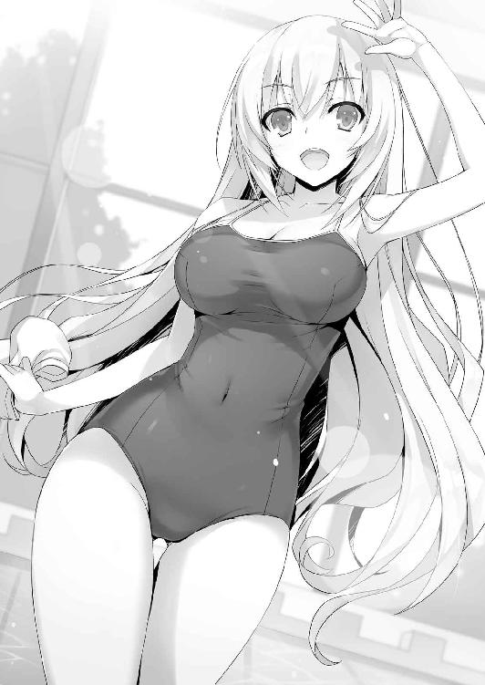
どこに視線を向けていいかわからず、オレは壁の方を向きながら軽く手を挙げて答えた。
「他の子たちは？ 男子ってもっと早いと思ってたよ」
「まだ着替えてる」
あいつらはちょっと諸事情があって遅れているとも言うが。
「にしても着替えるの早いんだな」
オレとそれほど変わらなかったことを考えると中々のものだ。
「にゃはは、着替える速度には自信があるんだよね」
自慢するようなことじゃないことをちょっと誇らしげに答える。こんな無邪気なところも一之瀬の人気の秘訣だったりするのかも知れないな。
「おぉ？ 綾小路くんラッシュガード買ったんだ」
「男のくせにって思うかも知れないが、人前で肌を晒すのは好きじゃない。授業じゃない時は使っても構わないって聞いたから思い切って買ってみた」
「そっかそっか。それもいいと思うよ。違反ってわけじゃないしさ」
多い方ではないが、施設内ではオレのように男子でも上着を着ている生徒は存在する。
ふとこちらに注目した一之瀬は、人差し指をピンと立ててオレの上着越しに腹をつついて来た。
「結構固いし。それにこう無駄に筋肉を付けてない細身の理想的肉質っていうか」
ツンツンツンツンと遠慮なく触り、二の腕やら肩やらにまでそのアクションが繰り返される。上着を買うだけの臨時収入があったのが幸いした。葛城に感謝しておく。
「運動はしてたの？」
「してない。上着の素材か単純にオレの肉が固いんだろうな。日ごろの運動不足のせいで」
「ふーん......」
一之瀬は視線をオレの足元に落としていたが、すぐに質問は止んだ。
それにしても間近で一之瀬に接せられると、その凶悪───いや、大きな胸に意識が行く。こんな状態で水泳やら徒競走をやったら、一体どうなってしまうのか。
そもそもまともに動けるのかも怪しい。
「......にしてもあいつら遅いな。ちょっと様子を見てくる」
何をしているかもどうして遅れているのかもわかっているが、水着の一之瀬と二人でいる状態に耐えられなくなったオレは踵を返すように男子更衣室へと戻った。
それから暫く池たちと一緒にいた後、準備が整ったところで全員一緒に廊下へ再び向かう。流石に時間が経っていたためか、堀北を始め女子全員が揃っていた。
「うひょう......！」
必死に声を殺した池は目の前にした女子たちの絶景を前に声を漏らす。佐倉に関しては奥の方で小さく縮こまり、当然のごとくラッシュガードを着て胸を隠していた。
それでも普段は見せない水着姿に全員興奮を隠し切れない様子だ。
「ふふふ。俺には見えるぜ。あの薄い水着の下のおっぱいが、あそこが！」
まるで透視でもしているようないやらしい目で女子を見る池と山内。ほんと人生楽しそうだな。
「それじゃ行こっか。とりあえず奥の方が空いてそうだし」
まずは休憩できる拠点の確保に動く。ここでも先導するように一之瀬が歩き出した。そして一之瀬に合わせて櫛田も。すると真後ろを男子たちが陣取る。どうやら目当てはプリプリと揺れる一之瀬と櫛田のお尻のようだ。その中でも須藤は堀北の隣からは動こうとしない。この辺りは一途でしっかりとしている。意外とお似合いなカップルになりそうなものだ。
片やオレは定番になりつつある佐倉の隣で進んだ。
「あの......ありがとう......」
二人きりになるなり佐倉は小さくだがお礼を言った。
その姿にオレは疑問を抱かずにはいられなかった。
「なんでお礼？」
「なんで、って？」
佐倉はそれに対して不思議そうに聞き返してきた。
そしてオレが思い当たる理由がないと感じていることに気付く。
「えとその、今日誘ってくれたから......」
「なんだそんなことか。別に普通のことだろ友達なんだから」
佐倉相手にはすんなりと出て来る『友達』という言葉。
それを聞いて子犬のように目を輝かせ佐倉は嬉しそうにオレを見上げた。
「だからお礼を言うようなことじゃない」
そう改めて言い直したが、佐倉はそうは感じなかったようだ。
「やっぱりありがとうだよ」
「いや......まあいいか」
オレの頭の上にはてなマークが浮かんでいるが自己完結させてもらおう。多分こいつはこういう奴だ。だからオレも一緒にいて落ち着くし嫌な気がしないのだろう。
にしても本当に佐倉は前向きになったものだ。初めて出会った頃とは見違えるほど成長している。同級生に告白を受けながらも、逃げ出すことなくきちんと受け止めていた。日々成長していく彼女を見ていると、自分もまた変われるんじゃないかと思えてくる。
「私最近気づいたんだけどね、前に体育の時間に先生が水泳は必ず後で役に立つって話してたのは無人島の試験に関係していたんだね」
目を爛々とさせて教えてくれた佐倉に対して、下手に気落ちさせる必要はないだろう。
「なるほど、な。言われてみれば確かに」
「やっぱりそうだよね！」
自分の気付きが嬉しかったのか佐倉は無邪気に小さく跳ねた。ラッシュガード越しにもその大きな胸が揺れたのが分かる。これは上着脱げないよな、と大きければ良いものではない女子事情に少しだけ同情した。ともかく話をする度に佐倉の新しい一面を発見できるのは嬉しい。
けど、佐倉はすぐに申し訳ないような表情を作った。
「もし私が恥ずかしがらずに授業にちゃんと出てたら、もっと役に立てたのかな......。体調不良を言い訳にして逃げてただけだから......」
「その気づきまで出来てるなら、十分なんじゃないか」
今までは自分都合だけで生きてきた生徒たちが、少しずつだがそれではいけないことに気が付き始めている。人は一人では生きていけない。山に籠って仙人のような真似ごとでもしない限り、生きていくには集団生活をしなければならないのだ。大半の中高生はそのことに気付いてもいない。いつも一人でインターネットやソーシャルゲームに熱中する孤独な者。あるいは大勢に迷惑をかけ軽犯罪から重犯罪まで犯す不良たち。自分が如何に周囲の人間に助けられ協力してもらっているかに気付いていない。場合によっては一生気が付かないまま過ごす者もいるだろう。
だがこの学校は違う。やり方は特異だが生徒に個とは何かを教えようとしている気がする。事実、今隣にいる佐倉は気が付き始めている。自分にもクラスの為に何かが出来たのではないかと。それはやがて大きな財産になるだろう。
「あれ一之瀬たちじゃん。そっちも今日来たんだ」
スペースを探して歩いていると、一之瀬が３人の男子生徒に声をかけられた。そのうちの一人にはオレも見覚えがありこちらの存在に気付くと軽く頷いた。Ｂクラスの神崎だ。
「やっほー。柴田くんたちじゃない」
柴田と呼ばれた男子が手を挙げる。Ｄクラスであるオレたちにも笑顔で答えた。
「なんか楽しそうな集まりだな、俺たちも混ぜてくれよ」
「私は全然オッケーなんだけど......いいのかな？」
櫛田はもちろん問題ないと頷く。そうすると池たちの拒否権も自動的に消滅してしまう。結局Ｂクラスの生徒を３人加えて合計13人の大所帯となった。
「邪魔して悪いな」
オレがあまり大勢と騒ぐタイプじゃないことを理解している神崎が近づいて来てそう言った。それを見てスッと佐倉が一歩下がる。神崎も気づかないような見事な気配消し。
「まぁいいんじゃないか。夏休みも最後だし」
「この学校は他クラスの生徒と仲良くなる機会が少ないからな。柴田たちも嬉しそうだ」
「おまえはそうでもないんだな」
神崎はいつもと変わらず落ち着いているというか、距離を置いて接している気がした。
「似たようなものだ綾小路と。騒がしいのは得意じゃない」
神崎と些細な話をしながら歩いていると前方の方で歓声が上がった。
「何か向こうで騒いでるな」
須藤がそう言う。顔をあげてみると、その騒ぎの中心からパシャン！と水しぶきが上がった。それと同時に人間と一個のボールが空中で舞う。強烈に叩きつけるスパイクが相手コートの水中に叩きつけられた。どうやらプールでバレーをしているようだ。
「うおお！ すげえ！ なんかレベル高くね!?」
山内がその光景を目の当たりにして叫ぶ。大きな施設内には３つのプールが用意されており様々な遊びに向けて用途別に使われていた。
１つは好きに入り泳げるスタンダードなもの、１つは流れるプールのようなもの、そして最後は娯楽をメインとしたスポーツ用。そのスポーツ用のプールでは今、大勢の女性ギャラリーに囲まれ激しいバレーが行われていた。
見たことない生徒たちだ。若干大人びて見えることからも恐らく２年か３年が大半なのだろう。男女入り混じってレベルの高いプレーを繰り広げている。
その中でも特に、一人異彩を放っている男子生徒がいた。
「あいつすげぇな......」
須藤が関心を示したのは、まさにその異彩を放つ生徒だ。スラリとした体系は一見華奢だがボディには薄くシックスパックが浮かんでいる。だが何より目立つのは激しく動くたびに流れる金髪と整いすぎた顔立ち。まるで映画のスクリーンを観ている錯覚を覚えるほどの美少年だ。
どうやら大半の女子生徒はあの美少年に目を奪われているらしい。
「ケッ、俺はああいう奴が一番嫌いなんだよな。大した才能も努力もしてないくせに、ただ顔がいいだけで勝ち組なんてよ」
毒づく池たちの気持ちも分からなくはないが、その予想はあっさりと裏切られる。
注目を浴びる美少年。その横顔から見える鋭い眼光が真上へと鮮やかに流れる。
その美少年の自陣内で打ち上げられた丁寧なトスに合わせ高く舞い上がったからだ。ギャラリーの殆どがその瞬間に声をあげることも忘れ息を吞んで見守った。
鋭角に高速で弾丸、いやボールが敵陣を襲う。それを拾いにかかった生徒もまた優れた身体能力をしているのだろう、機敏な反応を見せボールを弾くべく飛び込む。
ワッ！と一斉に上がる悲鳴と共にまたも美少年サイドの得点が増えた。誰の目にも明らかに、その美少年の優れた運動神経が見て取れた。下半身が発達しているところを見ると足を使うスポーツでもしているのだろうか、陸上部？ 野球やサッカーなども考えられる。
「い、イケメンで頭が良くてスポーツも出来るとか......誰得!?」
「相当盛り上がってるようね。彼一人であの場を支配してる」
「そうみたいだな。どこの誰かは知らないが」
オレも堀北も他所のクラス、学年事情にはとことん弱いからな。こういう時は誰よりも広いネットワークを持っている櫛田に意見を伺うのがベストだ。すぐに答えが返ってきた。
「あの人は２年Ａ組の南雲先輩。女の子に凄い人気があるんだよ」
「南雲......」
つい最近その名前には聞き覚えがあった。一之瀬が南雲について補足する。
「現副会長。そして来年生徒会長になるって言われてる人だよ。頭も凄くいいみたい」
傍で話が聞こえていた一之瀬が南雲の名前に反応してそう答えた。更にその一之瀬が発した『生徒会』というキーワードに隣に居た堀北の肩が僅かにだが反応する。
南雲と呼ばれた生徒が動き、活躍を見せるたびに黄色い歓声が上がる。プール内では同時に他の試合も行われていたが、殆どのギャラリーは南雲以外に見向きもしていない。
「女子に人気のわりに私は今まで知らなかったわ。それに綾小路くんもね。確かに運動神経は非凡なるものを感じるけれど、知名度からして凄いとは思えない。それこそ生徒会長の方が圧倒的に抜けているんじゃないかしら」
よくもまぁ堂々と言ったもんだ。実の兄であることを伏せさりげなく持ち上げる。その部分に関しては一之瀬も異論が無いのか素直に認めた。
「まー生徒会長が凄すぎるってのはあるしねー。この学校の歴史でも今の生徒会長が一番優秀だなんて話も聞くくらいだし。そいえば堀北さんと同じ苗字だっけ」
「そうみたいね」
この場では特に答えるつもりはないのか、それとなく聞き流す堀北。
「けど、その生徒会長にも実力では負けてないって噂だよ。実際去年の生徒会戦じゃ堀北会長と南雲副会長とで、生徒会長の座を競い合ったって話。南雲副会長は当時１年生だったのにね」
「やけに生徒会事情に詳しいのね」
「私生徒会に入ったから。その辺りは必然的に覚えたんだよね」
「......あなたが？」
そう聞かされ堀北は驚きを隠せなかったようだ。
しかし一之瀬が生徒会に入っていたとは。思い返せばこいつに出会った日、Ｂクラスの担任である星之宮先生に対して『生徒会について』話を聞いていたな。
生憎とオレには『あの』生徒会長の傍で働く気になんてなれないが、この学校の仕組みを考えれば生徒会に入る意義はとても大きいだろう。
「ところで生徒会に入る条件ってなんだ？ 誰も彼も入れてもらえるわけじゃないだろ？」
「んと、この学校はちょっと特殊みたいだね。未所属の場合は４月～６月末までの間か10月の生徒会の面接をパスすれば入れてもらえる感じかな。実を言うと一回目は落とされたんだけど、何回受けてもいいってことだったから粘ったの。生徒会長は首を中々縦に振ってくれなかったんだけど、南雲副会長から鶴の一声を貰ったわけ。後で南雲副会長に聞いた話じゃ堀北会長は今年の一年にがっかりしてるみたいでさ。例年だと毎年１年生を２～３人取るみたいなんだけど、今年受かったのは今のところ私だけ。だから早く見返したいと思ってるんだよね。もしかしたら10月で堀北会長が退いちゃうかもしれないし」
堀北が兄に近づくよう努力しているように、一之瀬もまた懸命に足搔いているのだろう。
「でも私目標はきっと南雲先輩になると思う。先輩は私とスタートが似てるし話も合うんだよね。この学校って歴代の生徒会長は全部最初からＡクラスだった人たちばっかりなんだけど、南雲先輩は私と同じＢクラススタートだったから。それが気がつけば次期生徒会長に当確間違いなしにまでなってる。だから南雲先輩の後は私が生徒会長に───なんてね」
どうやら一之瀬の中では堀北兄よりも南雲に対する評価が高いようだ。自分自身もいつか生徒会長になりたいとの思いを口にし決意を表明した。
そのことが若干、いや多分内心かなり気に食わなかったのだろう、堀北が食いついた。
「スタートが出遅れている時点で彼のポテンシャルを察するべきね」
「おいおい......」
どう思うのも自由だが、それはもはや自分への自虐でもあるんじゃないのか？ Ｄクラススタートの時点でお察しになってしまうんだが......。それともこいつまさか──。
「おまえもしかして、今でも自分がミスでＤクラスに配属されたと思ってるんじゃ......」
「当たり前でしょう」
そう言ってのけた。迷わず、堂々と。さも当然のように。
「まぁ堀北さんが不思議に思う気持ちは分かるかな。単純な能力でのクラス決めじゃないっぽいしね。頭の良さはもちろん人間としての成熟さや協調性。そういった全ての能力を見た上で評価されてるんじゃないかなぁ」
「それはつまり───私の総合力に問題があると？」
「あーいや、ごめんそう取れちゃったなら謝るね。でもさ、ちょっと考えてみて。堀北さんは基本的に自分を信じるタイプ。それは裏を返せば自分本位とも取れるわけだよね。社会に出たとき自分本位な人間と指示に的確に従う人間がいた場合、どっちが優秀なのかはケースバイケースだと思わない？」
自分本位でも優秀な人間は世の中に必要だがそれは絶対じゃない。だが指示に的確に従う人間はどこでも需要があり、また求められている人材でもあるだろう。
「納得はいかないわね......」
態度こそ変わらないが、それでも堀北の心境は少しずつ変わり始めているはずだ。
一之瀬が友達に話しかけられたところで、オレは少し堀北との距離を詰めた。
「そういえば、おまえは生徒会に立候補しなかったんだな。兄貴の傍に居たいからこの学校を選んだんじゃないのか」
「......それとこれとは別よ。あなたにだって想像くらいできるんじゃない？ 私が生徒会に入りたくて面接を受けたとしても、絶対に認めてもらえないことくらい」
まぁ、確かに想像するのは難しくない。Ｂクラスの一之瀬ですら最初は許可されなかったのに、Ｄクラスである堀北......学校から追い出したいとさえ思っている妹を入れたりはしないだろう。そんなことはコイツが一番分かってるってことか。
そのまま暫く試合を観戦していたが、結局南雲のチームが圧倒して終了した。プールサイドにあがる南雲の周りにはどんどん応援していた女子が集まり始めていた。
「つかあいつ耳にピアスとかつけてんじゃん！ いいのかよ！」
もはやそんな部分にしか突っ込みどころを見つけることが出来なかった池が叫ぶ。
「今は夏休み中だからいいんじゃない？」
けれどそれも虚しく一之瀬に返されてしまった。
「い、いやでもさ。耳に穴あけてんだぜ!? 大問題っしょ！」
「多分あれはノンホールピアスなんじゃないかなー。穴を開けないで耳に挟むヤツ。普段学校じゃきちんとした格好してるし」
「うぐぐ！」
どこまで突っ込みを入れても完全無欠のような生徒らしい。
「ねえ。私たちもプールでバレーやってみない？ こっちは柴田くんたちを入れて丁度６人、そっちは７人だから交代しながらでもいいしさ」
折角プールに来たんだからと一之瀬が提案した。真っ先に賛同したのは池だ。
「やるやる！ 俺も南雲先輩みたいに女の子の熱視線を集める！」
それは多分無理だと思うが殆どの生徒は賛成のようだった。折角プールに来たのだから派手に遊びたいんだろう。
「あ、あの。私は運動苦手なので......見てます」
遠慮がちに引いた、というよりは本当にやりたくない様子で佐倉が言った。バレーをしたくない態度は一目瞭然だったので、特に反対意見はでない。人数としてはこれで互いに６対６なのだが、一人がバレーの試合そのものに不満を漏らす。
「私も乗り気じゃないわね」
オレへの借りがあるとはいえ、遊びに付き合う気にはなれないらしい。
「堀北さん逃げちゃうのかな？」
笑いながら一之瀬が、ちょっとだけ挑発するようにいった。
「たかが遊びに逃げるもなにもないわ」
「確かに遊びだよ。でもクラスの縮図ではあるよね。どっちが意欲的でどっちがチームワークに優れているか。ある意味クラス対抗の模擬戦って感じ？ それとも私たちとは戦いたくない？」
戦力の分析を兼ねた試験的提案。そう考えれば断る理由は無いのかも知れなかった。
「......いいわ。やりましょう」
近い将来敵になるであろうＢクラス。今は遊びだが相手の能力を確かめておきたいのだろう。一之瀬からの挑戦を受ける堀北。
「それから試合を盛り上げるためにさ、勝った方が相手のランチを全額負担する。こんなオマケくらいあってもいいんじゃないかな」
「その条件も受けるわ」
こうしてコートの申請をしたオレたちは、空きが出来るまでの間各自作戦を練ることに。
試合のルールは１セット15点の３セットマッチ。先に２セット取った方の勝ちで決まる。サーブ権はローテーションで得点を取った方が再びサーブ権を得る。
「これは遊び。けれど試合は試合よ。やる以上勝ちに行くわ」
「堀北さんやけに気合入ってるね」
「ランチが無料と聞けばたかが、と思うかも知れない。けれどそうじゃないわ。人数分奢ることになれば１万ポイントほど使う可能性がある。つまりプライベートポイントではあるけれどＢクラスとの差がそれだけ詰まるということ。逆に負ければそれだけ広がる。特別試験みたいなものよ」
各自負け額を分担したとしても２０００ポイントほどの出費がある。安くはない。
「おっしゃ。絶対勝ってやろうぜ健、春樹！」
モチベーションは人それぞれ。堀北は上手い具合に考え方をシフトしたようだ。
「任せとけって鈴音。俺がいれば百人力だからよ。あんなノウキンども蹴散らしてやるぜ」
「いや......脳筋は須藤みたいな人間を表すときに使う言葉だからな？」
盛大に勘違いを突っ走る須藤に突っ込んでしまうオレ。
「んでだよ。ノウキンってのは脳の金メダル、つまりガリ勉のことだろ？」
どうやら須藤は見事に脳筋らしい勘違いをしていた。
「そうだったかもな......今の話は忘れてくれ」
突っ込むだけ野暮な問題だったな。何にせよ須藤はＢクラスのメンバーを見やり余裕の様子で笑った。負けるはずがないと自信を覗かせている。
「あなたが使えるかどうか試させてもらうわ須藤くん」
勉強関連では足を引っ張ってばかりの須藤だが、こういう場では心強い味方になりそうだ。堀北が期待をかける気持ちはわかる。Ｄクラスの中で運動神経が一番いいのは須藤だ。例外的に高円寺がいるが良くも悪くも数には数えないようにした方がいい。
「須藤、おまえプールでバレーの経験あんのかよ」
「ねえよ。バレーは授業で少しやったくらいだ」
「それでよく自信満々に言えたな......」
「バスケは全てのスポーツに通ずる───俺の尊敬する先輩が言ってた言葉だ」
自分の力を信じて疑わない。
堀北としても、須藤が口だけの男かどうか判断する良いチャンスだろう。
５
「おっしゃ任せろ!!」
緩やかに舞い降りるボールを見上げ、須藤が高々と飛び上がった。そして驚異的なジャンプ力と体のバネを使いボールを叩くと、弾丸のように鋭い球が相手陣地を襲う。
懸命に食らいつく一之瀬だが、陸地と違い水中では動きが鈍く間に合わない。歓声こそ湧き上がらないが、その威力は先ほど見ていた南雲と同等かそれ以上に見えた。
「っしゃ！」
易々と得点が決まり須藤がガッツポーズを作る。水を得た魚とはこのことか。味方である堀北も感心したように須藤の動きを見つめていた。
「今の凄い球だったね、くっそーやられたぁ」
水面にプカプカと浮いた球を拾い上げ、それを須藤へと返す一之瀬。感嘆を述べる。
「へっ。まぁ女に俺のアタックは返せないわな、落ち込む必要はねーぜ」
「むむっ。女性蔑視だね？ 女の子だって男の子に負けないんだから」
ちょっとした暴言に対しても、一之瀬は怒ることなく笑って返し元の位置に戻る。Ｂクラスのサーブから始まった試合だったが既に須藤が怒涛の活躍を見せ始めていて、７対３とリードしていた。
「守備範囲も広いし攻撃力も高い須藤くんのエリアは極力避けないとね......」
チームを牽引する須藤に警戒心を強めながら、山内が放ったサーブを神崎が打ち上げる。
「オッケー、一之瀬。だったら俺にボールをくれ、狙い目を見つけた！」
「了解！」
自陣内に落下するボールを一之瀬が丁寧に、理想的な位置へと上げ直す。
ゆっくりと落下してくるボールに向かい飛び上がったのは柴田だ。その柴田のアタック。
目標投下地点は───悲しいかなオレの目の前。
これが偶然でないとしたら一番の穴はオレだと認識されている、ということだろう。
「取れよ綾小路！」
厳しい須藤からの言葉にオレは水中で一歩を踏み出した。ボールの速度そのものはけして早いわけじゃない。触れることそのものは難しくないはずだ。手を伸ばす。
ベシッ。とちょっと鈍い音。
「げ......」
ボールを弾き返したが、見事に明後日の方向へ飛んでいった。
「いえーい！」
向こうの陣地内では、その様子を見ていた一之瀬と柴田がハイタッチを交わす。
当然須藤は強烈に睨みを利かせ詰め寄ってきそうな勢いだ。
「んだよ今のへなチョコっぷりは！」
「悪い......。つまりこれは盛大に取った１点も簡単に取られた１点も価値は同じって良い例だな」
「ふざけんなよコラ。アレくらい角度悪くてもいいから上にくらいあげろよ」
そんなことを言われても困る。人生で初めてのバレーだ、勝手がきかない。
「まぁまぁ落ち着けよ須藤。俺が華麗なるサーブで取り返してやっからさ」
近くに浮いたボールを拾い上げた池が、勝手にサーブを始めた。
「しゃー！」
ボヨンと音がしそうなヘナチョコボールが向こう陣地へと飛んでいく。それは女の子の辺りに届き、当たり前ながら上にトスされ、そしてアタッカー一之瀬が飛ぶ。
「役に立たねー連中だな！」
一之瀬から返って来るボールを、須藤が腕でブロックし再度Ｂクラスの方へ返す。
今度はそのボールを神崎が拾い上げ女子の一人がこっちへと打ち返した。オレの方に急襲するボールを、須藤が高い身長を利用して防ぐ。見事に須藤がカバーして、失点を防ぎブロックした。
「食らえー！」
身動きの取れなくなった須藤を見て一之瀬が高らかに叫びジャンプした。その瞬間ぶるんと胸が揺れる。視線を奪われるオレと池と山内。
「バック！」
須藤が着地しながらそう叫ぶと、その付近にいた堀北が一之瀬のボールを拾い上げ理想的なトスをあげる。ゲームは始まったばかりだが既にこちらは須藤の独断場だった。
威力が高い須藤のアタックを、まず受け止められる女子がほぼいない。男子の神崎と柴田が食い下がっているが、須藤の方が一枚も二枚も技術もパワーも上のため防戦一方だ。
Ｂクラスに取れる戦術は如何に須藤を自由にさせないか。須藤にボールを回さないかだ。
対するＤクラスは堀北・櫛田共に運動神経良く平均からやや上の攻防力を見せる。安定した布陣。
反面、オレを含め池と山内は穴となってしまっていた。
「ぎゃー！ すまん！」
山内が近くに打ち込まれたサーブを拾いきれず、Ｂクラスに点を取られてしまう。失点をする度に須藤がフラストレーションを溜め舌打ちする。失点の殆どがオレたち３人だから無理もないが。
「落ち着いて須藤くん。あなたは十分頑張っているわ、あまり下手に動き回らない方がいい」
「けどよ......使えない連中のせいで負けたら元も子もないぜ」
不服を漏らしながらも須藤は立ち位置に戻る。その態度に池がイラッとしたのか、須藤が見てないところで中指を立てた。それを見ていた山内も続くように中指を立てる。
「オイ春樹、テメあとで死刑だからな」
「ぎゃー！」
だが間の悪いことに山内の方を振り返ってしまった。
更に追い討ちをかけるように、プレイが再開してから相手に送ったボールが戻ってくると山内の方へと再びボールが飛んでくる。
「うそ、うそだろ!?」
慣れない水中と須藤からのプレッシャーにもたついた山内が懸命に追いすがるが取れず。
「がぼがぼ！」
「ったく、女の方が役に立つって情けねーと思わないのかよ」
運動の場では強い存在感を放つ須藤がオレたちの心をえぐるような一撃を放つ。誰だって女子の前で格好悪いところは見せたくないだろう。だがどうにもならない。一夜で頭が良くならない様にこの場で運動神経を改善することは出来ないのだ。
またオレのところにボールが落下してくる。最初に失敗した感覚と、周囲を見ていた受け止めるポイントから察するに、腕の位置とボールの回転さえ見ておけば打ち上げるだけなら理論的には難しくない。緩やかに下降するボールをスポットで捉える。それで上手くレシーブできる──。
だがオレは敵陣から覗かせる一之瀬の視線を見逃さなかった。
それに気づいた瞬間、オレはわざとスポットで捉えず不格好な形でレシーブした。足を滑らせプールの中に転んでしまう。
「へったくそだなー綾小路」
水中から顔を出すと後ろを守る池が笑った。
「下手でもなんでも、上がればオッケーだ。よくやったぜ！」
オレが拾った場合に供え近づいていた須藤が、幾度目か分からないジャンプを見せた。強烈アタック。
試合中ほぼ一人で水中コートの半分を動き回っている。体力は相当使っているはずなのに、繰り出す必殺のアタックの威力にかげりは見えない。総合力では勝るＢクラス側と互角かそれ以上に渡り歩いている。そんな須藤を見守りながらオレはしばしバレーに興じることにした。
６
「にゃぶー。負けたよ。完敗」
プールから上がると、一之瀬はちょっと悔しそうにしながら近づいてきて言った。遊びではあったが互いに負けたくない思いが出ていたことは間違いない。２セット連取したＤクラスの勝利だった。
「ほぼ須藤くん一人に頼った形だったけれどね」
素直に褒める堀北の近くで須藤がドヤ顔をする。好きな子に褒められると嬉しいだろう。ましてそれが普段人を褒めない堀北であれば特に一入。
「バスケ部なんだよね。ウチのクラスの男の子にもやってる子がいるけど、須藤くんのことは聞いてるよ。１年生で一番上手いって」
「当然だな」
他クラスにも浸透しているようで何より。今回のバレー勝負は何気に大きな一つの目安になったんじゃないだろうか。元々高いと思っていた須藤の身体能力は上のクラスに負けていない。大きな収穫だ。運動神経がモノを言う試験が出れば須藤は大きな武器になる。逆に一之瀬たちにしてみればマークしなければならない怖い存在となっただろう。
「おまえらが足引っ張らなきゃ、もっと圧勝できたのによ」
「くっそー須藤のヤツ運動できるからって調子に乗りやがって」
プールサイドに倒れ込んだ山内が悔しそうに須藤を見上げる。試合後須藤の攻撃を食らってノックアウトされたためだ。結局オレたち足を引っ張った男３人の失点が大半だったからなぁ。
「まぁ勝ったからいいだろ。昼飯は好きなものが食べられるぞ」
須藤の怒りを食にぶつけさせるように誘導した。人一倍食べてもらおう。一之瀬たちの奢りだし。
「そりゃまぁ金欠の俺たちにとっては嬉しいことだけどな」
態度こそ生意気な須藤だが、この試合に大きく貢献したことは疑いようがない。
「さてそれじゃ約束は果たさないとね。お昼にしよっか」
ちょうど時間的にも小腹がすいて来たタイミングだ。一之瀬たちと須藤たちが売店へ。
オレと堀北は少し遅れて後を追った。
「ねえ綾小路くん。あなたって運動神経悪くないでしょ？ バレー初心者だとしても不自然な動きだった」
堀北は以前オレが兄貴と一戦（ってほどでもないが）交えた姿を目の辺りにしてるからな。
「一之瀬からの変なマークが強かったからな。一応だ一応」
「手の内は明かさないってことね。今は各クラスがＤクラスの戦力分析に勤しんでるでしょうしね」
納得いった様子で頷く。程なくして売店前までたどり着くと一之瀬が振り返った。
「約束通り好きなもの、好きなだけ食べていいからね」
「よっしゃ！ じゃあ遠慮なく！」
３バカは食欲も人一倍のため一目散に駆け出していく。その姿を一之瀬は微笑ましく見ていた。
「もしかしておまえが全部負担するのか？」
「うん。私が言い出しっぺだしね」
そうかも知れないが、バカには出来ない負担額だ。
「私普段は倹約を心掛けてるから、その辺平気平気」
平然と答える一之瀬の発言に櫛田が不思議そうに聞く。
「でも一之瀬さん、お洋服とかでポイント結構使っちゃわない？ Ｂクラスと比べちゃいけないとは思うけど、結構カツカツだから」
「んー。私そんなにこだわらないっていうか、着回しちゃうから。ローテーションさえ組めれば問題ないっていうか。あはは、女の子としてちょっと問題発言かな」
「そんなことはないよ。余計なもの買わないのは凄く素敵なことだと思う」
勝手な偏見だが、女の子はとにかくオシャレに気を遣う。櫛田だってそうだろう。堀北はまだ無頓着な方だとは思うが、それでも髪や服装には一定の注意を払っているように見える。
「ポイントはもっと重要なところで必要になって来るかも知れないからね」
そう一之瀬は言い切った。それこそ、洋服一枚買うよりも今この場での出費の方が意義があると言いたげだ。
「それじゃ私も遠慮なく選ばせてもらうわ」
いつも小食の堀北だが、Ｂクラスの奢りが確定しているため強気だ。
「あはは。うん大丈夫だよ。でも残すのは勿体ないからやめてね」
オレも堀北と同じじゃないが、ジャンクフードには強い興味がある。好きに選ばせてもらおう。
７
閉館時間が近づくと一之瀬は混み出す前に帰ろうと提案し全員が賛同する。オレは帰る流れからこっそりと抜け出しプールサイドに立ち来訪者を待っていた。
「あー、しんど......」
程なくしてペシッとオレの背中を叩き軽井沢が現れた。
「ご苦労さん。どうだった」
「あんたの言った通りだった。ほんと胸糞悪くなる話しよね」
「そう言わないでくれ。若き青春の暴走みたいなもんだろうから」
軽井沢は隣に立つとオエーっと吐く仕草を見せてからぐるりと周囲を見渡した。
「どうだ？ 久々に来るプールは」
「別に、特に感想なんてないけど......」
軽井沢はもう一度周りの視線を気にするように辺りを見渡した。
「あたし噓とは言え平田くんと付き合ってるんだから。あんたと２人でいたら変な噂されるでしょ」
「そうか？ オレが平田くらいイケてる奴ならそんな噂も立つかも知れないが、悲しいことに影が薄いからな。せいぜい遊びに来たグループの一つにしか思わないはずだ」
必ずしも男女が一緒に居る場面が怪しい関係に繫がるわけじゃない。これが夜、人気のないベンチなら話は別だが、特に大勢がいるところでは溶け込むものだ。
ちなみに彼氏役の平田はプール上に姿を見せていない。恐らく部活だろう。サッカー部がどのように練習を行っているかは知らないが、あいつも活動していると聞く。
「今日はラッシュガード付けて泳ぐ許可も出てる。チラホラ見えるだろ？」
「まぁ、ね。けどこれのお金ホントに良かったわけ？ 結構高かったけど」
「必要経費って奴だな」
軽井沢が手を差し伸べてきたので、オレはそれを何気ない仕草で握る。掌には固い感触。
触れていた時間は一秒にも満たない。
「どういう、つもり？」
「なにが」
「あんたはどうして他のヤツと違うの。放っておけばその青春ってヤツを謳歌できたんじゃない？」
なるほど。今手を握ったことに関する話をしているわけか。
「クラスの不利益にならないようにするのが、今は先決だからな。もし大事にならなかったとしても、間違いなく不信感が生まれて亀裂が出来る。それは避けたいだろ？」
そのために軽井沢を招集した。もちろんプールを楽しませる目的もあわせてだが。
「今日は他の子は誘ったのか？」
「今はあたし一人。あと二人いるけど解散して遊んでもらってる」
「正しい判断だ」
オレはプールサイドをゆっくりと歩き出す。軽井沢も少し遅れてついてきた。
「Ａクラス、目指すつもりなわけね」
「おまえは興味ないか？」
「んー、どうかな。ポイントは欲しいしどこにでも就職できるのは嬉しいけど......」
ポケットに手を入れたまま、軽井沢は空を蹴った。
「あのＣクラスの連中と一戦交えるのは気乗りしないかな」
連中とは、Ｃクラスに在籍する女子生徒たちだ。オレがある程度封じ込めたとはいえ、直接対峙することになればまた軽井沢は虐められた過去を思い出すだろう。その呪縛から解き放たない限り本当の意味で軽井沢は本領を発揮できないかもな。
「おまえにだけ、少し話しておきたいことがある」
「何よ」
「次にどんな試験があるか分からないが、オレはある仕掛けを打とうと思ってる」
「仕掛け？」
歩きながら、喧噪に溶け込みながら非常に重要なことを言葉にする。堀北にも話していないこと。
「退学者を出させる」
「───は？」
意味が理解できなかったのか軽井沢は一瞬言葉に詰まり足を止めた。だがオレが立ち止まらないことを知り慌てて追いかけてきた。
「ちょ、ちょっと、今のどういう意味!?」
「そのままの意味だ。一年のどこかから退学者を出す。理想はおまえの過去を見抜いた女子３人。それが無理なら他クラスの誰か。そしてそれも無理なら───」
「む、無理なら？」
「Ｄクラスの中で不要な人間だろうな」
「あんた自分で何言ってるか分かってるわけ？ そもそも誰かを退学にするなんて簡単じゃないでしょ」
「そうか？ そうでもないだろ。今だってその方法を手に入れたはずだ」
オレは拳を握りしめたまま、一度それを軽井沢に注目させてみせた。
「もしかして、そのために......？」
「場合によっちゃ一発で退学だ。そうだろ？」
「で、でも待ってよ。なんでそんな話になるわけ。あんた前に須藤くん助けるために奔走してたじゃない」
確かにオレは須藤の退学の危機を救った。
だが、それは以前までの話。Ａクラスに上がることを目的としていなかった時の話だ。
今は仮とは言えＡクラスに上がるための準備をしている。となれば不要な存在を切り捨てるのは必要事項だ。かつて堀北がそうオレに言ったように。
「須藤くんを救ったのに、須藤くんを蹴落とすってこと？」
「いや。須藤を切り捨てるつもりはない。Ｄクラスで体力的に動ける人間は貴重だ」
戦力バランスで言えば、他クラスに比べ体力寄りの生徒が少ない。高円寺を数として数えられない以上ポテンシャルの高い須藤は大切な存在だ。
「退学なんてしちゃったら、クラスポイントがどうなるか......」
「もちろん他クラスから退学者を出させるのが理想だけどな」
ただ自分たちのクラスから退学者が出れば、他の生徒は嫌でも生き残りのために全力を尽くす。そう言った効果も見込めるならけして悪い話じゃない。
「悪い奴ね、あんたって」
「それはもうわかってるんじゃないのか？」
「......まぁ」
軽井沢を脅し半ばレイプ行為に近い真似までしている。良い奴だと認識されているとは思えない。
「平田くんにも相談したら？」
「それはどうかな。少なくとも今の平田はまだ完全に信用できない」
「え？」
「アイツの過去のことは？」
「あ、うん。あたしの過去の話を伝えた時に教えてもらった。友達が飛び降り自殺図ったんでしょ」
そう。平田は後悔するように、懺悔するようにその話を聞かせてきた。それは本当の話だろう。
「ならあいつは、友達が自殺しようとしたから学校に落第生扱いされてＤクラスになったのか？」
「え───？」
「成績優秀で生徒の人望も厚い平田が同じクラスに配属されている理由にはならないだろ」
軽井沢のように不登校だったり低成績だったりしたのなら納得も行くが、平田からはそれを聞かされていない。その気配もない。それが分からない段階では信用しきれない。
「もしかして昨日あたしに過去のことを聞いたのって......」
「今の平田のような状態だった。過去のトラウマ、イコールＤクラスじゃないからな」
だが確認することで軽井沢を信用するに足る人物だと確信することが出来た。しかし問題は平田だ。あいつは一筋縄ではいかない。話すことが本当か噓かを見極めるには慎重にいかなければ。
「人の事根掘り葉掘り聞いといて、あんたは何も教えてくれないわけ」
「ん？」
「あんただって普通じゃない。絶対なんかあったとしか思えないし」
「別にオレは何もない」
「噓」
何もない。オレは軽井沢のように虐められた過去も、平田のように大切な友人を自殺未遂させてしまったこともない。
「あんたの目を見れば分かる。躊躇いなく人間だって殺しそうな、そんな感じがする」
「物騒な。そんなドラマチックな展開も過去もないぞ」
本当に何もないのだ。何もなさ過ぎて話すこともない。ただ『真っ白』な存在だ。
軽井沢の目はオレが握りしめたものへと向けられていた。
よっぽどこれの行き先が気になって仕方ないらしい。
もちろん、これを保持しておくことが今後のためになることは間違いないだろう。
だが───。
これをどうするつもりなのか、そう訴えかけてきていた気持ちに答える。
オレはグッと拳を強く握りしめる。すると手の中でパキッとプラスチックが折れ曲がる音がした。
「ちょ、ちょっと？」
手の中でバラバラになったそれを近くにあったゴミ箱の中へと放り込む。
「Ｄクラスから退学者は出さないさ。そろそろオレはグループに戻る。今日は助かった」
「いいけど、さ......」
「そろそろ戻るか」
閉館の時刻が近づき生徒たちは続々と更衣室へと駆け込んでいく。こんな時どの帰宅組に入るかで明暗は大きく変わる。一之瀬たちのように閉館少し前に帰る組、閉館の合図と同時に帰る組、ギリギリまで粘って帰る組。どの選択が一番早く帰れるのだろうな。
一方でオレたちはまだその場に残り、はけていく生徒たちの背中を静かに見送っていた。
やがて一部の監視員を除き生徒は全員いなくなる。
「まだ帰らないのか？」
「あんた分かって言ってるでしょ？ こっちは簡単に着替えられない事情があるっての」
そう言って、半ば自棄な感じで傷跡がある部分を上着の上からパンと叩いて抑えた。
軽井沢としては、この怪我を誰にも見せることは出来ない。だからこそ混雑した更衣室には行けないのだ。かといって帰る時に着替えないわけにはいかない。
つまり、必然最後の一人として帰る以外に術はなかったということだ。
「競泳水着なら問題なく泳げるんじゃないのか？」
腹部を見られて傷口に対する指摘を受ける心配はない。
「競泳水着で泳ぐとかダサすぎて無理無理。授業中に着るのだって嫌なのに、遊ぶ時にまで着てるとかダサすぎでしょ」
どうやらこっちが思う以上に女の子の世界って奴は過酷で厳しいものらしい。クラスのカースト制度で下に落ちることを誰よりも恐れている軽井沢にしてみれば、ほぼ見せることのない水着だとしても大事な要素のようだ。
「泳ぐのは好きか？」
「は？ ま、嫌いじゃないけど」
なら、最低限泳ぐことは出来るってことだ。
「ちょっと泳ぐか。今なら生徒は誰もいないし、残ってるのは監視員くらいだ。そいつらも片づけに忙しいようだしな」
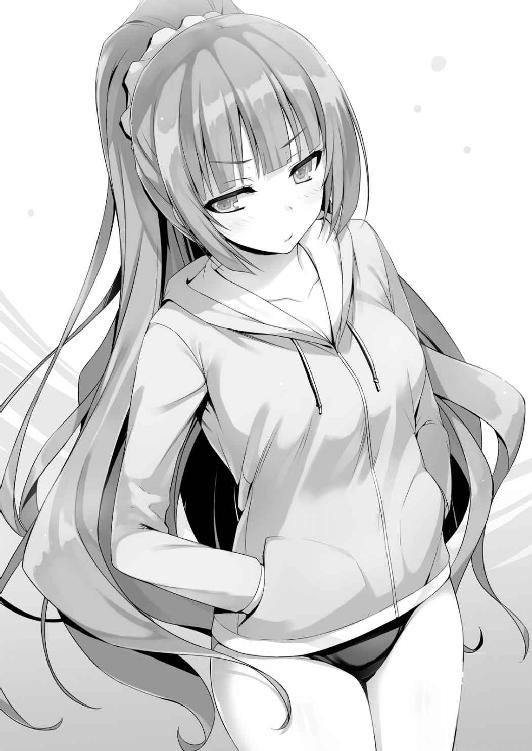
それに混雑具合は把握しているだろうから早急に咎めてくるのも考えにくい。
「別にいいし......」
「いいから」
「いいからって......だからやだってば」
「競泳水着なら見られても平気だろ」
「そういう問題じゃないし。なんであんたに水着見せなきゃいけないわけ......」
どうやらその部分の方が引っかかっているらしい。
だったら多少強引にでも泳がせてみるか。
「命令だ」
そう口にした瞬間、もの凄い形相で睨まれた。
「あんたマジ最低。ほんっと嫌い」
「命令を聞くのか聞かないのか、どっちなんだ？」
「......わかったわよ」
こちらの強制的な命令に軽井沢は渋々従う。不服そうに唇を尖らせながら。
ラッシュガードを脱ぎチェアーの上に置いた。競泳水着が姿を覗かせる。
軽井沢はこちらに背中を向けたまま振り向こうとしない。
「あたしは一生こんな水着でしか遊べないのかもね......」
割り切れば良くてもそれが出来ない。傷口に注目され理由を聞かれることを恐れている。
オレは軽井沢に一歩詰め寄ると強引に腕を摑んだ。
「ちょ、ちょっと!?」
そして引っ張りプールへと体を押すようにして落とした。ばしゃん！ と水しぶきがあがる。それを耳にした監視員の一人が、こちらに向かってメガホンを使い叫ぶ。
「もう閉館です！ ただちに出て下さい！」
「ぷはっ！ 何すんのよ！」
怒れる少女がプールから顔を出したところで、オレは手を差し伸べた。
「楽しかったか？」
「いきなり突き落とされて楽しいわけないでしょ」
差し出した手を、躊躇なく軽井沢は摑んだ。そして自分の方、つまり水中へと引っ張り込んだ。オレは踏みとどまることもせず、その力に身を任せるように、されど軽井沢にぶつからないよう意識してプールの中へ落ちる。先ほどよりも大きな水しぶきは監視員の怒りを買うには十分だった。駆け寄って来る監視員を見て軽井沢が笑う。そして水中から顔を出したオレの頭を押さえ、沈める。我ながら子供っぽいことをしたもんだと思ったが、一瞬でも軽井沢の楽しそうな笑顔を見れただけ、その価値はあったのかも知れない。
８
プールでひとしきり泳ぎ終えると、体力を使い果たしたせいかやけに喉が渇く。
それは他のメンバーも同じなのか、薄暮が迫るプールからの帰り道に一之瀬の友達が遠慮がちに言った。
「ねえ帆波ちゃん、アイス食べたいなって思うんだけど。どうかな」
「そうだねー。確かに食べたいかも」
さっぱりしたと言っても、まだうだるような暑さが残っている。
「良かったら少し寄り道して帰らない？」
近くのコンビニを見てそういった。全員似たような気持ちだったのか反対意見はでなかった。一緒に店内に入るとアイスコーナーに駆け寄るメンバーたち。堀北は飲み物にするか悩んではいたようだが、今は周囲と同じでアイスが食べたいようだった。
「俺はこれ！ ウルトラチョコモナカ！」
池が手を突っ込み引っ張り出したのは通常規格の３倍あるアイス。そのお値段なんと通常価格の４倍近い。なんだか損しているような気もするが本人が満足しているなら良いだろう。須藤と山内はカキ氷を、一之瀬はアイスキャンデーを選ぶ。
こんなところにもそれぞれの個性みたいなのが見え隠れしているから面白い。佐倉はどこか遠慮がちにオレの後ろで様子を窺っている。
「おまえは何にするんだ？」
「えっと、ど、どうしようかな」
わたわたと慌てるが、答えが出ないのも当然だ。佐倉は離れたところから懸命に背伸びしてアイスクーラーの中を確認しようとしていたからだ。オレの目線からでギリギリ一部が見えるかどうかだ。池たちが離れたところで軽く背中を押す。
「行こうか」
「う、うん」
アイス一個買うのに苦労するのは大変だ。フォローしつつ一緒にアイスを選ぶ。
佐倉は迷っているようで手がおろおろとしていた。
「どうしようかな......」
「嫌いか？ アイス」
「ううん、どれも好きだよ。この辺りにあるやつは全部食べたことあるかも」
ケースの右半分辺りを指差して言う。そうこうしている間にも、残っていた堀北もアイスを決めレジへ。
「早くしろよー。置いてっちゃうぜー」
会計を終えた池が冗談めかして言う。それを佐倉は過敏なまでに受け取ってしまったのか焦りがどんどん色濃くなっていく。
「えと、えーと......ごめんね......私こんなとき、決めるのに時間がかかっちゃうタイプで......」
「慌てる必要は無いぞ。あいつも冗談で言ってるだけだし。オレだって決めてないしな」
「綾小路くんは、どれにするの......？」
「オレか？」
いったん佐倉から注意を外し、ケースの中にあるアイスに目を向けた。正直どれも似たようなものが多いように見える。
「オレはこれかな」
答えて手に取ったのはよくあるスタンダードなソフトクリームだ。ミルクをぐるぐると巻いたヤツ。チョコレートがミックスされたやつもあったがまた今度にしよう。
「じゃ、じゃあ私もそれにする。これ美味しいからっ」
なんだか強引に決めさせてしまった気もするが、佐倉が納得しているならいいか。
購入を終えて外に出ると、全員で集まってコンビニの開いたスペースで食べ始めた。カップを取り外し、ソフトクリームを口の中に運ぶととろりと柔らかいミルクが口どけして広がる。
「これは......美味しいな......」
癖になりそうな甘さと冷たさが、体内に染み渡る。正直革命だ。アイスクリームがこんなに美味しいものだったなんて。ただ沢山食べると身体には悪そうだが......。
「おいしそうに食べるねー。まるで初めて食べたみたい」
「そりゃ誰だって美味しいと思うさ。このうだるような暑さだしな」
事実和気藹々と食べている姿を見渡せば一目瞭然だ。
「まぁねー。いやぁあまりに美味しそうに食べてるからさ。そんな顔初めてみたよ」
「彼人形のように表情を変えないから」
そんなツッコミを同じ人形タイプから受ける。実に納得が行かない。そのくせ、何故か堀北と一之瀬は意見が一致したのか嬉しそうに話をする。オレの話題から２学期の話題へと変わっていく。
「おい一之瀬、喋るのはいいけどアイスが大変なことになってるぞ」
「わわ、ほんとだっ！」
この暑さだとむき出しのキャンディーが溶けるのは時間の問題だった。滴り落ちる液を一之瀬は慌てて舌で舐めとり棒を口の中へと運んだ。
「はひはろっおしへれくれへっ」
もごもごと喋りながらお礼？ らしいことを言う。ポタポタとアスファルトの上に薄いアイスの染みを作りながらも美味しそうだった。
９
「お疲れ様、今日は楽しかったよ。ね、みんな？」
「うん。堀北さんや佐倉さんとお話しできて楽しかった。また一緒に遊ぼうね」
Ｂクラスの女子たちは満足する最後の休みを送れたようで、お礼を言った。佐倉も少し打ち解けることが出来たようで、小さくだが微笑んでいた。一方池と山内、それから須藤は落ち着かない様子で、挨拶もそこそこにエレベーターに乗り込んで行く。
「あとで部屋に遊びに行くぜ綾小路」
そんな余計な一言を残して去っていく。
「どうしたんだろうね。もう少し明るい印象があったんだけどな」
「今日は特別様子が変だったわね。誰かさんは心当たりがあるようだったけれど」
チラッとこちらを見てきたが、そのことにはノーコメントを貫き通した。色々と理由がある。
「それじゃ、また学校でね、綾小路くんっ」
「また、明日......」
櫛田、佐倉とも別れ、ロビーにはオレと堀北だけが残される。てっきり櫛田を避けるために残っただけかと思ったが、もう一基のエレベーターが来ても乗り込もうとはしなかった。
「帰らないのか？」
「あなたは？ もしよかったら少しだけ歩かない？」
「そうだな」
オレは堀北と再びロビーを出ると、夕焼けに染まる空を見上げながら並木道を歩く。
「今日は意外と楽しかったわ。たまにはこんな休みがあるのも悪くないわね」
それは本人も認める通り、意外過ぎる発言だ。堀北はまだ少し乾ききっていない髪をなびかせながらゆっくりと語る。
「明日から２学期が始まる。きっと１学期以上に厳しい戦いが待ってる」
「そうだろうな」
学校も入学したての生徒たちに分かりやすい簡単な試験を続けていたはずだ。それでも無人島でのサバイバル、船上でのダマしあいなど、通常の高校生からは概ねかけ離れた試験を繰り出してきた。この後どれほどの苦難が待ち受けているかは未知数だ。
「この夏休みの間色々と考えてみたの。私のしてきたこと、出来た事を」
「それで見えたものは？」
「それは秘密......あなたに言うと笑われるわ」
どこか情けないと感じるものがあったのか、そう言ってはぐらかした。
あとがき
４カ月ぶりです。衣笠です。最近ゲームの業界人が集まるパーティーにこっそり出席しました。
そこでお会いした某会社の社長様に『学生時代から衣笠さんのゲームプレイしていました！』と挨拶をされた時には時代の流れを感じ愕然としました。......うん、深くは考えないようにしよう......。
さて今回は４巻で行われた試験以降、残りの夏休みの出来事を描くストーリーとなりました。
会話は無いものの一部新キャラの登場など５巻への物語の前段階のお話しになっています。
また綾小路を取り巻く女性陣も色濃くなってきています。まだまだ進展はないものの、将来この中の誰か（あるいはこれから登場するキャラかも知れませんが）と綾小路の関係が友情を越えた方向に進む日も来るんじゃないでしょうか。更に次巻からはついに綾小路の過去にかかわる展開が少しずつ語られていくことになります。新たなライバルの登場、新たな特別試験と今まで以上に目まぐるしく変わる状況になっていきます。クラスの仲間と共に上を目指す者。１人の力で勝ち上がろうとする者。他人を利用し成り上がろうとする者など、三者三様のキャラクターたちが個性を発揮し始めます。
そして───！ 待ちに待った『ようこそ実力至上主義の教室へ』の『コミカライズ』第一巻が発売になりました。今回の４・５巻と同時発売ということで非常に胸が高鳴っております。読書用、観賞用、保存用と最低でも３冊は買います！ 男ばかり出てきて大変な作品を見事に上手く描いて下さっています漫画家の一乃ゆゆ様には大変感謝しております。恐らくトモセと共に美少女をもっとたくさん出せ、描かせろと恨んでいることでしょう。その恨みをバネにこれからも格好良く泥臭く親父臭い男キャラたちを描き続けて下さい（ゲス顔） そんな『ドキッ男だらけのようこそ実力至上主義の教室へ』を４・５巻、コミカライズ共々よろしくお願いいたします。
それから最後に......このあとがきの後に少しだけ番外編ストーリーが続きます。本編に水着シーン入れて、口絵も大サービスしたからええやん！と抗う衣笠に編集の怒りのメスが！ 綾小路が本編で見せていた謎の行動の正体とは。そして３バカの恐ろしい計画が明らかに......!?
※この番外編ストーリーに対するご意見ご感想は編集部スタッフまで！
○池寛治と山内春樹と須藤健の夏休み（番外編）
性差的な話になるが、男としての最終目標はどこにあるのだろうか？ 全世界の男性に意見を求めれば、そこには男の人生の真の目的が浮かび上がって来ることだろう。つまり愛する人と結ばれ、子孫を残し次の世代へと繫いでいくこと。その結論に至るはずだ。近年は様々な娯楽で溢れ返っている。遊園地や映画に始まりソーシャルゲームからヴァーチャルゲームなど人を楽しませるような娯楽は日進月歩している。だが長い人類の歴史から見ればまだまだ浅い。子孫繁栄は遥か太古からほぼすべての生物が行い続けているものだ。しかしながら、高校生に上がったばかりの男子生徒には子孫繁栄なんて目的を見据えることなどできやしない。ただ目の前の快楽や性的興奮を求めていると言えるだろう。
「......これより、オペレーションデルタについて作戦会議を行いたいと思う」
蒸れるほどの暑さが襲う中、Ｄクラスの池が似合わない正座をしたまま膝の上で握りこぶしを作る。額に浮き出た玉のような汗を一度拳の甲で拭うと、ベットリと額がテカった。
「俺は今回のオペレーションデルタにこの夏の青春全てを賭けようと思っている。春樹、おまえはどうだ？」
「同じ気持ちだぜ寛治。作戦が成功するなら俺は死んだっていいっ！」
自らの命を賭すことも厭わない覚悟に今まで静観していた須藤も同意した。
「正直に言やあ俺は反対だ。参加するかどうかは話を聞いてから決める」
三者三様に思うこと考えることは違うが目指す目的は同じ。前向きに考えているようだ。
全員が汗だくのせいか、室内の温度が更に蒸し暑くなるのを感じる。
「で、綾小路......もちろんお前も参加するんだよな？」
「その前にエアコンのスイッチ入れてもいいか？」
これ以上人の部屋を汗臭くされたら叶わない。
「......だな。暑い」
だったら最初からエアコンを入れさせてほしいものだ。雰囲気作りとかいう理由で冷房を入れることを拒否されていたのだが、部屋を提供したこちらが不快なだけだ。
「いつもいつも何でオレの部屋なんだ」
「前にも言わなかったか？ お前の部屋が一番片付いてて綺麗だからだよ。他の奴らの部屋はティッシュやら縮れ毛やらで汚すぎるんだよな。山内に至っちゃ足の踏み場もねーしな」
「須藤だって似たようなもんだろー？ 服とか下着が散乱しまくってんじゃん」
誰の部屋が散らかっていてもいいから、だったら片付けようって考えを持ってほしい。
「いつまで経っても生活感のない部屋だよな。入学した時から何も変わってねーじゃんか。ポイントもこれからは入って来てるんだから何か買ったらどうだよ」
「あとは絨毯だな絨毯。ケツが痛いんだよ」
須藤は以前も言ったようなことを言い、床を叩いた。
「貴重なポイントを簡単には使えないからな」
適当にあしらうと須藤は何故か食い下がってきた。
「無人島の試験は鈴音のおかげでポイントが手に入ったんだぜ。役に立ってないお前がポイントを節約するのは生意気だろ」
「確かに確かに。つかさ、堀北がいれば俺たちがＣクラスに上がるのも時間の問題だったりしてな」
５月の絶望的な状況から一転、オレたちは怒涛の勢いで上のクラスにポイントで詰め寄っている。
「ま、難しいことは二学期が始まってから考えようぜ。今はオペレーションデルタだ」
「本当にやる気なのか？」
「本当で本気さ。だって俺たちの青春はそこにあるんだぜ？ それとも崇高な目的であるオペレーションデルタに不満があるのかよ！」
今３バカはオレの部屋に集まりオペレーションデルタについて熱く語ろうとしていた。
それは前日の夜、携帯のチャットで話し合われたある計画に起因する。
「おまえがデルタとか作戦名を付けるのは勝手だが、つまるところ覗きだろ？」
そう。このデルタという作戦は名前こそ畏まっているが、内容は覗き。女子の裸を見たい男子の欲望が生んだ実にくだらないものだった。だが詳細は池以外にまだ誰も知らない。
「女の子の裸を覗く......それの何が悪い！ それが青春だ！」
悪いも何も重罪だ、恐ろしいほどに。
なのにこの男は堂々と開き直った。青春という言葉を利用して。
もし覗きが見つかれば少年Ａとして報道されたっておかしくない。
「女子にバレたらどうするつもりだ。怒られるだけじゃ済まないぞ」
覗く方法は不明だがリスクを伴うのは間違いないはずだ。
どうにかして思いとどまらせようとする。須藤もその点は引っかかるようで、無鉄砲に突き進もうとする池と山内に対して似た疑問をぶつけた。
「綾小路の言う通り危険だぜ。小学校ン時みたいに教室で体操服に着替えるわけでも、中学ン時の修学旅行の古びた旅館の風呂みたいに覗きポイントがあるわけでもないだろ」
「案ずるなって。このスーパーコンピュータと呼ばれた池寛治様の考えに抜かりはない」
立ち上がると、池は鼻高々に自信となる根拠を話し始めた。
「どこでどう覗くか、おまえらはそれが気になってるんだろ？ 大丈夫だちゃんと考えてある。だからまずは落ち着いて俺の話を聞いてくれ。第一にターゲットは厳選する。一度きりのチャンスなのに中途半端なブスを覗いたって仕方ないしな。そして当然Ｄクラスの子を選ぶ。身近な可愛い子の裸を見るからこそ最高に興奮するわけだ」
「それは俺も賛成だけどさ、俺たちにムフフなフラグは立ってないぜ？」
「無ければ作ればいい。フラグは自分で立てなきゃダメなんだぜ」
人差し指を振りながら池は携帯を操作し、画面をオレたちに向けてきた。
「何か忘れてないか？ 昨日からプール解放って大イベントが開催されてることを！」
「お、おぉ？ 確かにそれなら覗ける！ ......のか？ 俺入ったことないしな、こっちのプール」
携帯の文字に目を通すと確かにプールの解放について書かれていた。夏休みのラスト３日間だけ水泳部が使う特別水泳施設が使用可能であると。３日間の間午前９時から午後５時まで開放されるらしい。確かにその場なら、男女問わず当然泳ぐ者は皆一度裸になるだろうが......。
「着替えさせるためにプールに誘うのは分かるけど、だからって覗けるとは思えない」
オレは率直な意見を述べた。特別水泳施設に入ったことはないが監視カメラも当然設置されているはずだ。更衣室の中にまでカメラは当然ないだろうが、その手前の廊下になら設置されてあっても不思議じゃない。女子更衣室に近づく怪しげな男子が入れば即バレするのは避けられない。
腕を組み余裕ぶった池の表情は崩れないが、山内の方が先に不安になったようだ。
「かーっ俺は悲しいぜ。俺がそんなことも考えてない間抜けに見えるのか？ こっちは何日も前からこの来る日に備えて下準備をしてたんだって」
こちらからの質問責めに池は動じない。動じないどころか余裕の様子だ。
「下準備？ じゃあ肝心の覗き方を教えてくれよ」
もったいぶらせる池に我慢ならない山内が食い気味に問いかける。
「もうネタバレを希望か？ いいぜ、これを見てくれ」
池は徹底した下調べをしてきたのか、施設の見取り図を印刷して持ってきていた。その本格さに二人が感嘆の息を漏らした。
「おまえこんなもんまで用意したのかよ！」
オレも驚きだ。何より凄いのはその見取り図に細かな書き込みまでされていることだ。
だがおかしい。そこに書き込まれた字は池本人のそれとは異なる気がしたのだ。
「見てくれ。この特別水泳施設って普段授業で使うプールの２倍以上広いんだ。部員以外立ち入れないし、お察しの通り監視カメラもついてる」
男女合わせて６つの更衣室を兼ね備えた大型施設。恐らく大会などで使用されることもあるのだろう。男女は当然別の通路の先に更衣室があり、どちらの廊下にもカメラが設置されていることを記すマークが見取り図には手書きで書かれていた。
「こんなん絶対覗けないって」
男湯と女湯のように更衣室への道が分かれている為、一歩でも踏み入れば怪しまれる。まして夏休み最後のイベントともなれば大人数が予想される。到底不可能だろう。
「もちろん歩いてって更衣室を覗けるとは思ってないぜ。肝心なのはこの線。床に沿った通風孔のルートだ。実はこの通風孔、各男子更衣室と女子更衣室に繫がってるんだ。しかも更衣室は１年から３年まで別々の更衣室を使ってて、対となる更衣室は同じ学年に繫がってるって奇跡！」
分かりやすく言うと、１年生男子の使う更衣室の通風孔から繫がっている反対側の更衣室もまた１年生女子が使用していると言うことだ。そして池はその道を辿って覗きに行こうという腹。だが奇跡だと騒ぎ立てたくなる気持ちも分かる。更衣室は数がある分１つ１つはそれほど大きくないし、室内に障害物もない。仮にシミュレーション通りなら、通風孔からは着替える女子たちの姿をほぼ確認できるだろう。
しかしいまどき人間が簡単に入れるような通風孔があるだろうか。
「この通風孔のサイズは縦15センチ、横幅40センチだ」
「どう考えても人間が通れる大きさじゃないな」
それにギリギリ人間が通り、這いずれるサイズだったとしても映画のように上手く行くかどうか。身動きが自由に出来なければ最悪挟まって出れなくなることもある。
「クックック。それもすべて計算してるんだよ。こっちにはこれがある！」
持ち込んでいた鞄から誇らしげに取り出したのは小型の車だった。
そこにはアンテナのようなものが一本出ている。
「ラジコンか......！」
ラジコン、つまりラジコンカー。遠隔操作することで自由自在に動かせるおもちゃだ。さらにラジコン本体にカメラが付いている。それはリモコンに搭載された小さなカメラとリンクしているようだ。電源を入れて池が操作するとモニターが映った。高画質とはいえないが、周囲を確認するには十分だろう。言葉通り本当に用意がいい。
「これなら通風孔に入る大きさだ。あとはラジコンに備えたカメラで確認しながら通風孔を進むだけさ。しかもラジコン本体のミニカードに映像も保存出来るのさ！」
池の考えた作戦は闇が深く欲望にまみれたものだった。
......この男はなんて恐ろしいことを考えるのだろう。
完全に犯罪行為です。ありがとうございました。これは流石に山内も反対するだろう──。
「おぉ！ すげえ！ これなら完璧じゃん！ なあ健！」
賛同するんかーい......。もう軽すぎる心のノリで突っ込むしか出来ない。
「だな......なんかドラマみたいな感じじゃねーか」
「どうだー！ 完璧だろお！」
確かに、これなら気づかれず目的地にたどり着ける可能性はあるが......。
それにしても用意周到だ。それ故にオレはひとつの仮説を立てる。
「もしかして今回の覗き、博士も一枚嚙んでるのか？」
池一人が考えた計画とは到底思えない。ラジコンだって簡単に買える金額でもないだろう。
「ど、どうしてそれをっ!?」
どうしてもこうしても、用意周到に準備されたラジコンの存在からそのやり口まで池らしくない。それに監視カメラの位置や通風孔の道筋など知識がある人間が調べないと分からないことだ。
「くそ、バレたらしょうがない！ そうだよ、博士に聞いたんだよ。ちぇっ、折角俺が全部考えたことにしたかったのによ」
「それで当日の具体的な作戦は？」
やはり博士に知恵を借りたらしい。仕切りなおしとばかりに池が説明しだした。
「まず覗きたい女の子たちを明日のプールに誘う。そしたらほぼ同時に更衣室に入るだろ？ 俺たちは入ったらすぐに奥にある通風孔の前を陣取る。もし使用者がいたら須藤、おまえが脅してでも退かせてくれ。それからすぐに３人は着替えるためにタオルを引っ張り出して通風孔付近を見られないように人間の壁を作るんだ。んで、俺が急いで通風孔の留め具を外してラジコンを投入。操作するからさ、その姿を見られないようにお前らが俺を隠してくれ。後はラジコンを操作して女子更衣室の前に止めて録画。着替え終わったと判断したところで引き上げるって寸法さ」
話の流れは比較的シンプルなため簡単ではあった。だがやや行き当たりばったりなところはぬぐい切れない。
「俺が脅しで邪魔な奴を退かす。もしくは近づいてくる奴を近づけなきゃいいんだな？」
須藤に適任な役目と言える。強面として知れ渡っているため他の生徒は下手に近づいては来ないだろう。
「わかったか？ このオペレーションデルタの凄さがっ」
「け、けどさ寛治。これって犯罪だよな......何か覗きよりも罪が重そうっていうか......」
「確かに犯罪さ。厳密にはな。けどお前ら自分の過去を振り返ってみろよ。きっと似たような犯罪をやってるはずなんだぜ？」
「あ？ なんだよそれ。俺は犯罪なんてやってねーよ？」
「だったら聞くけどな健。暴力で人を傷つけたら犯罪だろ？ 大人が誰かを殴ればテレビやってるニュースに取り上げられるだろ？ お前暴力振るってるじゃん」
「それは......喧嘩と暴力は別だろ」
「あいにくだけど、俺は暴力なんて振るったことはないぜ」
「なら春樹、お前小学校のとき好きな女子の縦笛舐めたり体操着嗅いだり、そんなことは全くしなかったか？」
「うっ......」
何が当てはまったかは知らないが山内は身に覚えがあるらしい。
「もし大人が同じことをしたら？ 犯罪だろ！」
「た、確かに」
「つまり覗きも盗撮も許されるのは未成年のうちまで。ここでやらなきゃいつやるんだ！」
その熱意は間違いなく山内と須藤の心を打った。犯罪行為に罪悪感を感じていた二人に決意を固めさせるだけの覚悟があったようだ。
「やるか春樹。なんとかなんだろ」
「そ、そうだな。よし池の案に乗ってやるぜ」
「おまえらいいのか、本当に。犯罪だぞ」
どれだけ綺麗事を並べたって犯罪は犯罪だ。
「さっきから言ってるだろ綾小路。笛を舐めるのも犯罪だし直接着替えを覗くのも犯罪。だったら盗撮するのだって同じ犯罪だ。けどな、これは青春なんだよ。男子が女子の着替えを覗いたって注意されるだけで逮捕なんてされない。そういうことだろ！ じゃん！」
「まぁ納得できなくもねーな。時代がハイテクになっただけで、実際世の男は大なり小なりそういうことは経験して大人になるわけだしな。小学生の万引きも高校生の万引きも罪の重さはおんなじだ」
もはや女子の着替えが見たいがために、こいつは強引に正当化しようとしていた。
「百歩譲って、今のハイテク時代に合わせた覗きが盗撮だとしよう。けどな、もしそれがバレたとき、逮捕されることはなくても退学になることは十分にあるんだからな？」
「退学が怖くて覗けるか！」
おー！ と須藤と山内も腕を掲げる。
「あとはお前だけだぜ綾小路。ここまで聞いたんだ、もちろん協力してくれるよな？」
「......乗り気にはなれないな」
「だからおまえの協力がいるんだよ。３人が壁になってくれれば絶対に見つからないって」
コイツの目は本気だ。ここでオレが抜けても絶対にやって見せると決めている様だ。
「わかった。オレも協力する。けど池ひとつだけ約束してくれ。この作戦には大きいリスクも伴ってる。見つかればタダじゃ済まないからだ。だから成功するにしろ失敗するにしろこれ一回きりにすると誓ってくれ。そうじゃなきゃオレは協力しないし、場合によっちゃ学校に報告する」
厳しい言葉と甘い言葉を織り交ぜながら話す。そうすることで池から妥協案を引き出す狙いだ。
一方的に反対だけすると、池たちは黙って犯罪行為を冒す可能性がある。だから協力する条件として一度きりにしてくれと念を押しておく。間違いないのは、見つかればＤクラスは崩壊するかも知れないってことだ。それはこの場にいる全員がわかっているはず。
「わかってるって。俺だって何度もこんなことしていいとは思ってないしさ」
「それならいいんだ。お前が学生の青春を賭けて挑もうとしてるのがわかったからな」
「オレから一つ提案させてくれ。９時にプールが解放されるならそのタイミングに合わせて行った方が確実だ。１番乗りが出来れば更衣室の一番奥を取るのも簡単だしな」
「なるほど！ それは採用だな！ 男子生徒の青春つったら覗きだ！ やってやろうぜ！」
これがプール前日に行われていた話し合い、オペレーションデルタの全貌だ。
１
そしてプール当日、一番乗りに更衣室に入ったオレたちは奥を陣取りタオルを広げていた。続々と入って来る男子たちは思い思いに雑談しておりこちらには意識を向けていない。
「早くしろよ池」
須藤がタオルを広げながら着替えるフリをしながら通風孔にしゃがみ込んでいる池を急かした。池は予めバスタオルに包んでおいたラジコンとドライバーセットを取り出し、床下換気口に取り付けられた金具を取り外す。そして素早くラジコンを投入しラジコンを操作し始めた。
ペンライトを搭載したマシンは小さなモニターに薄っすらと道筋を示しながら進んでいく。
「く、くそっ！ 流石に暗いな！」
ペンライトで照らしただけでは、換気口は暗くモニターの視界が悪くなる。
それでも少しずつ近づいてくる明るい先に向かいラジコンカーは突き進んだ。行き過ぎてしまったとしても鉄格子が車を止めてくれるため落ちる心配は無い。それでも慎重に低速で車を進める。
「よし、もうすぐで視界が開けるぞ───！」
モニター越しに更衣室が移り込んだ。そして画質は荒いが堀北たちの姿がモニターに見えたのだ。
「う、うひょう！」
池（博士）が考えた作戦は見事に成功したと言っていい。モニターにはＤクラスの生徒や一之瀬の姿がしっかりと捕らえられていたのだ。今ラジコンはしっかりと録画をしていることだろう。
モニターを見ていれば、リアルタイムで着替えを拝見することも出来る。
「お、俺にも見せろよ寛治っ。よくみえねーだろっ」
「バカ野郎俺にもだっ」
須藤と山内が不満そうに池にモニターを見せるよう催促する。しかしそんなことを続けていれば他の男子連中に怪しまれるのは避けられない。オレはそれを利用することにした。
「録画は出来てるんだから、無理しない方がいいんじゃないか。そろそろ怪しまれる」
「く、そ、そうだな。とりあえず着替えた方がいいよな......」
舌打ちした山内が悔しそうに顔をしかめる。
そう、たとえモニター越しに覗けなくとも、ラジコンに搭載されたミニカードには現在進行形で録画が行われている。早くラジコンをバックさせたい気持ちを押さえ池は耐える。
ロッカーに荷物と一緒にコントローラーを押し込み、着替えに集中した。
「な、何分くらい待てばいいかな......」
「20分は置いておきたいよな。少なくともさ......」
早く切り上げすぎて着替えのシーンを押さえられないのも、逆に放置しすぎて回収不能になることも避けなければならない。おまけに着替えに手間取りすぎるとトラブルの火種となる。多分こいつらにとっては人生で一番長い20分になることだろう。
「オレは先に行ってるぞ」
「わ、ちょ待てよ綾小路！ 裏切るのか!? 後で見せてと頼まれても見せないからな！」
「そうじゃない。20分も経って男子が誰も出てきてなかったら他の奴が怪しむぞ」
「う、それもそうか......じゃあ上手くやってくれよな」
「わかってる」
ラジコンカーを回収する３人を置いてオレは一足先にプールへと向かったのだった。
２
一方、オレが男子更衣室を出た同時刻。女子更衣室では３バカの望む理想的な光景が繰り広げられようとしていた。いや、実際にカメラは音声と映像をしっかりと捉えていた。
「なんか新鮮だよね、授業以外で学校のプールを利用するなんて」
櫛田はロッカーの中に鞄を入れながらそんなことを口にする。
隣で着替える一之瀬は早くも服に手をかけていた。
「そうだねー。なんか市民プールとかに遊びに来た気分」
「一之瀬さんって凄く素敵なプロポーションだよね......」
惚れ惚れするようなため息をついて、櫛田が言う。一之瀬はちょっと恥ずかしそうにしながらも、櫛田の体系を見て同じく納得の行く一言を口にした。
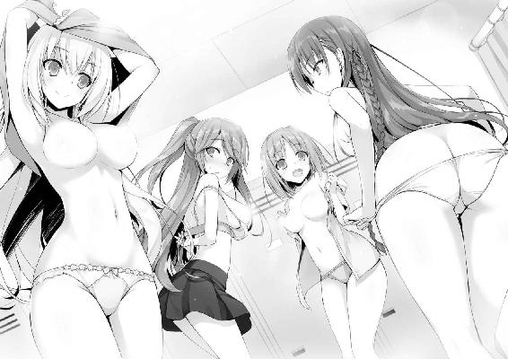
「櫛田さんこそバランスの取れた身体付きしてるし、私なんかに負けてないと思うな」
事実胸のサイズこそ一之瀬に大きく軍配が上がるが、総合力では負けていない。
一方、一之瀬と同等かそれ以上のバストを秘めた佐倉は、二人から距離を少しだけ置いて着替え始めていた。同姓どうしでも気恥ずかしさが大きい。それにこの後プールサイドに行くことを思えば身体が重くなるのも無理は無かった。
授業と違い救いなのは、上半身をすっぽり隠すことが出来るラッシュガードを着用できる点だろう。佐倉のような恥ずかしがり屋にとっては救世主のようなアイテムだ。
「一之瀬さん、ジロジロ見ないで貰える？」
一之瀬からの熱視線を受け堀北が嫌悪感を抱く。着替えるのを中断し距離を置いた。
「や、ごめんごめん。なんて言うか堀北さんの肌がきれいで透き通るようだなって思ってたら魅入っちゃって。同じ女の子として、やっぱり可愛い子には注目しちゃうよね。桔梗ちゃんもそうは思わない？」
「うん、堀北さんは凄く可愛いから」
「............」
櫛田の一言にため息をつきながら堀北が着替える。
「でも今日はよく来てくれたね。こういうイベントには顔を出さないって思ってた」
「好き好んで出るものじゃないのは確かね。けれど時には自分の意思に関係なく、甘んじて受け入れなければならないときがあるのよ」
「んーと？ なかなか難しいことを言うね、堀北さんは」
無論、詳細は誰にも話さない。水筒が腕にはまって抜けなくなったことは恥であり、墓場まで持っていくことだからだ。綾小路に知られたことすら激しく後悔している。何故あの時パニックになって電話をしてしまったのか、それを反省しっぱなしだ。
「私に話しかけてないで着替えたら？」
堀北に軽くあしらわれた一之瀬は次のターゲットを見定める。それは後ろでコッソリ着替える佐倉の存在だった。『皆は一人のために一人は皆のために』を大事にする一之瀬としては満遍なく仲良くしたい気持ちが強い。明らかに一人だけ浮いた存在である佐倉とも仲良くなりたいと考えていた。Ｄクラスの内情を知らない一之瀬だが、佐倉が大切に扱うべき生徒なのは分かりきっていた。深入りし過ぎるのは論外だが、全くの無視も出来ない。
櫛田も堀北もむやみやたらと佐倉には話しかけない。一見すると引っ込み思案で大人しいタイプ。だが一之瀬が分析するに、佐倉は人見知りではあるが仲良くなった相手には心を開き口を開くように感じた。それなら自分にも彼女の友達になるチャンスはあるはずだと思っていた。
「佐倉さんとこうして会うのも久々だよね。クラスが違うとなかなか会えないねー」
「そ、そうですね......」
「帆波ちゃん佐倉さんと知り合いだったんだ、ちょっと意外かも」
２人の関係に疑問を感じた櫛田が、少し遠慮がちに聞いてきた。
「前にちょっとね。ねー？」
「は、はい......」
想定以上に固い佐倉は目を泳がせながら言った。
その恥ずかしがる仕草に一之瀬はクラリとさせられたが、グッと堪える。
「にしても......」
失礼のない程度に、一之瀬は佐倉の身体を見る。可愛い顔立ちに細身だが肉付きの良いボディ、何より大きな胸はまさに紙面の向こう側にいるアイドルそのものだ。
まるで男の子のような視線で肉体を見てしまう。
守ってあげたくなる系女子の佐倉は、もう少し明るくなれば学年随一の人気者になりそうだ。
「そう言えば帆波ちゃん、今日神崎くんも一緒だけど、そのことで少し聞いてもいいかな？」
「にゃ？ 神崎くんがどうかしたの？」
佐倉との距離感を計っていた一之瀬は、櫛田から話を振られて視線を移す。
それを佐倉は逃げる隙と判断し一之瀬から少し距離を取った。
「クラスの女の子に神崎くんが気になってる子がいてさ。その辺り事情はどうなのかなって」
「わー意外とモテるねー神崎くん。ウチのクラスにも好きっぽい子いるし。あ、でも今のところ誰とも何もないんじゃないかな？」
「そっか、じゃあ声かけてみたらって話てみるね」
「うんうん。神崎くんも嬉しいんじゃないかな。多分だけど」
「多分なんだ」
ざっくりした回答に櫛田が笑う。
「彼って無口と言うか口数が少ないから。それがいいんだろうけど、主張がなさ過ぎてよくわかんないんだよね」
それが同じクラスメイトとしての率直な感想だった。
「そうだねー。確かにわかりづらいかも」
そうこう一部でトークが盛り上がっていると、周囲は既に着替えるべき水着に手を伸ばしていた。
「わっとと、着替えなきゃ」
出遅れた一之瀬が手早く服を脱ぐ。男子の着替えを彷彿とさせる素早い動きだ。
ぶるんと胸が揺れる。関心を示さないようにしていた堀北ですら、一瞬目を奪われる。その破壊力抜群のプロポーションがあれば大半の男は一発ＫＯだ。
近年食生活が欧米寄りになったとは言え、同じ高校一年生の身体とは思えない。
「......あなた、その胸はいつから？」
「ふぇ？ いつ、って大きくなりだしたの？ 中学３年生になったあたりかな、どんどん育っちゃってさ。どうして？」
「いえ、理解出来たわ。あなたが持て余し気味にしている理由がね」
必ずしもではないが、女の子は自分の変化に対応出来ないタイミングがある。特に胸の発育は本人にも読みきれないのだ。一年足らずで急成長を遂げたなら仕方がない。
「よし、着替え終わり！」
最後尾から追い上げた一之瀬は、そう声をあげた。
「お先いってるねー」
いち早くプールに行きたい衝動を抑え切れないのだろう。ロッカーのキーをもって更衣室を後にした。
「台風みたいな人ね、彼女」
良いも悪いもなく、純粋な気持ちを堀北は口にした。誰かに聞かせたわけじゃなかった。
けれどそれを少し遠くで聞いていた櫛田が拾い上げる。
「一之瀬さんと一緒にいると、ついつつい笑顔になるんだよね」
そう答えた。
堀北は横眼だけ一度櫛田にやったが、その言葉に答えることはなかった。
もちろん櫛田もそれで何かを思うことはない。
ただ単純に櫛田は立て続けにこう言った。今度は堀北ではなく新たな来訪者にだ。
「あれ軽井沢さん？ おはよー、二人も遊びに来たんだ」
常に周囲の状況に敏感な櫛田が、更衣室にやって来た軽井沢と二人の女子に目を向ける。
「偶然。あたしらも泳ぎに来たんだ」
「へえ......」
驚きを隠せない櫛田。軽井沢は普段授業では全く泳がないからだ。
軽井沢たちは奥の方のロッカーへと向かっていく。櫛田はそれに少し違和感を覚えながらも着替えをつづけた。
「うわ......マジでやってるし。マジの最低変態ばっかり......」
床下換気口に取り付けられた鉄格子にぴったり張り付くように停車しているラジコンを見つけた。キラリと光るレンズが女子更衣室を見事な角度で捉えている。
普通なら、この鉄格子は誰にでも取り外せるが、取り外すには相応の手間と時間がかかる。プラスネジで四方を取り付けられていて、それを外さなければならないからだ。だが軽井沢は鉄格子に触れ、難なくそれを後ろに引くことで取り外す。
彼女が特別怪力なわけでも、またドライバー技術に長けているわけでもない。
ただ単に昨日の段階でこの更衣室に足を踏み入れネジを外していたに過ぎない。鉄格子はネジがなくとも、簡易的に固定できるようになっているためだ。
軽井沢はラジコンを手で抑え、それを摑み持ち上げる。モニターの横のランプは薄赤く光録画中になっていることが窺える。予め綾小路によって聞かされた手順でラジコンからミニカードを抜き取った。この時点で録画機能は停止し、再度録画の手順を踏まなければ録画ランプが付くことはない。
そしてすぐに何もデータが入っていない新しいミニカードを挿入し、床下換気口に戻す。
「これでよし、と」
後は勝手に時間が立てば、ラジコンは戻っていくだろう。
「......あいつだけ、ちゃんとしてんだ......」
男子連中のクズっぷりに呆れながらも、たった一人それを阻止するべく動いていた綾小路のことを考える。もし綾小路が覗きに加担、あるいは見てみぬフリをしていたなら、クラスメイト内外の女子が知らぬ間に男子に裸を見られていたことになる。それもデータとして永久に残る形で。
「恵ちゃん、もう大丈夫？」
そう軽井沢の背中から話しかけてきたのは、同じクラスメイトの園田。それから石倉も少し不安そうな様子で軽井沢を見ていた。
「あぁうん、ありがと。もう大丈夫」
一年生の女子が入り乱れている更衣室の中で、一人で床下換気口を見ていると露骨に怪しまれる。池たちがバリケードを作ったように、軽井沢もまた親しい友人たちを利用して視界を遮らせた。
もちろん換気口の近い奥、その周辺のロッカーは全て『使用済み』に見せかけるため、鍵をかけて使えないようにすることも忘れていない。軽井沢は他人の目を盗みながら、心拍数を上げることなく冷静にその鍵を一つずつ戻していく。
友人である園田と石倉には詳細は説明していない。説明せずとも大人しく従い口外しない確信がある人間......気はけして強くなく、それでいて仲間ハズレを恐れている生徒を人選している。
着替えを終えてＤクラスの顔見知りが全員いなくなったのを確認して、軽井沢は二人に対して労いの言葉をかけた。
「今日は協力してくれてありがと。あたしこの後も少し予定があるんだけど、二人は遊んでくわけ？」
「あ、うん。そうしようかなって。ね？」
二人は互いに頷きあう。軽井沢もその点をどうこういうつもりはないようだった。
３
くたくたになるまで遊んだプールから帰り、オレは自室の前に戻ってくる。
すると部屋の前には既に３人が興奮気味に待機していた。
「遅いぞ綾小路！ 早く開けろよ！」
待ちきれない須藤がドアを蹴る。隣の部屋に迷惑だし管理人に目を付けられるからやめてほしい。
「綾小路早くしろよ!!」
興奮を抑えきれない男連中に背中を押されるように、オレは自分の部屋を開けさせられた。池たちの手にはラジコンから回収したカードが握られている。そしてそこには、女子たちが着替える生々しい映像が記録されているに違いない。３人はそう思っている。
家主よりも先に部屋に上がり込むと、勝手にパソコンの電源を立ち上げた。
「な、なぁ凄いのが映ってたらあとでコピーしてくれよな......」
「おまえら待てよ。まずは俺が確認すんだよ、鈴音の裸を見る権利はねーんだからな」
「落ち着けって二人とも。ここは皆で仲良くみようぜ。ぐへへへへ」
もはやオレのことなど眼中にないのか、パソコンが起動するのを今か今かと待っていた。色々と大変な一日だったオレはそのままベッドに座り込んだ。
「中身を確認したら帰ってくれると助かる」
「んだよ綾小路、おまえ一人だけ大人ぶりやがって。おまえだって見たいだろ？」
「引き返すなら今のうちだと思うけどな」
「あーそうかよ。いい子ぶるなら絶対見るんじゃないぞ。つか見せてやんないからなっ」
池はパソコンの画面の前に立ちふさがるようにして両手を広げ視界を遮った。
「女の裸に興味ない野郎なんていねーぞ。素直になれよ」
もう我が家のようにくつろぐ須藤からの言葉は一理あるが、そこまで必死になって裸を見ようとは思わない。少なくとも退学を賭けるだけの価値があるとは思えなかった。
「ぬわああ!? なんでなんで、なんで何も映ってないんだよ!!」
博士から借りてきたと思われるミニカード読み取り機にはデータが何も入っていなかった。つまりラジコンによる録画はそもそも上手く機能していなかったということだ。
「な、ない。データが......」
「そんなわけないだろ？ だ、だってちゃんと録画出来てたよな？ な？」
３人は慌てふためいて何度もフォルダを開きなおすが、そこには何もない。
当たり前だ。録画していたデータの入ったカードは軽井沢が抜き取り空のカードと入れ替えた。どれだけ探そうとしても存在しないファイルが見つかることはない。
一方で本物のデータは既に破壊してしまったため残っていないのだ。
「なんでないんだああああ!!」
こうして３バカの野望は内側からの妨害工作により消滅したのだった。
著者
衣笠彰梧（きぬがさ・しょうご）
11月生まれのＡＢ型。ＰＣゲームの企画・シナリオを主に担当する。代表作は『暁の護衛』『レミニセンス』。
福岡を拠点にするも、ついに東京に行く可能性が浮上。ただし阪神ファンは貫くと決意を固めている。
イラストレーター
トモセシュンサク
９月生まれ射手座のゲーム原画家、イラストレーター。
原画担当に『暁の護衛』『レミニセンス』など。
ポケモンＧＯまだやってるの？ と友達に鼻で笑われました。まだやってます。
カバー・口絵・本文イラスト／トモセシュンサク
装丁／伸童舎
ようこそ実力至上主義の教室へ4.5
衣笠彰梧
2016年9月23日 発行
(C)Syougo Kinugasa 2016
本電子書籍は下記にもとづいて制作しました
ＭＦ文庫Ｊ『ようこそ実力至上主義の教室へ4.5』
2016年9月30日初版第一刷発行
発行者 三坂泰二
発 行 株式会社ＫＡＤＯＫＡＷＡ
〒102-8177 東京都千代田区富士見2-13-3
0570-002-001（カスタマーサポート）
年末年始を除く 平日10：00～18：00まで
http://www.kadokawa.co.jp/